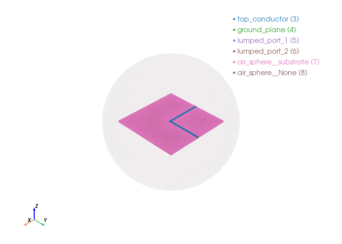

L-shaped antenna: time-domain simulation#
This notebook builds the mesh of the L-shaped antenna and runs a transient Palace simulation (Generalized-Alpha scheme) exciting port 1 with a ModulatedGaussian pulse centred at 3.64 GHz, so we can watch the signal propagate to port 2.
The S-parameter and signal-integrity analysis (chamfer + BER) lives in the
signal_integrity.ipynb notebook.
import gmsh
from pathlib import Path
import numpy as np
import matplotlib.pyplot as plt
from palacetoolkit.simulation import generate_palace_config_from_entities, run_palace
from palacetoolkit.viz import view_mesh
from palacetoolkit.postpro_vtu import generate_transient_video
from palacetoolkit.mesh import (
Entity,
run_entity_pipeline,
generate_3d_mesh,
create_graded_mesh,
)
Parameters:#
h : Patch height along z-axis, specified as a scalar in meters.
l1 : Ground plane length along x-axis, specified as a scalar in meters
w1 : Ground plane width along y-axis, specified as a scalar in meters
w3 : Strip line width along y-axis, specified as a scalar in meters.
air_height : Air box height along z-axis, specified as a scalar in meters.
air_margin : Air box margin along x and y axes, specified as a scalar in meters.
freq : Simulation frequency in GHz, specified as a scalar.
filename : Output mesh filename, specified as a string.
l1: float = 0.06
w1: float = 0.06
w3: float = 0.002
h: float = 0.0013
air_height: float = 0.025
air_margin: float = 0.025
freq: float = 3.3
mesh_file: str = "l_antenna.msh"
eps_r: float = 2.2
loss_tan: float = 0.0009
wavelength = 3e8 / (freq * 1e9)
mesh_size = wavelength / 15
Initialize the model#
gmsh.initialize()
gmsh.model.add("patch_antenna")
kernel = gmsh.model.occ
Geometry Construction#
total_xmin = -l1/2 - air_margin
total_xmax = l1/2 + air_margin
total_ymin = -w1/2 - air_margin
total_ymax = w1/2 + air_margin
total_zmax = h + air_height
# 1. Create volumes
substrate = kernel.addBox(-l1/2, -w1/2, 0, l1, w1, h)
airsphere_radius = max(abs(total_xmin), abs(total_xmax), abs(total_ymin), abs(total_ymax), total_zmax)
air_sphere = kernel.addSphere(0.0, 0.0, 0.0, airsphere_radius)
kernel.synchronize()
# 2. Create 2D surfaces (ground, patch, ports)
ground_plane = kernel.addRectangle(-l1/2, -w1/2, 0, l1, w1)
strip_length_x = l1/2
strip_length_y = w1/2 + w3/2
feed_line_x = kernel.addRectangle(-l1/2, -w3/2, h, strip_length_x, w3)
feed_line_y = kernel.addRectangle(0, -w3/2, h, w3, strip_length_y)
top_conductor, top_map = kernel.fuse(
[(2, feed_line_x)], [(2, feed_line_y)],
removeObject=True, removeTool=True
)
kernel.synchronize()
# Lumped ports - build directly in-plane, no rotation
# Port 1: at x = -l1/2, vertical face
p1 = kernel.addPoint(-l1/2, -w3/2, 0)
p2 = kernel.addPoint(-l1/2, w3/2, 0)
p3 = kernel.addPoint(-l1/2, w3/2, h)
p4 = kernel.addPoint(-l1/2, -w3/2, h)
lp1_a = kernel.addLine(p1, p2)
lp1_b = kernel.addLine(p2, p3)
lp1_c = kernel.addLine(p3, p4)
lp1_d = kernel.addLine(p4, p1)
loop1 = kernel.addCurveLoop([lp1_a, lp1_b, lp1_c, lp1_d])
lumped_port_1 = kernel.addPlaneSurface([loop1])
kernel.synchronize()
# Port 2: at y = w1/2, vertical face
p5 = kernel.addPoint(0, w1/2, 0)
p6 = kernel.addPoint(w3, w1/2, 0)
p7 = kernel.addPoint(w3, w1/2, h)
p8 = kernel.addPoint(0, w1/2, h)
lp2_a = kernel.addLine(p5, p6)
lp2_b = kernel.addLine(p6, p7)
lp2_c = kernel.addLine(p7, p8)
lp2_d = kernel.addLine(p8, p5)
loop2 = kernel.addCurveLoop([lp2_a, lp2_b, lp2_c, lp2_d])
lumped_port_2 = kernel.addPlaneSurface([loop2])
kernel.synchronize()
# Define the entities which will be the physical groups.
entities = [
Entity("substrate", dim=3, btype="dielectric", mesh_order=1, tags=[substrate], loss_tan=loss_tan, eps_r=eps_r, mu_r=1.0),
Entity("air_sphere", dim=3, btype="dielectric", mesh_order=2, tags=[air_sphere], loss_tan=0.0, eps_r=1.0, mu_r=1.0),
Entity("top_conductor", dim=2, btype="pec", mesh_order=1, tags=[top_conductor[0][1]]),
Entity("ground_plane", dim=2, btype="pec", mesh_order=1, tags=[ground_plane]),
Entity("lumped_port_1", dim=2, btype="lumped_port", mesh_order=0, tags=[lumped_port_1], R=50.0, direction="+Z", excitation=True),
Entity("lumped_port_2", dim=2, btype="lumped_port", mesh_order=0, tags=[lumped_port_2], R=50.0, direction="+Z", excitation=False),
]
Info : [ 0%] Union
Info : [ 10%] Union
Info : [ 20%] Union - Performing Vertex-Face intersection
Info : [ 30%] Union
Info : [ 40%] Union
Info : [ 50%] Union
Info : [ 60%] Union
Info : [ 70%] Union - Filling splits of vertices
Info : [ 80%] Union - Splitting faces
Info : Cannot bind existing OpenCASCADE surface 9 to second tag 10
Info : Could not preserve tag of 2D object 10 (->9)
pg_map = run_entity_pipeline(entities)
lumped_port_1 = entities[-1].dimtags[0]
lumped_port_2 = entities[-2].dimtags[0]
# Refine near the top conductor and also locally refine the ports.
create_graded_mesh( wavelength,
ppw_near=100,
ppw_far=15,
set_as_background=True,
local_refinements = {lumped_port_1: 100, lumped_port_2 : 100})
mesh_sizes = {
"substrate": wavelength / 12,
"air_sphere": wavelength / 4,
"lumped_port_1": wavelength / 18,
"lumped_port_2": wavelength / 18,
"top_conductor": wavelength /10
}
generate_3d_mesh(entities, mesh_sizes, mesh_file, optimize=True, verbose=False)
gmsh.finalize()
Physical group 'substrate' (dim=3): pg=1, tags=[1]
Physical group 'air_sphere' (dim=3): pg=2, tags=[2]
Physical group 'top_conductor' (dim=2): pg=3, tags=[9]
Physical group 'ground_plane' (dim=2): pg=4, tags=[8]
Physical group 'lumped_port_1' (dim=2): pg=5, tags=[10]
Physical group 'lumped_port_2' (dim=2): pg=6, tags=[11]
Physical group 'air_sphere__substrate' (dim=2): pg=7, tags=[12, 13, 14, 15, 16, 17, 18, 19]
Physical group 'air_sphere__None' (dim=2): pg=8, tags=[20]
ignoring 3 curves from {'air_sphere__None'}
global: 28 curves, SizeMin=0.0009
ppw_near=100 ppw_far=15
SizeMax=0.0061 transition=0.0227
local: dimtag=(2, 11), ppw=100, SizeMin=0.0009
local: dimtag=(2, 10), ppw=100, SizeMin=0.0009
view_mesh(mesh_file, transparent_groups= "air_sphere__None")
Loading mesh file: l_antenna.msh
Groups to render transparent: air_sphere__None
Mesh loaded successfully with 2 cell blocks
Found 10310 triangles total
Physical group tags in mesh: {3: 'top_conductor', 4: 'ground_plane', 5: 'lumped_port_1', 6: 'lumped_port_2', 7: 'air_sphere__substrate', 8: 'air_sphere__None'}

Simulation Configuration#
We define the parameters for the transient simulation: the carrier frequency of the modulated Gaussian excitation, material properties, port impedance and element order.
output_file : output filename for the configuration JSON file
freq : carrier frequency of the excitation pulse (GHz)
eps_r: relative permittivity of the substrate
loss_tan: loss tangent of the substrate
port_impedance: characteristic impedance of the lumped ports (Ohms)
solver_order: order of the finite element basis functions
output_file_transient: str = "l_antenna_transient.json"
freq: float = 3.64
eps_r: float = 2.2
loss_tan: float = 0.0009
port_impedance: float = 50.0
solver_order: int = 2
import numpy as np
eps_0 = 8.8541878128e-12
sigma = 2 * np.pi * freq * eps_0 * eps_r * loss_tan
Generating the Palace Configuration File#
We assemble the simulation parameters into the JSON configuration for the transient solver (Generalized-Alpha, modulated-Gaussian excitation).
config_transient = generate_palace_config_from_entities(
entity_defs=[e.to_dict() for e in entities],
pg_map=pg_map,
mesh_file=mesh_file,
output_file=output_file_transient,
sim_type="transient",
excitation_freq=freq,
excitation_width=0.05,
max_time=0.5,
time_step=0.005,
save_step=2,
)
Palace config written to l_antenna_transient.json
Running PALACE#
run_palace(config_file="l_antenna_transient.json", num_procs=1)
Running: /home/martin/.cache/palacetoolkit/runtime/palace-cpu-v0.17.0/bin/palace --serial /tmp/palacetoolkit-docs.dabfYK/docs/examples/l_antenna_transient.json
>> /home/martin/.cache/palacetoolkit/runtime/palace-cpu-v0.17.0/bin/palace-x86_64.bin /tmp/palacetoolkit-docs.dabfYK/docs/examples/l_antenna_transient.json
_____________ _______
_____ __ \____ __ /____ ____________
____ /_/ / __ ` / / __ ` / ___/ _ \
___ _____/ /_/ / / /_/ / /__/ ___/
/__/ \___,__/__/\___,__/\_____\_____/
--> Warning!
Output folder is not empty; program will overwrite content! (postpro/l_antenna_transient)
Git changeset ID: v0.17.0-194-g01f5d9bd1
Running with 1 MPI process, 1 OpenMP thread
Device configuration: omp,cpu
Memory configuration: host-std
libCEED backend: /cpu/self/xsmm/blocked
Added 1443 duplicate vertices for interior boundaries in the mesh
Added 3286 duplicate boundary elements for interior boundaries in the mesh
Characteristic length and time scales:
Lc = 1.100e-04 m, tc = 3.669e-04 ns
Finished partitioning mesh into 1 subdomain
Mesh curvature order: 1
Mesh bounding box:
(Xmin, Ymin, Zmin) = (-5.497e-05, -5.500e-05, -5.500e-05) m
(Xmax, Ymax, Zmax) = (+5.492e-05, +5.491e-05, +5.500e-05) m
Parallel Mesh Stats:
minimum average maximum total
vertices 16196 16196 16196 16196
edges 103526 103526 103526 103526
faces 169866 169866 169866 169866
elements 82533 82533 82533 82533
neighbors 0 0 0
minimum maximum
h 0.00474058 0.0966723
kappa 1.05585 7.38466
Estimated current per-rank memory usage is: Min. 114.2M, Max. 114.2M, Avg. 114.2M, Total 114.2M
Estimated current per-node memory usage is: Min. 114.2M, Max. 114.2M, Avg. 114.2M, Total 114.2M
Configuring Robin absorbing BC (order 1) at attributes:
8
Configuring Robin impedance BC for lumped ports at attributes:
5: Rs = 7.692e+01 Ω/sq, n = (-1.0,+0.0,+0.0)
6: Rs = 7.692e+01 Ω/sq, n = (+0.0,+1.0,+0.0)
Configuring lumped port circuit properties:
Index = 1: R = 5.000e+01 Ω
Index = 2: R = 5.000e+01 Ω
Configuring lumped port excitation source term at attributes:
5: Index = 1
Configuring Dirichlet PEC BC at attributes:
3-4
Assembling system matrices, number of global unknowns:
H1 (p = 2): 119722, ND (p = 2): 546784, RT (p = 2): 757197
Operator assembly level: Partial
Mesh geometries:
Tetrahedron: P = 20, Q = 14 (quadrature order = 4)
Computing transient response for:
Excitation with index 1 has contributions from:
Lumped port 1
It 0/100: t = 0.000000e+00 ns (elapsed time = 6.70e-07 s)
Sol. ||E|| = 0.000000e+00, ||B|| = 0.000000e+00
Field energy E (0.000e+00 J) + H (0.000e+00 J) = 0.000e+00 J
Wrote fields to disk (Paraview) at step 1
Updating solution error estimates
It 1/100: t = 5.000000e-03 ns (elapsed time = 1.49e+01 s)
Assembling multigrid hierarchy:
Level 0 (p = 1): 103526 unknowns
Level 1 (p = 2): 546784 unknowns
Level 0 (auxiliary) (p = 1): 16196 unknowns
Level 1 (auxiliary) (p = 2): 119722 unknowns
Residual norms for PCG solve
0 KSP residual norm ||r||_B = 1.269615e-07
1 KSP residual norm ||r||_B = 9.638581e-08
2 KSP residual norm ||r||_B = 9.090338e-08
3 KSP residual norm ||r||_B = 1.059638e-07
4 KSP residual norm ||r||_B = 1.034920e-07
5 KSP residual norm ||r||_B = 1.117599e-07
6 KSP residual norm ||r||_B = 1.270557e-07
7 KSP residual norm ||r||_B = 1.577894e-07
8 KSP residual norm ||r||_B = 1.744215e-07
9 KSP residual norm ||r||_B = 1.860081e-07
10 KSP residual norm ||r||_B = 1.739801e-07
11 KSP residual norm ||r||_B = 1.199749e-07
12 KSP residual norm ||r||_B = 5.284112e-08
13 KSP residual norm ||r||_B = 1.724502e-08
14 KSP residual norm ||r||_B = 6.041985e-09
15 KSP residual norm ||r||_B = 1.954417e-09
16 KSP residual norm ||r||_B = 5.965344e-10
17 KSP residual norm ||r||_B = 1.753302e-10
18 KSP residual norm ||r||_B = 4.116981e-11
19 KSP residual norm ||r||_B = 9.040539e-12
20 KSP residual norm ||r||_B = 1.971564e-12
21 KSP residual norm ||r||_B = 4.175612e-13
22 KSP residual norm ||r||_B = 8.445354e-14
23 KSP residual norm ||r||_B = 1.724028e-14
24 KSP residual norm ||r||_B = 4.009776e-15
25 KSP residual norm ||r||_B = 9.299870e-16
PCG solver converged in 25 iterations (avg. reduction factor: 4.727e-01)
Sol. ||E|| = 6.207456e-04, ||B|| = 1.184226e-05
Field energy E (4.679e-23 J) + H (8.907e-23 J) = 1.359e-22 J
Updating solution error estimates
It 2/100: t = 1.000000e-02 ns (elapsed time = 1.34e+02 s)
Residual norms for PCG solve
0 KSP residual norm ||r||_B = 3.218285e-07
1 KSP residual norm ||r||_B = 2.402797e-07
2 KSP residual norm ||r||_B = 2.136394e-07
3 KSP residual norm ||r||_B = 2.067418e-07
4 KSP residual norm ||r||_B = 1.534972e-07
5 KSP residual norm ||r||_B = 1.107430e-07
6 KSP residual norm ||r||_B = 1.037793e-07
7 KSP residual norm ||r||_B = 1.630805e-07
8 KSP residual norm ||r||_B = 2.904015e-07
9 KSP residual norm ||r||_B = 3.066860e-07
10 KSP residual norm ||r||_B = 2.401787e-07
11 KSP residual norm ||r||_B = 2.028163e-07
12 KSP residual norm ||r||_B = 1.123193e-07
13 KSP residual norm ||r||_B = 3.391701e-08
14 KSP residual norm ||r||_B = 1.089747e-08
15 KSP residual norm ||r||_B = 3.959792e-09
16 KSP residual norm ||r||_B = 1.283984e-09
17 KSP residual norm ||r||_B = 4.052230e-10
18 KSP residual norm ||r||_B = 1.028321e-10
19 KSP residual norm ||r||_B = 2.288850e-11
20 KSP residual norm ||r||_B = 4.986390e-12
21 KSP residual norm ||r||_B = 1.071089e-12
22 KSP residual norm ||r||_B = 2.178071e-13
23 KSP residual norm ||r||_B = 4.397948e-14
24 KSP residual norm ||r||_B = 1.019627e-14
25 KSP residual norm ||r||_B = 2.364753e-15
26 KSP residual norm ||r||_B = 4.796732e-16
PCG solver converged in 26 iterations (avg. reduction factor: 4.652e-01)
Sol. ||E|| = 1.618930e-03, ||B|| = 3.176163e-05
Field energy E (3.184e-22 J) + H (6.408e-22 J) = 9.591e-22 J
Wrote fields to disk (Paraview) at step 3
Updating solution error estimates
It 3/100: t = 1.500000e-02 ns (elapsed time = 2.05e+02 s)
Residual norms for PCG solve
0 KSP residual norm ||r||_B = 5.550643e-07
1 KSP residual norm ||r||_B = 4.167723e-07
2 KSP residual norm ||r||_B = 3.653085e-07
3 KSP residual norm ||r||_B = 3.300887e-07
4 KSP residual norm ||r||_B = 2.239714e-07
5 KSP residual norm ||r||_B = 1.325556e-07
6 KSP residual norm ||r||_B = 9.689586e-08
7 KSP residual norm ||r||_B = 1.325084e-07
8 KSP residual norm ||r||_B = 2.815588e-07
9 KSP residual norm ||r||_B = 4.042339e-07
10 KSP residual norm ||r||_B = 2.660841e-07
11 KSP residual norm ||r||_B = 1.781330e-07
12 KSP residual norm ||r||_B = 1.408980e-07
13 KSP residual norm ||r||_B = 5.128220e-08
14 KSP residual norm ||r||_B = 1.474511e-08
15 KSP residual norm ||r||_B = 5.185868e-09
16 KSP residual norm ||r||_B = 1.763136e-09
17 KSP residual norm ||r||_B = 6.063396e-10
18 KSP residual norm ||r||_B = 1.697828e-10
19 KSP residual norm ||r||_B = 3.921862e-11
20 KSP residual norm ||r||_B = 8.518479e-12
21 KSP residual norm ||r||_B = 1.818476e-12
22 KSP residual norm ||r||_B = 3.741248e-13
23 KSP residual norm ||r||_B = 7.680840e-14
24 KSP residual norm ||r||_B = 1.762443e-14
25 KSP residual norm ||r||_B = 4.008346e-15
26 KSP residual norm ||r||_B = 8.283037e-16
PCG solver converged in 26 iterations (avg. reduction factor: 4.660e-01)
Sol. ||E|| = 3.065937e-03, ||B|| = 6.003959e-05
Field energy E (1.142e-21 J) + H (2.290e-21 J) = 3.431e-21 J
Updating solution error estimates
It 4/100: t = 2.000000e-02 ns (elapsed time = 2.36e+02 s)
Residual norms for PCG solve
0 KSP residual norm ||r||_B = 7.465293e-07
1 KSP residual norm ||r||_B = 5.646997e-07
2 KSP residual norm ||r||_B = 4.926416e-07
3 KSP residual norm ||r||_B = 4.282033e-07
4 KSP residual norm ||r||_B = 2.767784e-07
5 KSP residual norm ||r||_B = 1.423500e-07
6 KSP residual norm ||r||_B = 7.627427e-08
7 KSP residual norm ||r||_B = 7.226881e-08
8 KSP residual norm ||r||_B = 1.422638e-07
9 KSP residual norm ||r||_B = 3.093015e-07
10 KSP residual norm ||r||_B = 2.686064e-07
11 KSP residual norm ||r||_B = 1.020847e-07
12 KSP residual norm ||r||_B = 6.485175e-08
13 KSP residual norm ||r||_B = 4.802184e-08
14 KSP residual norm ||r||_B = 1.634871e-08
15 KSP residual norm ||r||_B = 5.392252e-09
16 KSP residual norm ||r||_B = 1.768094e-09
17 KSP residual norm ||r||_B = 6.475582e-10
18 KSP residual norm ||r||_B = 2.088451e-10
19 KSP residual norm ||r||_B = 5.169738e-11
20 KSP residual norm ||r||_B = 1.132769e-11
21 KSP residual norm ||r||_B = 2.409609e-12
22 KSP residual norm ||r||_B = 4.989038e-13
23 KSP residual norm ||r||_B = 1.035176e-13
24 KSP residual norm ||r||_B = 2.363000e-14
25 KSP residual norm ||r||_B = 5.315390e-15
26 KSP residual norm ||r||_B = 1.108101e-15
PCG solver converged in 26 iterations (avg. reduction factor: 4.684e-01)
Sol. ||E|| = 5.219159e-03, ||B|| = 1.025881e-04
Field energy E (3.309e-21 J) + H (6.685e-21 J) = 9.993e-21 J
Wrote fields to disk (Paraview) at step 5
Updating solution error estimates
It 5/100: t = 2.500000e-02 ns (elapsed time = 2.80e+02 s)
Residual norms for PCG solve
0 KSP residual norm ||r||_B = 9.322281e-07
1 KSP residual norm ||r||_B = 6.983330e-07
2 KSP residual norm ||r||_B = 6.074601e-07
3 KSP residual norm ||r||_B = 5.309389e-07
4 KSP residual norm ||r||_B = 3.427587e-07
5 KSP residual norm ||r||_B = 1.780060e-07
6 KSP residual norm ||r||_B = 9.522359e-08
7 KSP residual norm ||r||_B = 8.927059e-08
8 KSP residual norm ||r||_B = 1.700808e-07
9 KSP residual norm ||r||_B = 3.429408e-07
10 KSP residual norm ||r||_B = 3.194525e-07
11 KSP residual norm ||r||_B = 1.972268e-07
12 KSP residual norm ||r||_B = 1.749048e-07
13 KSP residual norm ||r||_B = 8.065602e-08
14 KSP residual norm ||r||_B = 2.356404e-08
15 KSP residual norm ||r||_B = 8.230508e-09
16 KSP residual norm ||r||_B = 2.805624e-09
17 KSP residual norm ||r||_B = 9.747424e-10
18 KSP residual norm ||r||_B = 2.799007e-10
19 KSP residual norm ||r||_B = 6.554532e-11
20 KSP residual norm ||r||_B = 1.424816e-11
21 KSP residual norm ||r||_B = 3.036145e-12
22 KSP residual norm ||r||_B = 6.268577e-13
23 KSP residual norm ||r||_B = 1.292552e-13
24 KSP residual norm ||r||_B = 2.961630e-14
25 KSP residual norm ||r||_B = 6.705946e-15
26 KSP residual norm ||r||_B = 1.390290e-15
PCG solver converged in 26 iterations (avg. reduction factor: 4.675e-01)
Sol. ||E|| = 8.236126e-03, ||B|| = 1.619415e-04
Field energy E (8.239e-21 J) + H (1.666e-20 J) = 2.490e-20 J
Updating solution error estimates
It 6/100: t = 3.000000e-02 ns (elapsed time = 3.22e+02 s)
Residual norms for PCG solve
0 KSP residual norm ||r||_B = 1.077389e-06
1 KSP residual norm ||r||_B = 8.068709e-07
2 KSP residual norm ||r||_B = 7.012312e-07
3 KSP residual norm ||r||_B = 6.060294e-07
4 KSP residual norm ||r||_B = 3.846205e-07
5 KSP residual norm ||r||_B = 1.897402e-07
6 KSP residual norm ||r||_B = 8.393093e-08
7 KSP residual norm ||r||_B = 5.247293e-08
8 KSP residual norm ||r||_B = 7.290549e-08
9 KSP residual norm ||r||_B = 1.598538e-07
10 KSP residual norm ||r||_B = 2.278531e-07
11 KSP residual norm ||r||_B = 1.584861e-07
12 KSP residual norm ||r||_B = 1.532520e-07
13 KSP residual norm ||r||_B = 8.762971e-08
14 KSP residual norm ||r||_B = 2.663719e-08
15 KSP residual norm ||r||_B = 9.340676e-09
16 KSP residual norm ||r||_B = 3.190482e-09
17 KSP residual norm ||r||_B = 1.109090e-09
18 KSP residual norm ||r||_B = 3.209563e-10
19 KSP residual norm ||r||_B = 7.557774e-11
20 KSP residual norm ||r||_B = 1.643757e-11
21 KSP residual norm ||r||_B = 3.500414e-12
22 KSP residual norm ||r||_B = 7.237556e-13
23 KSP residual norm ||r||_B = 1.494668e-13
24 KSP residual norm ||r||_B = 3.423373e-14
25 KSP residual norm ||r||_B = 7.739959e-15
26 KSP residual norm ||r||_B = 1.606443e-15
PCG solver converged in 26 iterations (avg. reduction factor: 4.695e-01)
Sol. ||E|| = 1.244637e-02, ||B|| = 2.449934e-04
Field energy E (1.882e-20 J) + H (3.812e-20 J) = 5.694e-20 J
Wrote fields to disk (Paraview) at step 7
Updating solution error estimates
It 7/100: t = 3.500000e-02 ns (elapsed time = 3.76e+02 s)
Residual norms for PCG solve
0 KSP residual norm ||r||_B = 1.225322e-06
1 KSP residual norm ||r||_B = 9.015470e-07
2 KSP residual norm ||r||_B = 7.779833e-07
3 KSP residual norm ||r||_B = 6.805150e-07
4 KSP residual norm ||r||_B = 4.346290e-07
5 KSP residual norm ||r||_B = 2.215935e-07
6 KSP residual norm ||r||_B = 1.049748e-07
7 KSP residual norm ||r||_B = 7.544317e-08
8 KSP residual norm ||r||_B = 1.109195e-07
9 KSP residual norm ||r||_B = 1.981283e-07
10 KSP residual norm ||r||_B = 2.374671e-07
11 KSP residual norm ||r||_B = 2.505373e-07
12 KSP residual norm ||r||_B = 2.809156e-07
13 KSP residual norm ||r||_B = 1.164180e-07
14 KSP residual norm ||r||_B = 3.628750e-08
15 KSP residual norm ||r||_B = 1.339470e-08
16 KSP residual norm ||r||_B = 4.441878e-09
17 KSP residual norm ||r||_B = 1.433494e-09
18 KSP residual norm ||r||_B = 3.819624e-10
19 KSP residual norm ||r||_B = 8.692946e-11
20 KSP residual norm ||r||_B = 1.888483e-11
21 KSP residual norm ||r||_B = 4.036655e-12
22 KSP residual norm ||r||_B = 8.305156e-13
23 KSP residual norm ||r||_B = 1.698638e-13
24 KSP residual norm ||r||_B = 3.913004e-14
25 KSP residual norm ||r||_B = 8.941090e-15
26 KSP residual norm ||r||_B = 1.838401e-15
PCG solver converged in 26 iterations (avg. reduction factor: 4.679e-01)
Sol. ||E|| = 1.806086e-02, ||B|| = 3.557339e-04
Field energy E (3.962e-20 J) + H (8.038e-20 J) = 1.200e-19 J
Updating solution error estimates
It 8/100: t = 4.000000e-02 ns (elapsed time = 4.26e+02 s)
Residual norms for PCG solve
0 KSP residual norm ||r||_B = 1.345825e-06
1 KSP residual norm ||r||_B = 9.835058e-07
2 KSP residual norm ||r||_B = 8.462749e-07
3 KSP residual norm ||r||_B = 7.386633e-07
4 KSP residual norm ||r||_B = 4.687183e-07
5 KSP residual norm ||r||_B = 2.346025e-07
6 KSP residual norm ||r||_B = 1.008556e-07
7 KSP residual norm ||r||_B = 5.356330e-08
8 KSP residual norm ||r||_B = 5.411533e-08
9 KSP residual norm ||r||_B = 8.014483e-08
10 KSP residual norm ||r||_B = 1.012969e-07
11 KSP residual norm ||r||_B = 1.289453e-07
12 KSP residual norm ||r||_B = 2.150751e-07
13 KSP residual norm ||r||_B = 1.236166e-07
14 KSP residual norm ||r||_B = 4.125369e-08
15 KSP residual norm ||r||_B = 1.541480e-08
16 KSP residual norm ||r||_B = 5.046250e-09
17 KSP residual norm ||r||_B = 1.602471e-09
18 KSP residual norm ||r||_B = 4.219651e-10
19 KSP residual norm ||r||_B = 9.567029e-11
20 KSP residual norm ||r||_B = 2.079565e-11
21 KSP residual norm ||r||_B = 4.448204e-12
22 KSP residual norm ||r||_B = 9.147068e-13
23 KSP residual norm ||r||_B = 1.867076e-13
24 KSP residual norm ||r||_B = 4.306781e-14
25 KSP residual norm ||r||_B = 9.864018e-15
26 KSP residual norm ||r||_B = 2.023912e-15
PCG solver converged in 26 iterations (avg. reduction factor: 4.702e-01)
Sol. ||E|| = 2.539303e-02, ||B|| = 5.004523e-04
Field energy E (7.832e-20 J) + H (1.591e-19 J) = 2.374e-19 J
Wrote fields to disk (Paraview) at step 9
Updating solution error estimates
It 9/100: t = 4.500000e-02 ns (elapsed time = 4.74e+02 s)
Residual norms for PCG solve
0 KSP residual norm ||r||_B = 1.460663e-06
1 KSP residual norm ||r||_B = 1.046020e-06
2 KSP residual norm ||r||_B = 8.900011e-07
3 KSP residual norm ||r||_B = 7.839657e-07
4 KSP residual norm ||r||_B = 5.015546e-07
5 KSP residual norm ||r||_B = 2.586342e-07
6 KSP residual norm ||r||_B = 1.173626e-07
7 KSP residual norm ||r||_B = 6.856426e-08
8 KSP residual norm ||r||_B = 6.954769e-08
9 KSP residual norm ||r||_B = 8.677176e-08
10 KSP residual norm ||r||_B = 1.044452e-07
11 KSP residual norm ||r||_B = 1.556587e-07
12 KSP residual norm ||r||_B = 2.689667e-07
13 KSP residual norm ||r||_B = 1.452859e-07
14 KSP residual norm ||r||_B = 5.131049e-08
15 KSP residual norm ||r||_B = 1.899648e-08
16 KSP residual norm ||r||_B = 5.978774e-09
17 KSP residual norm ||r||_B = 1.837654e-09
18 KSP residual norm ||r||_B = 4.672760e-10
19 KSP residual norm ||r||_B = 1.044835e-10
20 KSP residual norm ||r||_B = 2.277633e-11
21 KSP residual norm ||r||_B = 4.885559e-12
22 KSP residual norm ||r||_B = 9.996746e-13
23 KSP residual norm ||r||_B = 2.023291e-13
24 KSP residual norm ||r||_B = 4.691883e-14
25 KSP residual norm ||r||_B = 1.085373e-14
26 KSP residual norm ||r||_B = 2.205347e-15
PCG solver converged in 26 iterations (avg. reduction factor: 4.682e-01)
Sol. ||E|| = 3.454088e-02, ||B|| = 6.812121e-04
Field energy E (1.449e-19 J) + H (2.948e-19 J) = 4.397e-19 J
Updating solution error estimates
It 10/100: t = 5.000000e-02 ns (elapsed time = 5.21e+02 s)
Residual norms for PCG solve
0 KSP residual norm ||r||_B = 1.592227e-06
1 KSP residual norm ||r||_B = 1.121216e-06
2 KSP residual norm ||r||_B = 9.438648e-07
3 KSP residual norm ||r||_B = 8.355988e-07
4 KSP residual norm ||r||_B = 5.383341e-07
5 KSP residual norm ||r||_B = 2.830957e-07
6 KSP residual norm ||r||_B = 1.316202e-07
7 KSP residual norm ||r||_B = 7.684568e-08
8 KSP residual norm ||r||_B = 7.026711e-08
9 KSP residual norm ||r||_B = 7.432847e-08
10 KSP residual norm ||r||_B = 8.599583e-08
11 KSP residual norm ||r||_B = 1.367089e-07
12 KSP residual norm ||r||_B = 2.638197e-07
13 KSP residual norm ||r||_B = 1.615672e-07
14 KSP residual norm ||r||_B = 6.044726e-08
15 KSP residual norm ||r||_B = 2.207409e-08
16 KSP residual norm ||r||_B = 6.803014e-09
17 KSP residual norm ||r||_B = 2.061376e-09
18 KSP residual norm ||r||_B = 5.149766e-10
19 KSP residual norm ||r||_B = 1.143819e-10
20 KSP residual norm ||r||_B = 2.499873e-11
21 KSP residual norm ||r||_B = 5.369941e-12
22 KSP residual norm ||r||_B = 1.095118e-12
23 KSP residual norm ||r||_B = 2.204245e-13
24 KSP residual norm ||r||_B = 5.129127e-14
25 KSP residual norm ||r||_B = 1.194607e-14
26 KSP residual norm ||r||_B = 2.410584e-15
PCG solver converged in 26 iterations (avg. reduction factor: 4.704e-01)
Sol. ||E|| = 4.552326e-02, ||B|| = 8.983287e-04
Field energy E (2.517e-19 J) + H (5.126e-19 J) = 7.643e-19 J
Wrote fields to disk (Paraview) at step 11
Updating solution error estimates
It 11/100: t = 5.500000e-02 ns (elapsed time = 5.68e+02 s)
Residual norms for PCG solve
0 KSP residual norm ||r||_B = 1.652610e-06
1 KSP residual norm ||r||_B = 1.147855e-06
2 KSP residual norm ||r||_B = 9.585142e-07
3 KSP residual norm ||r||_B = 8.497210e-07
4 KSP residual norm ||r||_B = 5.489368e-07
5 KSP residual norm ||r||_B = 2.898176e-07
6 KSP residual norm ||r||_B = 1.323088e-07
7 KSP residual norm ||r||_B = 6.803152e-08
8 KSP residual norm ||r||_B = 4.466175e-08
9 KSP residual norm ||r||_B = 2.756237e-08
10 KSP residual norm ||r||_B = 1.566645e-08
11 KSP residual norm ||r||_B = 1.314107e-08
12 KSP residual norm ||r||_B = 2.791242e-08
13 KSP residual norm ||r||_B = 6.134301e-08
14 KSP residual norm ||r||_B = 5.198819e-08
15 KSP residual norm ||r||_B = 2.307215e-08
16 KSP residual norm ||r||_B = 7.203849e-09
17 KSP residual norm ||r||_B = 2.171236e-09
18 KSP residual norm ||r||_B = 5.379722e-10
19 KSP residual norm ||r||_B = 1.191438e-10
20 KSP residual norm ||r||_B = 2.608649e-11
21 KSP residual norm ||r||_B = 5.607334e-12
22 KSP residual norm ||r||_B = 1.141792e-12
23 KSP residual norm ||r||_B = 2.290563e-13
24 KSP residual norm ||r||_B = 5.339453e-14
25 KSP residual norm ||r||_B = 1.248811e-14
26 KSP residual norm ||r||_B = 2.510269e-15
PCG solver converged in 26 iterations (avg. reduction factor: 4.692e-01)
Sol. ||E|| = 5.790174e-02, ||B|| = 1.143513e-03
Field energy E (4.072e-19 J) + H (8.306e-19 J) = 1.238e-18 J
Updating solution error estimates
It 12/100: t = 6.000000e-02 ns (elapsed time = 6.10e+02 s)
Residual norms for PCG solve
0 KSP residual norm ||r||_B = 1.859021e-06
1 KSP residual norm ||r||_B = 1.250034e-06
2 KSP residual norm ||r||_B = 1.013383e-06
3 KSP residual norm ||r||_B = 9.058161e-07
4 KSP residual norm ||r||_B = 6.029655e-07
5 KSP residual norm ||r||_B = 3.459459e-07
6 KSP residual norm ||r||_B = 1.883639e-07
7 KSP residual norm ||r||_B = 1.332031e-07
8 KSP residual norm ||r||_B = 1.253476e-07
9 KSP residual norm ||r||_B = 1.294334e-07
10 KSP residual norm ||r||_B = 1.729632e-07
11 KSP residual norm ||r||_B = 3.014821e-07
12 KSP residual norm ||r||_B = 4.584397e-07
13 KSP residual norm ||r||_B = 2.221829e-07
14 KSP residual norm ||r||_B = 8.369688e-08
15 KSP residual norm ||r||_B = 2.869481e-08
16 KSP residual norm ||r||_B = 8.577281e-09
17 KSP residual norm ||r||_B = 2.549109e-09
18 KSP residual norm ||r||_B = 6.152503e-10
19 KSP residual norm ||r||_B = 1.350584e-10
20 KSP residual norm ||r||_B = 2.970827e-11
21 KSP residual norm ||r||_B = 6.385539e-12
22 KSP residual norm ||r||_B = 1.291905e-12
23 KSP residual norm ||r||_B = 2.574389e-13
24 KSP residual norm ||r||_B = 6.033382e-14
25 KSP residual norm ||r||_B = 1.424556e-14
26 KSP residual norm ||r||_B = 2.831240e-15
PCG solver converged in 26 iterations (avg. reduction factor: 4.694e-01)
Sol. ||E|| = 7.079685e-02, ||B|| = 1.399286e-03
Field energy E (6.088e-19 J) + H (1.244e-18 J) = 1.853e-18 J
Wrote fields to disk (Paraview) at step 13
Updating solution error estimates
It 13/100: t = 6.500000e-02 ns (elapsed time = 6.62e+02 s)
Residual norms for PCG solve
0 KSP residual norm ||r||_B = 1.801971e-06
1 KSP residual norm ||r||_B = 1.218182e-06
2 KSP residual norm ||r||_B = 1.001496e-06
3 KSP residual norm ||r||_B = 8.948829e-07
4 KSP residual norm ||r||_B = 5.898723e-07
5 KSP residual norm ||r||_B = 3.250863e-07
6 KSP residual norm ||r||_B = 1.648329e-07
7 KSP residual norm ||r||_B = 1.055011e-07
8 KSP residual norm ||r||_B = 9.385013e-08
9 KSP residual norm ||r||_B = 9.170160e-08
10 KSP residual norm ||r||_B = 1.113828e-07
11 KSP residual norm ||r||_B = 1.887624e-07
12 KSP residual norm ||r||_B = 3.460643e-07
13 KSP residual norm ||r||_B = 2.010917e-07
14 KSP residual norm ||r||_B = 7.765734e-08
15 KSP residual norm ||r||_B = 2.730875e-08
16 KSP residual norm ||r||_B = 8.145596e-09
17 KSP residual norm ||r||_B = 2.426623e-09
18 KSP residual norm ||r||_B = 5.940677e-10
19 KSP residual norm ||r||_B = 1.310091e-10
20 KSP residual norm ||r||_B = 2.877317e-11
21 KSP residual norm ||r||_B = 6.190357e-12
22 KSP residual norm ||r||_B = 1.257427e-12
23 KSP residual norm ||r||_B = 2.508085e-13
24 KSP residual norm ||r||_B = 5.858747e-14
25 KSP residual norm ||r||_B = 1.380105e-14
26 KSP residual norm ||r||_B = 2.758320e-15
PCG solver converged in 26 iterations (avg. reduction factor: 4.721e-01)
Sol. ||E|| = 8.242342e-02, ||B|| = 1.630951e-03
Field energy E (8.252e-19 J) + H (1.690e-18 J) = 2.515e-18 J
Updating solution error estimates
It 14/100: t = 7.000000e-02 ns (elapsed time = 7.03e+02 s)
Residual norms for PCG solve
0 KSP residual norm ||r||_B = 2.190527e-06
1 KSP residual norm ||r||_B = 1.406188e-06
2 KSP residual norm ||r||_B = 1.084379e-06
3 KSP residual norm ||r||_B = 9.668981e-07
4 KSP residual norm ||r||_B = 6.771416e-07
5 KSP residual norm ||r||_B = 4.438396e-07
6 KSP residual norm ||r||_B = 3.006162e-07
7 KSP residual norm ||r||_B = 2.577938e-07
8 KSP residual norm ||r||_B = 2.603279e-07
9 KSP residual norm ||r||_B = 3.066900e-07
10 KSP residual norm ||r||_B = 4.766537e-07
11 KSP residual norm ||r||_B = 7.634594e-07
12 KSP residual norm ||r||_B = 7.566039e-07
13 KSP residual norm ||r||_B = 2.982134e-07
14 KSP residual norm ||r||_B = 1.093423e-07
15 KSP residual norm ||r||_B = 3.569093e-08
16 KSP residual norm ||r||_B = 1.058700e-08
17 KSP residual norm ||r||_B = 3.121761e-09
18 KSP residual norm ||r||_B = 7.400869e-10
19 KSP residual norm ||r||_B = 1.618805e-10
20 KSP residual norm ||r||_B = 3.564570e-11
21 KSP residual norm ||r||_B = 7.613678e-12
22 KSP residual norm ||r||_B = 1.538972e-12
23 KSP residual norm ||r||_B = 3.080257e-13
24 KSP residual norm ||r||_B = 7.216300e-14
25 KSP residual norm ||r||_B = 1.700313e-14
26 KSP residual norm ||r||_B = 3.390667e-15
PCG solver converged in 26 iterations (avg. reduction factor: 4.662e-01)
Sol. ||E|| = 8.997379e-02, ||B|| = 1.782948e-03
Field energy E (9.833e-19 J) + H (2.019e-18 J) = 3.003e-18 J
Wrote fields to disk (Paraview) at step 15
Updating solution error estimates
It 15/100: t = 7.500000e-02 ns (elapsed time = 7.58e+02 s)
Residual norms for PCG solve
0 KSP residual norm ||r||_B = 1.906501e-06
1 KSP residual norm ||r||_B = 1.270843e-06
2 KSP residual norm ||r||_B = 1.048413e-06
3 KSP residual norm ||r||_B = 9.602273e-07
4 KSP residual norm ||r||_B = 6.639714e-07
5 KSP residual norm ||r||_B = 4.047788e-07
6 KSP residual norm ||r||_B = 2.694953e-07
7 KSP residual norm ||r||_B = 2.749483e-07
8 KSP residual norm ||r||_B = 3.839502e-07
9 KSP residual norm ||r||_B = 5.019312e-07
10 KSP residual norm ||r||_B = 6.659890e-07
11 KSP residual norm ||r||_B = 8.817623e-07
12 KSP residual norm ||r||_B = 6.835906e-07
13 KSP residual norm ||r||_B = 2.373641e-07
14 KSP residual norm ||r||_B = 8.557859e-08
15 KSP residual norm ||r||_B = 2.958534e-08
16 KSP residual norm ||r||_B = 8.715434e-09
17 KSP residual norm ||r||_B = 2.588998e-09
18 KSP residual norm ||r||_B = 6.341331e-10
19 KSP residual norm ||r||_B = 1.398667e-10
20 KSP residual norm ||r||_B = 3.075576e-11
21 KSP residual norm ||r||_B = 6.623425e-12
22 KSP residual norm ||r||_B = 1.345423e-12
23 KSP residual norm ||r||_B = 2.673177e-13
24 KSP residual norm ||r||_B = 6.235442e-14
25 KSP residual norm ||r||_B = 1.474336e-14
26 KSP residual norm ||r||_B = 2.946411e-15
PCG solver converged in 26 iterations (avg. reduction factor: 4.743e-01)
Sol. ||E|| = 8.908027e-02, ||B|| = 1.769677e-03
Field energy E (9.639e-19 J) + H (1.989e-18 J) = 2.953e-18 J
Updating solution error estimates
It 16/100: t = 8.000000e-02 ns (elapsed time = 7.98e+02 s)
Residual norms for PCG solve
0 KSP residual norm ||r||_B = 2.622519e-06
1 KSP residual norm ||r||_B = 1.626997e-06
2 KSP residual norm ||r||_B = 1.197443e-06
3 KSP residual norm ||r||_B = 1.056020e-06
4 KSP residual norm ||r||_B = 7.909570e-07
5 KSP residual norm ||r||_B = 6.180704e-07
6 KSP residual norm ||r||_B = 5.343503e-07
7 KSP residual norm ||r||_B = 5.295331e-07
8 KSP residual norm ||r||_B = 5.571851e-07
9 KSP residual norm ||r||_B = 7.237312e-07
10 KSP residual norm ||r||_B = 1.157614e-06
11 KSP residual norm ||r||_B = 1.480638e-06
12 KSP residual norm ||r||_B = 1.056239e-06
13 KSP residual norm ||r||_B = 3.837292e-07
14 KSP residual norm ||r||_B = 1.365966e-07
15 KSP residual norm ||r||_B = 4.357429e-08
16 KSP residual norm ||r||_B = 1.295160e-08
17 KSP residual norm ||r||_B = 3.811460e-09
18 KSP residual norm ||r||_B = 9.041795e-10
19 KSP residual norm ||r||_B = 1.985408e-10
20 KSP residual norm ||r||_B = 4.335712e-11
21 KSP residual norm ||r||_B = 9.136444e-12
22 KSP residual norm ||r||_B = 1.864296e-12
23 KSP residual norm ||r||_B = 3.810139e-13
24 KSP residual norm ||r||_B = 8.823890e-14
25 KSP residual norm ||r||_B = 2.037342e-14
PCG solver converged in 25 iterations (avg. reduction factor: 4.760e-01)
Sol. ||E|| = 7.361529e-02, ||B|| = 1.469963e-03
Field energy E (6.583e-19 J) + H (1.373e-18 J) = 2.031e-18 J
Wrote fields to disk (Paraview) at step 17
Updating solution error estimates
It 17/100: t = 8.500000e-02 ns (elapsed time = 8.51e+02 s)
Residual norms for PCG solve
0 KSP residual norm ||r||_B = 1.981081e-06
1 KSP residual norm ||r||_B = 1.334284e-06
2 KSP residual norm ||r||_B = 1.147806e-06
3 KSP residual norm ||r||_B = 1.117827e-06
4 KSP residual norm ||r||_B = 8.470136e-07
5 KSP residual norm ||r||_B = 6.053222e-07
6 KSP residual norm ||r||_B = 5.418702e-07
7 KSP residual norm ||r||_B = 7.511668e-07
8 KSP residual norm ||r||_B = 1.205376e-06
9 KSP residual norm ||r||_B = 1.444852e-06
10 KSP residual norm ||r||_B = 1.454932e-06
11 KSP residual norm ||r||_B = 1.354442e-06
12 KSP residual norm ||r||_B = 7.641050e-07
13 KSP residual norm ||r||_B = 2.452406e-07
14 KSP residual norm ||r||_B = 8.740834e-08
15 KSP residual norm ||r||_B = 3.065353e-08
16 KSP residual norm ||r||_B = 8.966506e-09
17 KSP residual norm ||r||_B = 2.663556e-09
18 KSP residual norm ||r||_B = 6.604777e-10
19 KSP residual norm ||r||_B = 1.464333e-10
20 KSP residual norm ||r||_B = 3.218082e-11
21 KSP residual norm ||r||_B = 6.941402e-12
22 KSP residual norm ||r||_B = 1.413024e-12
23 KSP residual norm ||r||_B = 2.799537e-13
24 KSP residual norm ||r||_B = 6.499947e-14
25 KSP residual norm ||r||_B = 1.538546e-14
26 KSP residual norm ||r||_B = 3.089994e-15
PCG solver converged in 26 iterations (avg. reduction factor: 4.629e-01)
Sol. ||E|| = 3.518896e-02, ||B|| = 7.185047e-04
Field energy E (1.504e-19 J) + H (3.280e-19 J) = 4.784e-19 J
Updating solution error estimates
It 18/100: t = 9.000000e-02 ns (elapsed time = 8.93e+02 s)
Residual norms for PCG solve
0 KSP residual norm ||r||_B = 3.154480e-06
1 KSP residual norm ||r||_B = 1.926624e-06
2 KSP residual norm ||r||_B = 1.380010e-06
3 KSP residual norm ||r||_B = 1.209301e-06
4 KSP residual norm ||r||_B = 9.768643e-07
5 KSP residual norm ||r||_B = 9.153944e-07
6 KSP residual norm ||r||_B = 9.862816e-07
7 KSP residual norm ||r||_B = 1.058662e-06
8 KSP residual norm ||r||_B = 1.082286e-06
9 KSP residual norm ||r||_B = 1.413550e-06
10 KSP residual norm ||r||_B = 2.127520e-06
11 KSP residual norm ||r||_B = 2.166503e-06
12 KSP residual norm ||r||_B = 1.328428e-06
13 KSP residual norm ||r||_B = 4.752921e-07
14 KSP residual norm ||r||_B = 1.645276e-07
15 KSP residual norm ||r||_B = 5.218824e-08
16 KSP residual norm ||r||_B = 1.558213e-08
17 KSP residual norm ||r||_B = 4.594999e-09
18 KSP residual norm ||r||_B = 1.105423e-09
19 KSP residual norm ||r||_B = 2.446267e-10
20 KSP residual norm ||r||_B = 5.267771e-11
21 KSP residual norm ||r||_B = 1.091915e-11
22 KSP residual norm ||r||_B = 2.258121e-12
23 KSP residual norm ||r||_B = 4.730446e-13
24 KSP residual norm ||r||_B = 1.077075e-13
25 KSP residual norm ||r||_B = 2.427904e-14
PCG solver converged in 25 iterations (avg. reduction factor: 4.692e-01)
Sol. ||E|| = 3.712086e-02, ||B|| = 6.990641e-04
Field energy E (1.673e-19 J) + H (3.103e-19 J) = 4.777e-19 J
Wrote fields to disk (Paraview) at step 19
Updating solution error estimates
It 19/100: t = 9.500000e-02 ns (elapsed time = 9.45e+02 s)
Residual norms for PCG solve
0 KSP residual norm ||r||_B = 2.070057e-06
1 KSP residual norm ||r||_B = 1.442683e-06
2 KSP residual norm ||r||_B = 1.337346e-06
3 KSP residual norm ||r||_B = 1.419424e-06
4 KSP residual norm ||r||_B = 1.192307e-06
5 KSP residual norm ||r||_B = 9.685902e-07
6 KSP residual norm ||r||_B = 1.027703e-06
7 KSP residual norm ||r||_B = 1.609940e-06
8 KSP residual norm ||r||_B = 2.549321e-06
9 KSP residual norm ||r||_B = 2.429906e-06
10 KSP residual norm ||r||_B = 1.790769e-06
11 KSP residual norm ||r||_B = 1.400252e-06
12 KSP residual norm ||r||_B = 7.703593e-07
13 KSP residual norm ||r||_B = 2.448409e-07
14 KSP residual norm ||r||_B = 8.579051e-08
15 KSP residual norm ||r||_B = 3.107152e-08
16 KSP residual norm ||r||_B = 9.089758e-09
17 KSP residual norm ||r||_B = 2.698986e-09
18 KSP residual norm ||r||_B = 6.833671e-10
19 KSP residual norm ||r||_B = 1.531259e-10
20 KSP residual norm ||r||_B = 3.360062e-11
21 KSP residual norm ||r||_B = 7.255663e-12
22 KSP residual norm ||r||_B = 1.483266e-12
23 KSP residual norm ||r||_B = 2.938232e-13
24 KSP residual norm ||r||_B = 6.779420e-14
25 KSP residual norm ||r||_B = 1.601703e-14
PCG solver converged in 25 iterations (avg. reduction factor: 4.648e-01)
Sol. ||E|| = 1.566086e-01, ||B|| = 3.047965e-03
Field energy E (2.979e-18 J) + H (5.901e-18 J) = 8.879e-18 J
Updating solution error estimates
It 20/100: t = 1.000000e-01 ns (elapsed time = 9.85e+02 s)
Residual norms for PCG solve
0 KSP residual norm ||r||_B = 3.712494e-06
1 KSP residual norm ||r||_B = 2.258531e-06
2 KSP residual norm ||r||_B = 1.600695e-06
3 KSP residual norm ||r||_B = 1.399605e-06
4 KSP residual norm ||r||_B = 1.201917e-06
5 KSP residual norm ||r||_B = 1.291836e-06
6 KSP residual norm ||r||_B = 1.645008e-06
7 KSP residual norm ||r||_B = 1.850942e-06
8 KSP residual norm ||r||_B = 1.745809e-06
9 KSP residual norm ||r||_B = 2.124784e-06
10 KSP residual norm ||r||_B = 2.961762e-06
11 KSP residual norm ||r||_B = 2.614473e-06
12 KSP residual norm ||r||_B = 1.545131e-06
13 KSP residual norm ||r||_B = 5.615183e-07
14 KSP residual norm ||r||_B = 1.900810e-07
15 KSP residual norm ||r||_B = 6.035744e-08
16 KSP residual norm ||r||_B = 1.810050e-08
17 KSP residual norm ||r||_B = 5.360760e-09
18 KSP residual norm ||r||_B = 1.313137e-09
19 KSP residual norm ||r||_B = 2.929608e-10
20 KSP residual norm ||r||_B = 6.226923e-11
21 KSP residual norm ||r||_B = 1.272025e-11
22 KSP residual norm ||r||_B = 2.657596e-12
23 KSP residual norm ||r||_B = 5.673772e-13
24 KSP residual norm ||r||_B = 1.273728e-13
25 KSP residual norm ||r||_B = 2.820274e-14
PCG solver converged in 25 iterations (avg. reduction factor: 4.630e-01)
Sol. ||E|| = 3.393702e-01, ||B|| = 6.645061e-03
Field energy E (1.399e-17 J) + H (2.805e-17 J) = 4.204e-17 J
Wrote fields to disk (Paraview) at step 21
Updating solution error estimates
It 21/100: t = 1.050000e-01 ns (elapsed time = 1.04e+03 s)
Residual norms for PCG solve
0 KSP residual norm ||r||_B = 2.225153e-06
1 KSP residual norm ||r||_B = 1.581807e-06
2 KSP residual norm ||r||_B = 1.544660e-06
3 KSP residual norm ||r||_B = 1.749931e-06
4 KSP residual norm ||r||_B = 1.578894e-06
5 KSP residual norm ||r||_B = 1.357967e-06
6 KSP residual norm ||r||_B = 1.514440e-06
7 KSP residual norm ||r||_B = 2.412357e-06
8 KSP residual norm ||r||_B = 3.621270e-06
9 KSP residual norm ||r||_B = 2.956921e-06
10 KSP residual norm ||r||_B = 1.869358e-06
11 KSP residual norm ||r||_B = 1.379005e-06
12 KSP residual norm ||r||_B = 7.925884e-07
13 KSP residual norm ||r||_B = 2.547220e-07
14 KSP residual norm ||r||_B = 8.786289e-08
15 KSP residual norm ||r||_B = 3.253796e-08
16 KSP residual norm ||r||_B = 9.559253e-09
17 KSP residual norm ||r||_B = 2.836637e-09
18 KSP residual norm ||r||_B = 7.283264e-10
19 KSP residual norm ||r||_B = 1.644742e-10
20 KSP residual norm ||r||_B = 3.607909e-11
21 KSP residual norm ||r||_B = 7.797088e-12
22 KSP residual norm ||r||_B = 1.599014e-12
23 KSP residual norm ||r||_B = 3.165833e-13
24 KSP residual norm ||r||_B = 7.271754e-14
25 KSP residual norm ||r||_B = 1.717363e-14
PCG solver converged in 25 iterations (avg. reduction factor: 4.555e-01)
Sol. ||E|| = 6.035673e-01, ||B|| = 1.184982e-02
Field energy E (4.425e-17 J) + H (8.919e-17 J) = 1.334e-16 J
Updating solution error estimates
It 22/100: t = 1.100000e-01 ns (elapsed time = 1.08e+03 s)
Residual norms for PCG solve
0 KSP residual norm ||r||_B = 4.128953e-06
1 KSP residual norm ||r||_B = 2.494388e-06
2 KSP residual norm ||r||_B = 1.743180e-06
3 KSP residual norm ||r||_B = 1.497168e-06
4 KSP residual norm ||r||_B = 1.309653e-06
5 KSP residual norm ||r||_B = 1.501279e-06
6 KSP residual norm ||r||_B = 2.129392e-06
7 KSP residual norm ||r||_B = 2.525184e-06
8 KSP residual norm ||r||_B = 2.198148e-06
9 KSP residual norm ||r||_B = 2.413241e-06
10 KSP residual norm ||r||_B = 3.224167e-06
11 KSP residual norm ||r||_B = 2.736882e-06
12 KSP residual norm ||r||_B = 1.656966e-06
13 KSP residual norm ||r||_B = 6.207919e-07
14 KSP residual norm ||r||_B = 2.074252e-07
15 KSP residual norm ||r||_B = 6.600119e-08
16 KSP residual norm ||r||_B = 1.984908e-08
17 KSP residual norm ||r||_B = 5.904517e-09
18 KSP residual norm ||r||_B = 1.467880e-09
19 KSP residual norm ||r||_B = 3.295518e-10
20 KSP residual norm ||r||_B = 6.947955e-11
21 KSP residual norm ||r||_B = 1.405252e-11
22 KSP residual norm ||r||_B = 2.951557e-12
23 KSP residual norm ||r||_B = 6.371535e-13
24 KSP residual norm ||r||_B = 1.418795e-13
25 KSP residual norm ||r||_B = 3.108884e-14
PCG solver converged in 25 iterations (avg. reduction factor: 4.578e-01)
Sol. ||E|| = 9.687307e-01, ||B|| = 1.904971e-02
Field energy E (1.140e-16 J) + H (2.305e-16 J) = 3.445e-16 J
Wrote fields to disk (Paraview) at step 23
Updating solution error estimates
It 23/100: t = 1.150000e-01 ns (elapsed time = 1.13e+03 s)
Residual norms for PCG solve
0 KSP residual norm ||r||_B = 2.490085e-06
1 KSP residual norm ||r||_B = 1.674278e-06
2 KSP residual norm ||r||_B = 1.557176e-06
3 KSP residual norm ||r||_B = 1.767568e-06
4 KSP residual norm ||r||_B = 1.644077e-06
5 KSP residual norm ||r||_B = 1.431192e-06
6 KSP residual norm ||r||_B = 1.538288e-06
7 KSP residual norm ||r||_B = 2.305316e-06
8 KSP residual norm ||r||_B = 3.382005e-06
9 KSP residual norm ||r||_B = 3.110966e-06
10 KSP residual norm ||r||_B = 2.347928e-06
11 KSP residual norm ||r||_B = 1.815145e-06
12 KSP residual norm ||r||_B = 9.629819e-07
13 KSP residual norm ||r||_B = 3.050576e-07
14 KSP residual norm ||r||_B = 1.072217e-07
15 KSP residual norm ||r||_B = 3.854724e-08
16 KSP residual norm ||r||_B = 1.119533e-08
17 KSP residual norm ||r||_B = 3.327112e-09
18 KSP residual norm ||r||_B = 8.396957e-10
19 KSP residual norm ||r||_B = 1.871584e-10
20 KSP residual norm ||r||_B = 4.111869e-11
21 KSP residual norm ||r||_B = 8.906409e-12
22 KSP residual norm ||r||_B = 1.821005e-12
23 KSP residual norm ||r||_B = 3.575024e-13
24 KSP residual norm ||r||_B = 8.215850e-14
PCG solver converged in 24 iterations (avg. reduction factor: 4.629e-01)
Sol. ||E|| = 1.454653e+00, ||B|| = 2.863724e-02
Field energy E (2.570e-16 J) + H (5.209e-16 J) = 7.779e-16 J
Updating solution error estimates
It 24/100: t = 1.200000e-01 ns (elapsed time = 1.17e+03 s)
Residual norms for PCG solve
0 KSP residual norm ||r||_B = 4.172970e-06
1 KSP residual norm ||r||_B = 2.454401e-06
2 KSP residual norm ||r||_B = 1.643265e-06
3 KSP residual norm ||r||_B = 1.321881e-06
4 KSP residual norm ||r||_B = 1.082560e-06
5 KSP residual norm ||r||_B = 1.185668e-06
6 KSP residual norm ||r||_B = 1.730565e-06
7 KSP residual norm ||r||_B = 2.212614e-06
8 KSP residual norm ||r||_B = 1.905747e-06
9 KSP residual norm ||r||_B = 1.947492e-06
10 KSP residual norm ||r||_B = 2.657108e-06
11 KSP residual norm ||r||_B = 2.447148e-06
12 KSP residual norm ||r||_B = 1.608903e-06
13 KSP residual norm ||r||_B = 6.257789e-07
14 KSP residual norm ||r||_B = 2.090702e-07
15 KSP residual norm ||r||_B = 6.665871e-08
16 KSP residual norm ||r||_B = 2.003493e-08
17 KSP residual norm ||r||_B = 5.972057e-09
18 KSP residual norm ||r||_B = 1.493674e-09
19 KSP residual norm ||r||_B = 3.360734e-10
20 KSP residual norm ||r||_B = 7.075718e-11
21 KSP residual norm ||r||_B = 1.426612e-11
22 KSP residual norm ||r||_B = 3.000226e-12
23 KSP residual norm ||r||_B = 6.489805e-13
24 KSP residual norm ||r||_B = 1.442819e-13
25 KSP residual norm ||r||_B = 3.153543e-14
PCG solver converged in 25 iterations (avg. reduction factor: 4.533e-01)
Sol. ||E|| = 2.079668e+00, ||B|| = 4.097738e-02
Field energy E (5.253e-16 J) + H (1.067e-15 J) = 1.592e-15 J
Wrote fields to disk (Paraview) at step 25
Updating solution error estimates
It 25/100: t = 1.250000e-01 ns (elapsed time = 1.22e+03 s)
Residual norms for PCG solve
0 KSP residual norm ||r||_B = 3.007788e-06
1 KSP residual norm ||r||_B = 1.772341e-06
2 KSP residual norm ||r||_B = 1.339347e-06
3 KSP residual norm ||r||_B = 1.296935e-06
4 KSP residual norm ||r||_B = 1.116289e-06
5 KSP residual norm ||r||_B = 9.290565e-07
6 KSP residual norm ||r||_B = 8.692294e-07
7 KSP residual norm ||r||_B = 1.032091e-06
8 KSP residual norm ||r||_B = 1.324325e-06
9 KSP residual norm ||r||_B = 1.632026e-06
10 KSP residual norm ||r||_B = 2.093530e-06
11 KSP residual norm ||r||_B = 2.168540e-06
12 KSP residual norm ||r||_B = 1.267000e-06
13 KSP residual norm ||r||_B = 4.240408e-07
14 KSP residual norm ||r||_B = 1.523740e-07
15 KSP residual norm ||r||_B = 5.082810e-08
16 KSP residual norm ||r||_B = 1.473664e-08
17 KSP residual norm ||r||_B = 4.378134e-09
18 KSP residual norm ||r||_B = 1.061189e-09
19 KSP residual norm ||r||_B = 2.319331e-10
20 KSP residual norm ||r||_B = 5.108414e-11
21 KSP residual norm ||r||_B = 1.100216e-11
22 KSP residual norm ||r||_B = 2.239031e-12
23 KSP residual norm ||r||_B = 4.401982e-13
24 KSP residual norm ||r||_B = 1.016841e-13
PCG solver converged in 24 iterations (avg. reduction factor: 4.628e-01)
Sol. ||E|| = 2.858673e+00, ||B|| = 5.636724e-02
Field energy E (9.926e-16 J) + H (2.018e-15 J) = 3.011e-15 J
Updating solution error estimates
It 26/100: t = 1.300000e-01 ns (elapsed time = 1.25e+03 s)
Residual norms for PCG solve
0 KSP residual norm ||r||_B = 3.668257e-06
1 KSP residual norm ||r||_B = 2.032042e-06
2 KSP residual norm ||r||_B = 1.245359e-06
3 KSP residual norm ||r||_B = 8.647465e-07
4 KSP residual norm ||r||_B = 5.441322e-07
5 KSP residual norm ||r||_B = 3.955209e-07
6 KSP residual norm ||r||_B = 4.048237e-07
7 KSP residual norm ||r||_B = 4.584769e-07
8 KSP residual norm ||r||_B = 3.863861e-07
9 KSP residual norm ||r||_B = 3.656353e-07
10 KSP residual norm ||r||_B = 5.661185e-07
11 KSP residual norm ||r||_B = 8.424669e-07
12 KSP residual norm ||r||_B = 1.030396e-06
13 KSP residual norm ||r||_B = 5.321741e-07
14 KSP residual norm ||r||_B = 1.881796e-07
15 KSP residual norm ||r||_B = 6.046211e-08
16 KSP residual norm ||r||_B = 1.802259e-08
17 KSP residual norm ||r||_B = 5.359830e-09
18 KSP residual norm ||r||_B = 1.328593e-09
19 KSP residual norm ||r||_B = 2.970838e-10
20 KSP residual norm ||r||_B = 6.313347e-11
21 KSP residual norm ||r||_B = 1.284608e-11
22 KSP residual norm ||r||_B = 2.692242e-12
23 KSP residual norm ||r||_B = 5.746631e-13
24 KSP residual norm ||r||_B = 1.287293e-13
PCG solver converged in 24 iterations (avg. reduction factor: 4.629e-01)
Sol. ||E|| = 3.800693e+00, ||B|| = 7.498892e-02
Field energy E (1.755e-15 J) + H (3.572e-15 J) = 5.327e-15 J
Wrote fields to disk (Paraview) at step 27
Updating solution error estimates
It 27/100: t = 1.350000e-01 ns (elapsed time = 1.29e+03 s)
Residual norms for PCG solve
0 KSP residual norm ||r||_B = 4.097400e-06
1 KSP residual norm ||r||_B = 2.276660e-06
2 KSP residual norm ||r||_B = 1.449082e-06
3 KSP residual norm ||r||_B = 1.107825e-06
4 KSP residual norm ||r||_B = 7.654736e-07
5 KSP residual norm ||r||_B = 5.556441e-07
6 KSP residual norm ||r||_B = 4.466334e-07
7 KSP residual norm ||r||_B = 3.617419e-07
8 KSP residual norm ||r||_B = 2.567679e-07
9 KSP residual norm ||r||_B = 2.154207e-07
10 KSP residual norm ||r||_B = 3.009564e-07
11 KSP residual norm ||r||_B = 5.092190e-07
12 KSP residual norm ||r||_B = 8.720903e-07
13 KSP residual norm ||r||_B = 5.605615e-07
14 KSP residual norm ||r||_B = 2.153157e-07
15 KSP residual norm ||r||_B = 6.986940e-08
16 KSP residual norm ||r||_B = 2.068655e-08
17 KSP residual norm ||r||_B = 6.118765e-09
18 KSP residual norm ||r||_B = 1.474614e-09
19 KSP residual norm ||r||_B = 3.243995e-10
20 KSP residual norm ||r||_B = 7.030107e-11
21 KSP residual norm ||r||_B = 1.470245e-11
22 KSP residual norm ||r||_B = 3.037375e-12
23 KSP residual norm ||r||_B = 6.255459e-13
24 KSP residual norm ||r||_B = 1.427965e-13
25 KSP residual norm ||r||_B = 3.266962e-14
PCG solver converged in 25 iterations (avg. reduction factor: 4.559e-01)
Sol. ||E|| = 4.906400e+00, ||B|| = 9.685944e-02
Field energy E (2.924e-15 J) + H (5.959e-15 J) = 8.883e-15 J
Updating solution error estimates
It 28/100: t = 1.400000e-01 ns (elapsed time = 1.32e+03 s)
Residual norms for PCG solve
0 KSP residual norm ||r||_B = 2.779108e-06
1 KSP residual norm ||r||_B = 1.561358e-06
2 KSP residual norm ||r||_B = 1.158915e-06
3 KSP residual norm ||r||_B = 1.186442e-06
4 KSP residual norm ||r||_B = 1.263240e-06
5 KSP residual norm ||r||_B = 1.450463e-06
6 KSP residual norm ||r||_B = 1.821411e-06
7 KSP residual norm ||r||_B = 2.130719e-06
8 KSP residual norm ||r||_B = 2.071216e-06
9 KSP residual norm ||r||_B = 2.097010e-06
10 KSP residual norm ||r||_B = 2.382232e-06
11 KSP residual norm ||r||_B = 2.079427e-06
12 KSP residual norm ||r||_B = 1.197219e-06
13 KSP residual norm ||r||_B = 4.170688e-07
14 KSP residual norm ||r||_B = 1.470541e-07
15 KSP residual norm ||r||_B = 4.814647e-08
16 KSP residual norm ||r||_B = 1.388520e-08
17 KSP residual norm ||r||_B = 4.132450e-09
18 KSP residual norm ||r||_B = 1.009905e-09
19 KSP residual norm ||r||_B = 2.218670e-10
20 KSP residual norm ||r||_B = 4.847334e-11
21 KSP residual norm ||r||_B = 1.027582e-11
22 KSP residual norm ||r||_B = 2.112314e-12
23 KSP residual norm ||r||_B = 4.237828e-13
24 KSP residual norm ||r||_B = 9.655384e-14
PCG solver converged in 24 iterations (avg. reduction factor: 4.594e-01)
Sol. ||E|| = 6.165606e+00, ||B|| = 1.217817e-01
Field energy E (4.618e-15 J) + H (9.420e-15 J) = 1.404e-14 J
Wrote fields to disk (Paraview) at step 29
Updating solution error estimates
It 29/100: t = 1.450000e-01 ns (elapsed time = 1.37e+03 s)
Residual norms for PCG solve
0 KSP residual norm ||r||_B = 5.910983e-06
1 KSP residual norm ||r||_B = 3.508290e-06
2 KSP residual norm ||r||_B = 2.435163e-06
3 KSP residual norm ||r||_B = 2.107683e-06
4 KSP residual norm ||r||_B = 1.907184e-06
5 KSP residual norm ||r||_B = 2.304601e-06
6 KSP residual norm ||r||_B = 3.491333e-06
7 KSP residual norm ||r||_B = 4.421985e-06
8 KSP residual norm ||r||_B = 3.664916e-06
9 KSP residual norm ||r||_B = 3.433580e-06
10 KSP residual norm ||r||_B = 4.199182e-06
11 KSP residual norm ||r||_B = 3.669164e-06
12 KSP residual norm ||r||_B = 2.335257e-06
13 KSP residual norm ||r||_B = 8.920765e-07
14 KSP residual norm ||r||_B = 2.981546e-07
15 KSP residual norm ||r||_B = 9.521662e-08
16 KSP residual norm ||r||_B = 2.866119e-08
17 KSP residual norm ||r||_B = 8.531157e-09
18 KSP residual norm ||r||_B = 2.123948e-09
19 KSP residual norm ||r||_B = 4.764796e-10
20 KSP residual norm ||r||_B = 1.004636e-10
21 KSP residual norm ||r||_B = 2.034625e-11
22 KSP residual norm ||r||_B = 4.274891e-12
23 KSP residual norm ||r||_B = 9.194968e-13
24 KSP residual norm ||r||_B = 2.046509e-13
25 KSP residual norm ||r||_B = 4.494187e-14
PCG solver converged in 25 iterations (avg. reduction factor: 4.681e-01)
Sol. ||E|| = 7.555200e+00, ||B|| = 1.493026e-01
Field energy E (6.934e-15 J) + H (1.416e-14 J) = 2.109e-14 J
Updating solution error estimates
It 30/100: t = 1.500000e-01 ns (elapsed time = 1.41e+03 s)
Residual norms for PCG solve
0 KSP residual norm ||r||_B = 2.581571e-06
1 KSP residual norm ||r||_B = 2.395551e-06
2 KSP residual norm ||r||_B = 3.628478e-06
3 KSP residual norm ||r||_B = 5.776273e-06
4 KSP residual norm ||r||_B = 6.868491e-06
5 KSP residual norm ||r||_B = 5.785782e-06
6 KSP residual norm ||r||_B = 5.273912e-06
7 KSP residual norm ||r||_B = 6.153211e-06
8 KSP residual norm ||r||_B = 6.170494e-06
9 KSP residual norm ||r||_B = 3.169788e-06
10 KSP residual norm ||r||_B = 1.314722e-06
11 KSP residual norm ||r||_B = 7.827175e-07
12 KSP residual norm ||r||_B = 5.833239e-07
13 KSP residual norm ||r||_B = 2.082360e-07
14 KSP residual norm ||r||_B = 4.886820e-08
15 KSP residual norm ||r||_B = 1.581452e-08
16 KSP residual norm ||r||_B = 5.805280e-09
17 KSP residual norm ||r||_B = 1.920298e-09
18 KSP residual norm ||r||_B = 5.821724e-10
19 KSP residual norm ||r||_B = 1.560569e-10
20 KSP residual norm ||r||_B = 3.617270e-11
21 KSP residual norm ||r||_B = 7.887924e-12
22 KSP residual norm ||r||_B = 1.655712e-12
23 KSP residual norm ||r||_B = 3.324934e-13
24 KSP residual norm ||r||_B = 7.447176e-14
25 KSP residual norm ||r||_B = 1.730579e-14
PCG solver converged in 25 iterations (avg. reduction factor: 4.528e-01)
Sol. ||E|| = 9.037691e+00, ||B|| = 1.786846e-01
Field energy E (9.922e-15 J) + H (2.028e-14 J) = 3.020e-14 J
Wrote fields to disk (Paraview) at step 31
Updating solution error estimates
It 31/100: t = 1.550000e-01 ns (elapsed time = 1.46e+03 s)
Residual norms for PCG solve
0 KSP residual norm ||r||_B = 8.094582e-06
1 KSP residual norm ||r||_B = 5.184286e-06
2 KSP residual norm ||r||_B = 3.992908e-06
3 KSP residual norm ||r||_B = 3.880615e-06
4 KSP residual norm ||r||_B = 4.094100e-06
5 KSP residual norm ||r||_B = 5.850131e-06
6 KSP residual norm ||r||_B = 1.005949e-05
7 KSP residual norm ||r||_B = 1.189025e-05
8 KSP residual norm ||r||_B = 6.937150e-06
9 KSP residual norm ||r||_B = 4.098873e-06
10 KSP residual norm ||r||_B = 3.876688e-06
11 KSP residual norm ||r||_B = 3.301243e-06
12 KSP residual norm ||r||_B = 2.487418e-06
13 KSP residual norm ||r||_B = 1.135449e-06
14 KSP residual norm ||r||_B = 3.758784e-07
15 KSP residual norm ||r||_B = 1.200943e-07
16 KSP residual norm ||r||_B = 3.655149e-08
17 KSP residual norm ||r||_B = 1.101344e-08
18 KSP residual norm ||r||_B = 2.841211e-09
19 KSP residual norm ||r||_B = 6.488956e-10
20 KSP residual norm ||r||_B = 1.344174e-10
21 KSP residual norm ||r||_B = 2.663056e-11
22 KSP residual norm ||r||_B = 5.629511e-12
23 KSP residual norm ||r||_B = 1.241969e-12
24 KSP residual norm ||r||_B = 2.724959e-13
25 KSP residual norm ||r||_B = 5.859170e-14
26 KSP residual norm ||r||_B = 1.291479e-14
PCG solver converged in 26 iterations (avg. reduction factor: 4.723e-01)
Sol. ||E|| = 1.056079e+01, ||B|| = 2.088961e-01
Field energy E (1.355e-14 J) + H (2.772e-14 J) = 4.127e-14 J
Updating solution error estimates
It 32/100: t = 1.600000e-01 ns (elapsed time = 1.50e+03 s)
Residual norms for PCG solve
0 KSP residual norm ||r||_B = 3.721863e-06
1 KSP residual norm ||r||_B = 4.269705e-06
2 KSP residual norm ||r||_B = 6.297089e-06
3 KSP residual norm ||r||_B = 8.315130e-06
4 KSP residual norm ||r||_B = 1.049541e-05
5 KSP residual norm ||r||_B = 1.082031e-05
6 KSP residual norm ||r||_B = 1.117580e-05
7 KSP residual norm ||r||_B = 8.068167e-06
8 KSP residual norm ||r||_B = 6.708477e-06
9 KSP residual norm ||r||_B = 5.763399e-06
10 KSP residual norm ||r||_B = 4.583827e-06
11 KSP residual norm ||r||_B = 2.775946e-06
12 KSP residual norm ||r||_B = 1.052611e-06
13 KSP residual norm ||r||_B = 3.774477e-07
14 KSP residual norm ||r||_B = 1.244665e-07
15 KSP residual norm ||r||_B = 4.285401e-08
16 KSP residual norm ||r||_B = 1.159853e-08
17 KSP residual norm ||r||_B = 2.765095e-09
18 KSP residual norm ||r||_B = 6.738434e-10
19 KSP residual norm ||r||_B = 1.802458e-10
20 KSP residual norm ||r||_B = 4.281894e-11
21 KSP residual norm ||r||_B = 8.593072e-12
22 KSP residual norm ||r||_B = 1.621557e-12
23 KSP residual norm ||r||_B = 3.247793e-13
24 KSP residual norm ||r||_B = 7.227571e-14
25 KSP residual norm ||r||_B = 1.702447e-14
PCG solver converged in 25 iterations (avg. reduction factor: 4.645e-01)
Sol. ||E|| = 1.205822e+01, ||B|| = 2.386278e-01
Field energy E (1.766e-14 J) + H (3.617e-14 J) = 5.383e-14 J
Wrote fields to disk (Paraview) at step 33
Updating solution error estimates
It 33/100: t = 1.650000e-01 ns (elapsed time = 1.55e+03 s)
Residual norms for PCG solve
0 KSP residual norm ||r||_B = 9.887337e-06
1 KSP residual norm ||r||_B = 6.616980e-06
2 KSP residual norm ||r||_B = 5.366985e-06
3 KSP residual norm ||r||_B = 5.435196e-06
4 KSP residual norm ||r||_B = 6.027524e-06
5 KSP residual norm ||r||_B = 8.995357e-06
6 KSP residual norm ||r||_B = 1.580079e-05
7 KSP residual norm ||r||_B = 1.704952e-05
8 KSP residual norm ||r||_B = 8.100092e-06
9 KSP residual norm ||r||_B = 3.127053e-06
10 KSP residual norm ||r||_B = 1.769129e-06
11 KSP residual norm ||r||_B = 1.088065e-06
12 KSP residual norm ||r||_B = 9.484151e-07
13 KSP residual norm ||r||_B = 9.156957e-07
14 KSP residual norm ||r||_B = 4.070149e-07
15 KSP residual norm ||r||_B = 1.357226e-07
16 KSP residual norm ||r||_B = 4.176340e-08
17 KSP residual norm ||r||_B = 1.274139e-08
18 KSP residual norm ||r||_B = 3.382569e-09
19 KSP residual norm ||r||_B = 7.847763e-10
20 KSP residual norm ||r||_B = 1.613052e-10
21 KSP residual norm ||r||_B = 3.152558e-11
22 KSP residual norm ||r||_B = 6.661336e-12
23 KSP residual norm ||r||_B = 1.490519e-12
24 KSP residual norm ||r||_B = 3.252813e-13
25 KSP residual norm ||r||_B = 6.916950e-14
PCG solver converged in 25 iterations (avg. reduction factor: 4.666e-01)
Sol. ||E|| = 1.345199e+01, ||B|| = 2.663364e-01
Field energy E (2.198e-14 J) + H (4.506e-14 J) = 6.704e-14 J
Updating solution error estimates
It 34/100: t = 1.700000e-01 ns (elapsed time = 1.58e+03 s)
Residual norms for PCG solve
0 KSP residual norm ||r||_B = 4.759530e-06
1 KSP residual norm ||r||_B = 5.314589e-06
2 KSP residual norm ||r||_B = 7.155738e-06
3 KSP residual norm ||r||_B = 9.175474e-06
4 KSP residual norm ||r||_B = 1.194806e-05
5 KSP residual norm ||r||_B = 1.318273e-05
6 KSP residual norm ||r||_B = 1.445295e-05
7 KSP residual norm ||r||_B = 9.893342e-06
8 KSP residual norm ||r||_B = 8.399870e-06
9 KSP residual norm ||r||_B = 7.720270e-06
10 KSP residual norm ||r||_B = 6.083491e-06
11 KSP residual norm ||r||_B = 3.555270e-06
12 KSP residual norm ||r||_B = 1.422327e-06
13 KSP residual norm ||r||_B = 5.275135e-07
14 KSP residual norm ||r||_B = 1.621767e-07
15 KSP residual norm ||r||_B = 5.428488e-08
16 KSP residual norm ||r||_B = 1.572942e-08
17 KSP residual norm ||r||_B = 3.833604e-09
18 KSP residual norm ||r||_B = 8.976509e-10
19 KSP residual norm ||r||_B = 2.318486e-10
20 KSP residual norm ||r||_B = 5.466728e-11
21 KSP residual norm ||r||_B = 1.078798e-11
22 KSP residual norm ||r||_B = 1.958083e-12
23 KSP residual norm ||r||_B = 3.808424e-13
24 KSP residual norm ||r||_B = 8.268626e-14
PCG solver converged in 24 iterations (avg. reduction factor: 4.516e-01)
Sol. ||E|| = 1.465613e+01, ||B|| = 2.903187e-01
Field energy E (2.609e-14 J) + H (5.354e-14 J) = 7.963e-14 J
Wrote fields to disk (Paraview) at step 35
Updating solution error estimates
It 35/100: t = 1.750000e-01 ns (elapsed time = 1.62e+03 s)
Residual norms for PCG solve
0 KSP residual norm ||r||_B = 1.041212e-05
1 KSP residual norm ||r||_B = 7.030401e-06
2 KSP residual norm ||r||_B = 5.752212e-06
3 KSP residual norm ||r||_B = 5.798499e-06
4 KSP residual norm ||r||_B = 6.448937e-06
5 KSP residual norm ||r||_B = 9.652109e-06
6 KSP residual norm ||r||_B = 1.709247e-05
7 KSP residual norm ||r||_B = 1.806081e-05
8 KSP residual norm ||r||_B = 8.296853e-06
9 KSP residual norm ||r||_B = 3.138814e-06
10 KSP residual norm ||r||_B = 1.887703e-06
11 KSP residual norm ||r||_B = 1.323402e-06
12 KSP residual norm ||r||_B = 1.171028e-06
13 KSP residual norm ||r||_B = 1.024151e-06
14 KSP residual norm ||r||_B = 4.202012e-07
15 KSP residual norm ||r||_B = 1.372827e-07
16 KSP residual norm ||r||_B = 4.221711e-08
17 KSP residual norm ||r||_B = 1.297962e-08
18 KSP residual norm ||r||_B = 3.510946e-09
19 KSP residual norm ||r||_B = 8.241339e-10
20 KSP residual norm ||r||_B = 1.690661e-10
21 KSP residual norm ||r||_B = 3.279304e-11
22 KSP residual norm ||r||_B = 6.912240e-12
23 KSP residual norm ||r||_B = 1.556649e-12
24 KSP residual norm ||r||_B = 3.394492e-13
25 KSP residual norm ||r||_B = 7.179231e-14
PCG solver converged in 25 iterations (avg. reduction factor: 4.545e-01)
Sol. ||E|| = 1.558180e+01, ||B|| = 3.088125e-01
Field energy E (2.949e-14 J) + H (6.058e-14 J) = 9.007e-14 J
Updating solution error estimates
It 36/100: t = 1.800000e-01 ns (elapsed time = 1.65e+03 s)
Residual norms for PCG solve
0 KSP residual norm ||r||_B = 4.738248e-06
1 KSP residual norm ||r||_B = 4.844810e-06
2 KSP residual norm ||r||_B = 6.405660e-06
3 KSP residual norm ||r||_B = 8.275571e-06
4 KSP residual norm ||r||_B = 1.046462e-05
5 KSP residual norm ||r||_B = 1.088670e-05
6 KSP residual norm ||r||_B = 1.231086e-05
7 KSP residual norm ||r||_B = 1.046860e-05
8 KSP residual norm ||r||_B = 9.425911e-06
9 KSP residual norm ||r||_B = 8.014145e-06
10 KSP residual norm ||r||_B = 6.548940e-06
11 KSP residual norm ||r||_B = 4.028175e-06
12 KSP residual norm ||r||_B = 1.478523e-06
13 KSP residual norm ||r||_B = 5.115396e-07
14 KSP residual norm ||r||_B = 1.765086e-07
15 KSP residual norm ||r||_B = 6.140050e-08
16 KSP residual norm ||r||_B = 1.544729e-08
17 KSP residual norm ||r||_B = 3.410592e-09
18 KSP residual norm ||r||_B = 7.635432e-10
19 KSP residual norm ||r||_B = 2.038598e-10
20 KSP residual norm ||r||_B = 5.369513e-11
21 KSP residual norm ||r||_B = 1.173978e-11
22 KSP residual norm ||r||_B = 2.320628e-12
23 KSP residual norm ||r||_B = 4.790686e-13
24 KSP residual norm ||r||_B = 1.081911e-13
PCG solver converged in 24 iterations (avg. reduction factor: 4.457e-01)
Sol. ||E|| = 1.614351e+01, ||B|| = 3.201191e-01
Field energy E (3.166e-14 J) + H (6.509e-14 J) = 9.675e-14 J
Wrote fields to disk (Paraview) at step 37
Updating solution error estimates
It 37/100: t = 1.850000e-01 ns (elapsed time = 1.68e+03 s)
Residual norms for PCG solve
0 KSP residual norm ||r||_B = 9.068927e-06
1 KSP residual norm ||r||_B = 5.899356e-06
2 KSP residual norm ||r||_B = 4.625315e-06
3 KSP residual norm ||r||_B = 4.395998e-06
4 KSP residual norm ||r||_B = 4.643760e-06
5 KSP residual norm ||r||_B = 6.716775e-06
6 KSP residual norm ||r||_B = 1.211790e-05
7 KSP residual norm ||r||_B = 1.409647e-05
8 KSP residual norm ||r||_B = 7.267712e-06
9 KSP residual norm ||r||_B = 3.661542e-06
10 KSP residual norm ||r||_B = 3.430757e-06
11 KSP residual norm ||r||_B = 2.960906e-06
12 KSP residual norm ||r||_B = 2.146645e-06
13 KSP residual norm ||r||_B = 1.142323e-06
14 KSP residual norm ||r||_B = 3.815985e-07
15 KSP residual norm ||r||_B = 1.209532e-07
16 KSP residual norm ||r||_B = 3.704608e-08
17 KSP residual norm ||r||_B = 1.139915e-08
18 KSP residual norm ||r||_B = 3.091397e-09
19 KSP residual norm ||r||_B = 7.273042e-10
20 KSP residual norm ||r||_B = 1.494995e-10
21 KSP residual norm ||r||_B = 2.896714e-11
22 KSP residual norm ||r||_B = 6.096547e-12
23 KSP residual norm ||r||_B = 1.370213e-12
24 KSP residual norm ||r||_B = 2.993614e-13
PCG solver converged in 24 iterations (avg. reduction factor: 4.599e-01)
Sol. ||E|| = 1.626591e+01, ||B|| = 3.227383e-01
Field energy E (3.214e-14 J) + H (6.616e-14 J) = 9.830e-14 J
Updating solution error estimates
It 38/100: t = 1.900000e-01 ns (elapsed time = 1.71e+03 s)
Residual norms for PCG solve
0 KSP residual norm ||r||_B = 4.310555e-06
1 KSP residual norm ||r||_B = 2.979414e-06
2 KSP residual norm ||r||_B = 3.185659e-06
3 KSP residual norm ||r||_B = 4.378524e-06
4 KSP residual norm ||r||_B = 5.367988e-06
5 KSP residual norm ||r||_B = 4.950396e-06
6 KSP residual norm ||r||_B = 4.857883e-06
7 KSP residual norm ||r||_B = 6.762765e-06
8 KSP residual norm ||r||_B = 9.427331e-06
9 KSP residual norm ||r||_B = 5.795660e-06
10 KSP residual norm ||r||_B = 2.248639e-06
11 KSP residual norm ||r||_B = 1.113647e-06
12 KSP residual norm ||r||_B = 8.865306e-07
13 KSP residual norm ||r||_B = 3.875217e-07
14 KSP residual norm ||r||_B = 9.469058e-08
15 KSP residual norm ||r||_B = 2.792556e-08
16 KSP residual norm ||r||_B = 8.665806e-09
17 KSP residual norm ||r||_B = 2.993456e-09
18 KSP residual norm ||r||_B = 1.085355e-09
19 KSP residual norm ||r||_B = 3.072978e-10
20 KSP residual norm ||r||_B = 7.047460e-11
21 KSP residual norm ||r||_B = 1.525222e-11
22 KSP residual norm ||r||_B = 3.186748e-12
23 KSP residual norm ||r||_B = 6.371363e-13
24 KSP residual norm ||r||_B = 1.430451e-13
PCG solver converged in 24 iterations (avg. reduction factor: 4.459e-01)
Sol. ||E|| = 1.589066e+01, ||B|| = 3.155039e-01
Field energy E (3.067e-14 J) + H (6.323e-14 J) = 9.390e-14 J
Wrote fields to disk (Paraview) at step 39
Updating solution error estimates
It 39/100: t = 1.950000e-01 ns (elapsed time = 1.75e+03 s)
Residual norms for PCG solve
0 KSP residual norm ||r||_B = 5.997301e-06
1 KSP residual norm ||r||_B = 3.397447e-06
2 KSP residual norm ||r||_B = 2.239469e-06
3 KSP residual norm ||r||_B = 1.663785e-06
4 KSP residual norm ||r||_B = 1.272615e-06
5 KSP residual norm ||r||_B = 1.358992e-06
6 KSP residual norm ||r||_B = 2.257682e-06
7 KSP residual norm ||r||_B = 3.708166e-06
8 KSP residual norm ||r||_B = 3.135538e-06
9 KSP residual norm ||r||_B = 2.257141e-06
10 KSP residual norm ||r||_B = 2.615070e-06
11 KSP residual norm ||r||_B = 2.432071e-06
12 KSP residual norm ||r||_B = 1.794626e-06
13 KSP residual norm ||r||_B = 8.457954e-07
14 KSP residual norm ||r||_B = 2.781332e-07
15 KSP residual norm ||r||_B = 8.916148e-08
16 KSP residual norm ||r||_B = 2.710063e-08
17 KSP residual norm ||r||_B = 8.232607e-09
18 KSP residual norm ||r||_B = 2.164578e-09
19 KSP residual norm ||r||_B = 4.994289e-10
20 KSP residual norm ||r||_B = 1.038687e-10
21 KSP residual norm ||r||_B = 2.043685e-11
22 KSP residual norm ||r||_B = 4.307171e-12
23 KSP residual norm ||r||_B = 9.471834e-13
24 KSP residual norm ||r||_B = 2.085254e-13
PCG solver converged in 24 iterations (avg. reduction factor: 4.505e-01)
Sol. ||E|| = 1.498253e+01, ||B|| = 2.977073e-01
Field energy E (2.727e-14 J) + H (5.630e-14 J) = 8.357e-14 J
Updating solution error estimates
It 40/100: t = 2.000000e-01 ns (elapsed time = 1.78e+03 s)
Residual norms for PCG solve
0 KSP residual norm ||r||_B = 6.210022e-06
1 KSP residual norm ||r||_B = 3.175666e-06
2 KSP residual norm ||r||_B = 1.856463e-06
3 KSP residual norm ||r||_B = 1.349888e-06
4 KSP residual norm ||r||_B = 9.578383e-07
5 KSP residual norm ||r||_B = 7.314016e-07
6 KSP residual norm ||r||_B = 6.296777e-07
7 KSP residual norm ||r||_B = 6.039891e-07
8 KSP residual norm ||r||_B = 5.483443e-07
9 KSP residual norm ||r||_B = 4.998174e-07
10 KSP residual norm ||r||_B = 6.776331e-07
11 KSP residual norm ||r||_B = 1.100882e-06
12 KSP residual norm ||r||_B = 1.629992e-06
13 KSP residual norm ||r||_B = 8.812036e-07
14 KSP residual norm ||r||_B = 3.267692e-07
15 KSP residual norm ||r||_B = 1.080126e-07
16 KSP residual norm ||r||_B = 3.208170e-08
17 KSP residual norm ||r||_B = 9.563254e-09
18 KSP residual norm ||r||_B = 2.310868e-09
19 KSP residual norm ||r||_B = 5.045364e-10
20 KSP residual norm ||r||_B = 1.097130e-10
21 KSP residual norm ||r||_B = 2.323094e-11
22 KSP residual norm ||r||_B = 4.799124e-12
23 KSP residual norm ||r||_B = 9.671143e-13
24 KSP residual norm ||r||_B = 2.200371e-13
PCG solver converged in 24 iterations (avg. reduction factor: 4.534e-01)
Sol. ||E|| = 1.353436e+01, ||B|| = 2.691937e-01
Field energy E (2.225e-14 J) + H (4.603e-14 J) = 6.828e-14 J
Wrote fields to disk (Paraview) at step 41
Updating solution error estimates
It 41/100: t = 2.050000e-01 ns (elapsed time = 1.82e+03 s)
Residual norms for PCG solve
0 KSP residual norm ||r||_B = 3.173132e-06
1 KSP residual norm ||r||_B = 2.042747e-06
2 KSP residual norm ||r||_B = 2.457153e-06
3 KSP residual norm ||r||_B = 4.184471e-06
4 KSP residual norm ||r||_B = 6.703950e-06
5 KSP residual norm ||r||_B = 7.542140e-06
6 KSP residual norm ||r||_B = 5.900188e-06
7 KSP residual norm ||r||_B = 4.139652e-06
8 KSP residual norm ||r||_B = 3.013065e-06
9 KSP residual norm ||r||_B = 1.826087e-06
10 KSP residual norm ||r||_B = 1.223409e-06
11 KSP residual norm ||r||_B = 1.028815e-06
12 KSP residual norm ||r||_B = 9.067554e-07
13 KSP residual norm ||r||_B = 3.872995e-07
14 KSP residual norm ||r||_B = 1.349205e-07
15 KSP residual norm ||r||_B = 4.966274e-08
16 KSP residual norm ||r||_B = 1.437767e-08
17 KSP residual norm ||r||_B = 4.322457e-09
18 KSP residual norm ||r||_B = 1.119367e-09
19 KSP residual norm ||r||_B = 2.465284e-10
20 KSP residual norm ||r||_B = 5.356225e-11
21 KSP residual norm ||r||_B = 1.170302e-11
22 KSP residual norm ||r||_B = 2.453319e-12
23 KSP residual norm ||r||_B = 4.685249e-13
24 KSP residual norm ||r||_B = 1.017524e-13
PCG solver converged in 24 iterations (avg. reduction factor: 4.388e-01)
Sol. ||E|| = 1.156989e+01, ||B|| = 2.304214e-01
Field energy E (1.626e-14 J) + H (3.373e-14 J) = 4.999e-14 J
Updating solution error estimates
It 42/100: t = 2.100000e-01 ns (elapsed time = 1.85e+03 s)
Residual norms for PCG solve
0 KSP residual norm ||r||_B = 1.010113e-05
1 KSP residual norm ||r||_B = 6.157453e-06
2 KSP residual norm ||r||_B = 4.665691e-06
3 KSP residual norm ||r||_B = 4.600371e-06
4 KSP residual norm ||r||_B = 4.901035e-06
5 KSP residual norm ||r||_B = 6.940281e-06
6 KSP residual norm ||r||_B = 1.170365e-05
7 KSP residual norm ||r||_B = 1.457668e-05
8 KSP residual norm ||r||_B = 8.976251e-06
9 KSP residual norm ||r||_B = 4.631177e-06
10 KSP residual norm ||r||_B = 3.489847e-06
11 KSP residual norm ||r||_B = 2.943032e-06
12 KSP residual norm ||r||_B = 2.715969e-06
13 KSP residual norm ||r||_B = 1.416477e-06
14 KSP residual norm ||r||_B = 4.895035e-07
15 KSP residual norm ||r||_B = 1.580779e-07
16 KSP residual norm ||r||_B = 4.799215e-08
17 KSP residual norm ||r||_B = 1.438561e-08
18 KSP residual norm ||r||_B = 3.645966e-09
19 KSP residual norm ||r||_B = 8.241016e-10
20 KSP residual norm ||r||_B = 1.722783e-10
21 KSP residual norm ||r||_B = 3.459439e-11
22 KSP residual norm ||r||_B = 7.297537e-12
23 KSP residual norm ||r||_B = 1.581341e-12
24 KSP residual norm ||r||_B = 3.492303e-13
25 KSP residual norm ||r||_B = 7.612961e-14
PCG solver converged in 25 iterations (avg. reduction factor: 4.526e-01)
Sol. ||E|| = 9.144331e+00, ||B|| = 1.824729e-01
Field energy E (1.016e-14 J) + H (2.115e-14 J) = 3.131e-14 J
Wrote fields to disk (Paraview) at step 43
Updating solution error estimates
It 43/100: t = 2.150000e-01 ns (elapsed time = 1.89e+03 s)
Residual norms for PCG solve
0 KSP residual norm ||r||_B = 5.045291e-06
1 KSP residual norm ||r||_B = 5.707437e-06
2 KSP residual norm ||r||_B = 8.097662e-06
3 KSP residual norm ||r||_B = 1.088174e-05
4 KSP residual norm ||r||_B = 1.529035e-05
5 KSP residual norm ||r||_B = 1.739838e-05
6 KSP residual norm ||r||_B = 1.728970e-05
7 KSP residual norm ||r||_B = 8.642821e-06
8 KSP residual norm ||r||_B = 4.425341e-06
9 KSP residual norm ||r||_B = 2.919391e-06
10 KSP residual norm ||r||_B = 2.313856e-06
11 KSP residual norm ||r||_B = 2.253589e-06
12 KSP residual norm ||r||_B = 1.292885e-06
13 KSP residual norm ||r||_B = 5.355792e-07
14 KSP residual norm ||r||_B = 1.647923e-07
15 KSP residual norm ||r||_B = 5.463677e-08
16 KSP residual norm ||r||_B = 1.609808e-08
17 KSP residual norm ||r||_B = 3.960992e-09
18 KSP residual norm ||r||_B = 9.170182e-10
19 KSP residual norm ||r||_B = 2.332696e-10
20 KSP residual norm ||r||_B = 5.606073e-11
21 KSP residual norm ||r||_B = 1.130381e-11
22 KSP residual norm ||r||_B = 2.079160e-12
23 KSP residual norm ||r||_B = 3.968593e-13
24 KSP residual norm ||r||_B = 8.407945e-14
PCG solver converged in 24 iterations (avg. reduction factor: 4.422e-01)
Sol. ||E|| = 6.342347e+00, ||B|| = 1.270158e-01
Field energy E (4.886e-15 J) + H (1.025e-14 J) = 1.513e-14 J
Updating solution error estimates
It 44/100: t = 2.200000e-01 ns (elapsed time = 1.92e+03 s)
Residual norms for PCG solve
0 KSP residual norm ||r||_B = 1.352800e-05
1 KSP residual norm ||r||_B = 9.048343e-06
2 KSP residual norm ||r||_B = 7.605490e-06
3 KSP residual norm ||r||_B = 8.069482e-06
4 KSP residual norm ||r||_B = 9.214505e-06
5 KSP residual norm ||r||_B = 1.383284e-05
6 KSP residual norm ||r||_B = 2.343161e-05
7 KSP residual norm ||r||_B = 2.395996e-05
8 KSP residual norm ||r||_B = 1.132003e-05
9 KSP residual norm ||r||_B = 4.362752e-06
10 KSP residual norm ||r||_B = 2.370717e-06
11 KSP residual norm ||r||_B = 1.350844e-06
12 KSP residual norm ||r||_B = 1.123775e-06
13 KSP residual norm ||r||_B = 1.162016e-06
14 KSP residual norm ||r||_B = 5.537717e-07
15 KSP residual norm ||r||_B = 1.876317e-07
16 KSP residual norm ||r||_B = 5.789236e-08
17 KSP residual norm ||r||_B = 1.764903e-08
18 KSP residual norm ||r||_B = 4.671827e-09
19 KSP residual norm ||r||_B = 1.081800e-09
20 KSP residual norm ||r||_B = 2.226818e-10
21 KSP residual norm ||r||_B = 4.366242e-11
22 KSP residual norm ||r||_B = 9.228551e-12
23 KSP residual norm ||r||_B = 2.054468e-12
24 KSP residual norm ||r||_B = 4.488142e-13
25 KSP residual norm ||r||_B = 9.577342e-14
PCG solver converged in 25 iterations (avg. reduction factor: 4.696e-01)
Sol. ||E|| = 3.273573e+00, ||B|| = 6.621314e-02
Field energy E (1.302e-15 J) + H (2.785e-15 J) = 4.087e-15 J
Wrote fields to disk (Paraview) at step 45
Updating solution error estimates
It 45/100: t = 2.250000e-01 ns (elapsed time = 1.95e+03 s)
Residual norms for PCG solve
0 KSP residual norm ||r||_B = 7.520145e-06
1 KSP residual norm ||r||_B = 8.125689e-06
2 KSP residual norm ||r||_B = 9.935181e-06
3 KSP residual norm ||r||_B = 1.272282e-05
4 KSP residual norm ||r||_B = 1.781359e-05
5 KSP residual norm ||r||_B = 2.252377e-05
6 KSP residual norm ||r||_B = 2.578340e-05
7 KSP residual norm ||r||_B = 1.345490e-05
8 KSP residual norm ||r||_B = 8.105350e-06
9 KSP residual norm ||r||_B = 7.225725e-06
10 KSP residual norm ||r||_B = 6.434410e-06
11 KSP residual norm ||r||_B = 4.391308e-06
12 KSP residual norm ||r||_B = 2.211602e-06
13 KSP residual norm ||r||_B = 8.591272e-07
14 KSP residual norm ||r||_B = 2.322752e-07
15 KSP residual norm ||r||_B = 7.538796e-08
16 KSP residual norm ||r||_B = 2.477312e-08
17 KSP residual norm ||r||_B = 6.126348e-09
18 KSP residual norm ||r||_B = 1.290651e-09
19 KSP residual norm ||r||_B = 3.093915e-10
20 KSP residual norm ||r||_B = 7.694163e-11
21 KSP residual norm ||r||_B = 1.597763e-11
22 KSP residual norm ||r||_B = 2.862917e-12
23 KSP residual norm ||r||_B = 5.530964e-13
24 KSP residual norm ||r||_B = 1.222158e-13
25 KSP residual norm ||r||_B = 3.091872e-14
PCG solver converged in 25 iterations (avg. reduction factor: 4.595e-01)
Sol. ||E|| = 9.801112e-02, ||B|| = 2.679091e-03
Field energy E (1.141e-18 J) + H (4.587e-18 J) = 5.729e-18 J
Updating solution error estimates
It 46/100: t = 2.300000e-01 ns (elapsed time = 1.98e+03 s)
Residual norms for PCG solve
0 KSP residual norm ||r||_B = 1.487787e-05
1 KSP residual norm ||r||_B = 1.024165e-05
2 KSP residual norm ||r||_B = 8.855267e-06
3 KSP residual norm ||r||_B = 9.458663e-06
4 KSP residual norm ||r||_B = 1.089146e-05
5 KSP residual norm ||r||_B = 1.635627e-05
6 KSP residual norm ||r||_B = 2.728114e-05
7 KSP residual norm ||r||_B = 2.602717e-05
8 KSP residual norm ||r||_B = 1.246412e-05
9 KSP residual norm ||r||_B = 6.551607e-06
10 KSP residual norm ||r||_B = 6.397633e-06
11 KSP residual norm ||r||_B = 5.352230e-06
12 KSP residual norm ||r||_B = 3.695065e-06
13 KSP residual norm ||r||_B = 1.886520e-06
14 KSP residual norm ||r||_B = 6.179402e-07
15 KSP residual norm ||r||_B = 1.947335e-07
16 KSP residual norm ||r||_B = 5.970455e-08
17 KSP residual norm ||r||_B = 1.838898e-08
18 KSP residual norm ||r||_B = 4.999865e-09
19 KSP residual norm ||r||_B = 1.177594e-09
20 KSP residual norm ||r||_B = 2.415878e-10
21 KSP residual norm ||r||_B = 4.685475e-11
22 KSP residual norm ||r||_B = 9.872844e-12
23 KSP residual norm ||r||_B = 2.221180e-12
24 KSP residual norm ||r||_B = 4.844295e-13
25 KSP residual norm ||r||_B = 1.025254e-13
26 KSP residual norm ||r||_B = 2.273877e-14
PCG solver converged in 26 iterations (avg. reduction factor: 4.658e-01)
Sol. ||E|| = 3.148514e+00, ||B|| = 6.116379e-02
Field energy E (1.204e-15 J) + H (2.376e-15 J) = 3.580e-15 J
Wrote fields to disk (Paraview) at step 47
Updating solution error estimates
It 47/100: t = 2.350000e-01 ns (elapsed time = 2.02e+03 s)
Residual norms for PCG solve
0 KSP residual norm ||r||_B = 7.936018e-06
1 KSP residual norm ||r||_B = 8.184494e-06
2 KSP residual norm ||r||_B = 9.740338e-06
3 KSP residual norm ||r||_B = 1.220256e-05
4 KSP residual norm ||r||_B = 1.697757e-05
5 KSP residual norm ||r||_B = 2.094868e-05
6 KSP residual norm ||r||_B = 2.505281e-05
7 KSP residual norm ||r||_B = 1.493547e-05
8 KSP residual norm ||r||_B = 1.064652e-05
9 KSP residual norm ||r||_B = 9.905268e-06
10 KSP residual norm ||r||_B = 8.478152e-06
11 KSP residual norm ||r||_B = 5.626332e-06
12 KSP residual norm ||r||_B = 2.500590e-06
13 KSP residual norm ||r||_B = 9.446554e-07
14 KSP residual norm ||r||_B = 2.729012e-07
15 KSP residual norm ||r||_B = 8.964671e-08
16 KSP residual norm ||r||_B = 2.752465e-08
17 KSP residual norm ||r||_B = 6.722322e-09
18 KSP residual norm ||r||_B = 1.470249e-09
19 KSP residual norm ||r||_B = 3.650006e-10
20 KSP residual norm ||r||_B = 8.955154e-11
21 KSP residual norm ||r||_B = 1.814731e-11
22 KSP residual norm ||r||_B = 3.246540e-12
23 KSP residual norm ||r||_B = 6.167002e-13
24 KSP residual norm ||r||_B = 1.311481e-13
PCG solver converged in 24 iterations (avg. reduction factor: 4.637e-01)
Sol. ||E|| = 6.225179e+00, ||B|| = 1.222886e-01
Field energy E (4.707e-15 J) + H (9.499e-15 J) = 1.421e-14 J
Updating solution error estimates
It 48/100: t = 2.400000e-01 ns (elapsed time = 2.05e+03 s)
Residual norms for PCG solve
0 KSP residual norm ||r||_B = 1.356240e-05
1 KSP residual norm ||r||_B = 9.165841e-06
2 KSP residual norm ||r||_B = 7.821899e-06
3 KSP residual norm ||r||_B = 8.153544e-06
4 KSP residual norm ||r||_B = 9.176914e-06
5 KSP residual norm ||r||_B = 1.348199e-05
6 KSP residual norm ||r||_B = 2.235085e-05
7 KSP residual norm ||r||_B = 2.188768e-05
8 KSP residual norm ||r||_B = 1.176298e-05
9 KSP residual norm ||r||_B = 8.127499e-06
10 KSP residual norm ||r||_B = 9.358221e-06
11 KSP residual norm ||r||_B = 6.541025e-06
12 KSP residual norm ||r||_B = 3.716376e-06
13 KSP residual norm ||r||_B = 1.744887e-06
14 KSP residual norm ||r||_B = 5.610961e-07
15 KSP residual norm ||r||_B = 1.760050e-07
16 KSP residual norm ||r||_B = 5.393011e-08
17 KSP residual norm ||r||_B = 1.666696e-08
18 KSP residual norm ||r||_B = 4.566836e-09
19 KSP residual norm ||r||_B = 1.081849e-09
20 KSP residual norm ||r||_B = 2.222306e-10
21 KSP residual norm ||r||_B = 4.299022e-11
22 KSP residual norm ||r||_B = 9.040490e-12
23 KSP residual norm ||r||_B = 2.034156e-12
24 KSP residual norm ||r||_B = 4.442591e-13
25 KSP residual norm ||r||_B = 9.392182e-14
PCG solver converged in 25 iterations (avg. reduction factor: 4.591e-01)
Sol. ||E|| = 9.039740e+00, ||B|| = 1.782585e-01
Field energy E (9.926e-15 J) + H (2.018e-14 J) = 3.011e-14 J
Wrote fields to disk (Paraview) at step 49
Updating solution error estimates
It 49/100: t = 2.450000e-01 ns (elapsed time = 2.09e+03 s)
Residual norms for PCG solve
0 KSP residual norm ||r||_B = 6.529657e-06
1 KSP residual norm ||r||_B = 5.826836e-06
2 KSP residual norm ||r||_B = 6.975133e-06
3 KSP residual norm ||r||_B = 8.951308e-06
4 KSP residual norm ||r||_B = 1.228411e-05
5 KSP residual norm ||r||_B = 1.376079e-05
6 KSP residual norm ||r||_B = 1.587656e-05
7 KSP residual norm ||r||_B = 1.299624e-05
8 KSP residual norm ||r||_B = 1.067077e-05
9 KSP residual norm ||r||_B = 8.996541e-06
10 KSP residual norm ||r||_B = 8.034047e-06
11 KSP residual norm ||r||_B = 5.740662e-06
12 KSP residual norm ||r||_B = 2.214675e-06
13 KSP residual norm ||r||_B = 7.655252e-07
14 KSP residual norm ||r||_B = 2.678175e-07
15 KSP residual norm ||r||_B = 9.300204e-08
16 KSP residual norm ||r||_B = 2.255833e-08
17 KSP residual norm ||r||_B = 4.725007e-09
18 KSP residual norm ||r||_B = 9.275048e-10
19 KSP residual norm ||r||_B = 2.000648e-10
20 KSP residual norm ||r||_B = 4.957573e-11
21 KSP residual norm ||r||_B = 1.326661e-11
22 KSP residual norm ||r||_B = 3.109901e-12
23 KSP residual norm ||r||_B = 6.870385e-13
24 KSP residual norm ||r||_B = 1.596108e-13
PCG solver converged in 24 iterations (avg. reduction factor: 4.523e-01)
Sol. ||E|| = 1.148172e+01, ||B|| = 2.268760e-01
Field energy E (1.601e-14 J) + H (3.270e-14 J) = 4.871e-14 J
Updating solution error estimates
It 50/100: t = 2.500000e-01 ns (elapsed time = 2.12e+03 s)
Residual norms for PCG solve
0 KSP residual norm ||r||_B = 1.012228e-05
1 KSP residual norm ||r||_B = 6.258241e-06
2 KSP residual norm ||r||_B = 4.948945e-06
3 KSP residual norm ||r||_B = 4.772964e-06
4 KSP residual norm ||r||_B = 4.938496e-06
5 KSP residual norm ||r||_B = 6.744266e-06
6 KSP residual norm ||r||_B = 1.107635e-05
7 KSP residual norm ||r||_B = 1.246086e-05
8 KSP residual norm ||r||_B = 8.242012e-06
9 KSP residual norm ||r||_B = 6.869401e-06
10 KSP residual norm ||r||_B = 8.264296e-06
11 KSP residual norm ||r||_B = 5.653810e-06
12 KSP residual norm ||r||_B = 3.209172e-06
13 KSP residual norm ||r||_B = 1.407031e-06
14 KSP residual norm ||r||_B = 4.476801e-07
15 KSP residual norm ||r||_B = 1.417830e-07
16 KSP residual norm ||r||_B = 4.338972e-08
17 KSP residual norm ||r||_B = 1.331340e-08
18 KSP residual norm ||r||_B = 3.573825e-09
19 KSP residual norm ||r||_B = 8.355181e-10
20 KSP residual norm ||r||_B = 1.726990e-10
21 KSP residual norm ||r||_B = 3.371742e-11
22 KSP residual norm ||r||_B = 7.100335e-12
23 KSP residual norm ||r||_B = 1.574847e-12
24 KSP residual norm ||r||_B = 3.452877e-13
PCG solver converged in 24 iterations (avg. reduction factor: 4.617e-01)
Sol. ||E|| = 1.346537e+01, ||B|| = 2.664298e-01
Field energy E (2.202e-14 J) + H (4.509e-14 J) = 6.711e-14 J
Wrote fields to disk (Paraview) at step 51
Updating solution error estimates
It 51/100: t = 2.550000e-01 ns (elapsed time = 2.16e+03 s)
Residual norms for PCG solve
0 KSP residual norm ||r||_B = 5.809901e-06
1 KSP residual norm ||r||_B = 3.061312e-06
2 KSP residual norm ||r||_B = 2.395578e-06
3 KSP residual norm ||r||_B = 2.918954e-06
4 KSP residual norm ||r||_B = 4.247063e-06
5 KSP residual norm ||r||_B = 4.919539e-06
6 KSP residual norm ||r||_B = 4.160865e-06
7 KSP residual norm ||r||_B = 4.462942e-06
8 KSP residual norm ||r||_B = 7.196234e-06
9 KSP residual norm ||r||_B = 6.811782e-06
10 KSP residual norm ||r||_B = 2.838200e-06
11 KSP residual norm ||r||_B = 8.962718e-07
12 KSP residual norm ||r||_B = 4.739492e-07
13 KSP residual norm ||r||_B = 3.758862e-07
14 KSP residual norm ||r||_B = 1.471717e-07
15 KSP residual norm ||r||_B = 5.295559e-08
16 KSP residual norm ||r||_B = 1.794261e-08
17 KSP residual norm ||r||_B = 6.443343e-09
18 KSP residual norm ||r||_B = 1.985810e-09
19 KSP residual norm ||r||_B = 4.705956e-10
20 KSP residual norm ||r||_B = 1.032862e-10
21 KSP residual norm ||r||_B = 2.248797e-11
22 KSP residual norm ||r||_B = 4.707924e-12
23 KSP residual norm ||r||_B = 9.140451e-13
24 KSP residual norm ||r||_B = 2.026241e-13
PCG solver converged in 24 iterations (avg. reduction factor: 4.520e-01)
Sol. ||E|| = 1.493428e+01, ||B|| = 2.957885e-01
Field energy E (2.709e-14 J) + H (5.557e-14 J) = 8.267e-14 J
Updating solution error estimates
It 52/100: t = 2.600000e-01 ns (elapsed time = 2.18e+03 s)
Residual norms for PCG solve
0 KSP residual norm ||r||_B = 6.193902e-06
1 KSP residual norm ||r||_B = 3.013303e-06
2 KSP residual norm ||r||_B = 1.818921e-06
3 KSP residual norm ||r||_B = 1.300045e-06
4 KSP residual norm ||r||_B = 8.798888e-07
5 KSP residual norm ||r||_B = 6.563881e-07
6 KSP residual norm ||r||_B = 6.493835e-07
7 KSP residual norm ||r||_B = 7.253972e-07
8 KSP residual norm ||r||_B = 6.705375e-07
9 KSP residual norm ||r||_B = 6.172134e-07
10 KSP residual norm ||r||_B = 9.183493e-07
11 KSP residual norm ||r||_B = 1.367464e-06
12 KSP residual norm ||r||_B = 1.672824e-06
13 KSP residual norm ||r||_B = 9.086383e-07
14 KSP residual norm ||r||_B = 3.132845e-07
15 KSP residual norm ||r||_B = 1.032453e-07
16 KSP residual norm ||r||_B = 3.101735e-08
17 KSP residual norm ||r||_B = 9.372396e-09
18 KSP residual norm ||r||_B = 2.380703e-09
19 KSP residual norm ||r||_B = 5.339105e-10
20 KSP residual norm ||r||_B = 1.133635e-10
21 KSP residual norm ||r||_B = 2.312333e-11
22 KSP residual norm ||r||_B = 4.872238e-12
23 KSP residual norm ||r||_B = 1.022645e-12
24 KSP residual norm ||r||_B = 2.270008e-13
PCG solver converged in 24 iterations (avg. reduction factor: 4.520e-01)
Sol. ||E|| = 1.586347e+01, ||B|| = 3.144434e-01
Field energy E (3.057e-14 J) + H (6.281e-14 J) = 9.337e-14 J
Wrote fields to disk (Paraview) at step 53
Updating solution error estimates
It 53/100: t = 2.650000e-01 ns (elapsed time = 2.22e+03 s)
Residual norms for PCG solve
0 KSP residual norm ||r||_B = 7.955117e-06
1 KSP residual norm ||r||_B = 3.805084e-06
2 KSP residual norm ||r||_B = 2.131062e-06
3 KSP residual norm ||r||_B = 1.579657e-06
4 KSP residual norm ||r||_B = 1.330172e-06
5 KSP residual norm ||r||_B = 1.406445e-06
6 KSP residual norm ||r||_B = 1.858021e-06
7 KSP residual norm ||r||_B = 2.768834e-06
8 KSP residual norm ||r||_B = 3.482316e-06
9 KSP residual norm ||r||_B = 2.731334e-06
10 KSP residual norm ||r||_B = 2.286468e-06
11 KSP residual norm ||r||_B = 2.305225e-06
12 KSP residual norm ||r||_B = 2.404950e-06
13 KSP residual norm ||r||_B = 1.152060e-06
14 KSP residual norm ||r||_B = 4.132958e-07
15 KSP residual norm ||r||_B = 1.385434e-07
16 KSP residual norm ||r||_B = 4.153954e-08
17 KSP residual norm ||r||_B = 1.251408e-08
18 KSP residual norm ||r||_B = 3.058494e-09
19 KSP residual norm ||r||_B = 6.682811e-10
20 KSP residual norm ||r||_B = 1.445928e-10
21 KSP residual norm ||r||_B = 3.058179e-11
22 KSP residual norm ||r||_B = 6.363960e-12
23 KSP residual norm ||r||_B = 1.281473e-12
24 KSP residual norm ||r||_B = 2.884298e-13
PCG solver converged in 24 iterations (avg. reduction factor: 4.590e-01)
Sol. ||E|| = 1.625896e+01, ||B|| = 3.225020e-01
Field energy E (3.211e-14 J) + H (6.607e-14 J) = 9.818e-14 J
Updating solution error estimates
It 54/100: t = 2.700000e-01 ns (elapsed time = 2.26e+03 s)
Residual norms for PCG solve
0 KSP residual norm ||r||_B = 4.529593e-06
1 KSP residual norm ||r||_B = 2.550809e-06
2 KSP residual norm ||r||_B = 2.678979e-06
3 KSP residual norm ||r||_B = 4.250662e-06
4 KSP residual norm ||r||_B = 7.488221e-06
5 KSP residual norm ||r||_B = 9.720117e-06
6 KSP residual norm ||r||_B = 6.749183e-06
7 KSP residual norm ||r||_B = 3.953865e-06
8 KSP residual norm ||r||_B = 3.701339e-06
9 KSP residual norm ||r||_B = 3.429955e-06
10 KSP residual norm ||r||_B = 1.983299e-06
11 KSP residual norm ||r||_B = 1.111936e-06
12 KSP residual norm ||r||_B = 9.206357e-07
13 KSP residual norm ||r||_B = 4.486083e-07
14 KSP residual norm ||r||_B = 1.238104e-07
15 KSP residual norm ||r||_B = 4.247286e-08
16 KSP residual norm ||r||_B = 1.426590e-08
17 KSP residual norm ||r||_B = 5.031997e-09
18 KSP residual norm ||r||_B = 1.545304e-09
19 KSP residual norm ||r||_B = 3.620135e-10
20 KSP residual norm ||r||_B = 7.874170e-11
21 KSP residual norm ||r||_B = 1.729884e-11
22 KSP residual norm ||r||_B = 3.680940e-12
23 KSP residual norm ||r||_B = 6.996181e-13
24 KSP residual norm ||r||_B = 1.492688e-13
PCG solver converged in 24 iterations (avg. reduction factor: 4.465e-01)
Sol. ||E|| = 1.615493e+01, ||B|| = 3.206318e-01
Field energy E (3.170e-14 J) + H (6.530e-14 J) = 9.701e-14 J
Wrote fields to disk (Paraview) at step 55
Updating solution error estimates
It 55/100: t = 2.750000e-01 ns (elapsed time = 2.30e+03 s)
Residual norms for PCG solve
0 KSP residual norm ||r||_B = 1.061030e-05
1 KSP residual norm ||r||_B = 5.945457e-06
2 KSP residual norm ||r||_B = 4.373313e-06
3 KSP residual norm ||r||_B = 4.388278e-06
4 KSP residual norm ||r||_B = 4.785009e-06
5 KSP residual norm ||r||_B = 6.641040e-06
6 KSP residual norm ||r||_B = 1.090823e-05
7 KSP residual norm ||r||_B = 1.437356e-05
8 KSP residual norm ||r||_B = 9.635465e-06
9 KSP residual norm ||r||_B = 4.272494e-06
10 KSP residual norm ||r||_B = 2.145652e-06
11 KSP residual norm ||r||_B = 1.064721e-06
12 KSP residual norm ||r||_B = 8.968845e-07
13 KSP residual norm ||r||_B = 9.461616e-07
14 KSP residual norm ||r||_B = 4.844557e-07
15 KSP residual norm ||r||_B = 1.705841e-07
16 KSP residual norm ||r||_B = 5.222154e-08
17 KSP residual norm ||r||_B = 1.573809e-08
18 KSP residual norm ||r||_B = 3.971119e-09
19 KSP residual norm ||r||_B = 8.927523e-10
20 KSP residual norm ||r||_B = 1.881645e-10
21 KSP residual norm ||r||_B = 3.817386e-11
22 KSP residual norm ||r||_B = 8.038979e-12
23 KSP residual norm ||r||_B = 1.712088e-12
24 KSP residual norm ||r||_B = 3.796757e-13
25 KSP residual norm ||r||_B = 8.386432e-14
PCG solver converged in 25 iterations (avg. reduction factor: 4.552e-01)
Sol. ||E|| = 1.560897e+01, ||B|| = 3.099665e-01
Field energy E (2.960e-14 J) + H (6.103e-14 J) = 9.063e-14 J
Updating solution error estimates
It 56/100: t = 2.800000e-01 ns (elapsed time = 2.33e+03 s)
Residual norms for PCG solve
0 KSP residual norm ||r||_B = 5.522279e-06
1 KSP residual norm ||r||_B = 4.416085e-06
2 KSP residual norm ||r||_B = 5.561586e-06
3 KSP residual norm ||r||_B = 7.660028e-06
4 KSP residual norm ||r||_B = 1.160502e-05
5 KSP residual norm ||r||_B = 1.411488e-05
6 KSP residual norm ||r||_B = 1.463658e-05
7 KSP residual norm ||r||_B = 1.041798e-05
8 KSP residual norm ||r||_B = 5.872633e-06
9 KSP residual norm ||r||_B = 2.758103e-06
10 KSP residual norm ||r||_B = 1.413868e-06
11 KSP residual norm ||r||_B = 1.333186e-06
12 KSP residual norm ||r||_B = 1.289096e-06
13 KSP residual norm ||r||_B = 5.787391e-07
14 KSP residual norm ||r||_B = 2.037298e-07
15 KSP residual norm ||r||_B = 7.956385e-08
16 KSP residual norm ||r||_B = 2.067328e-08
17 KSP residual norm ||r||_B = 4.643932e-09
18 KSP residual norm ||r||_B = 1.094807e-09
19 KSP residual norm ||r||_B = 2.912698e-10
20 KSP residual norm ||r||_B = 7.383647e-11
21 KSP residual norm ||r||_B = 1.660269e-11
22 KSP residual norm ||r||_B = 3.522006e-12
23 KSP residual norm ||r||_B = 7.192773e-13
24 KSP residual norm ||r||_B = 1.595481e-13
PCG solver converged in 24 iterations (avg. reduction factor: 4.543e-01)
Sol. ||E|| = 1.469587e+01, ||B|| = 2.919847e-01
Field energy E (2.623e-14 J) + H (5.416e-14 J) = 8.039e-14 J
Wrote fields to disk (Paraview) at step 57
Updating solution error estimates
It 57/100: t = 2.850000e-01 ns (elapsed time = 2.36e+03 s)
Residual norms for PCG solve
0 KSP residual norm ||r||_B = 1.189990e-05
1 KSP residual norm ||r||_B = 7.059248e-06
2 KSP residual norm ||r||_B = 5.612640e-06
3 KSP residual norm ||r||_B = 5.909709e-06
4 KSP residual norm ||r||_B = 6.593499e-06
5 KSP residual norm ||r||_B = 9.314853e-06
6 KSP residual norm ||r||_B = 1.512993e-05
7 KSP residual norm ||r||_B = 1.756608e-05
8 KSP residual norm ||r||_B = 1.064471e-05
9 KSP residual norm ||r||_B = 5.803496e-06
10 KSP residual norm ||r||_B = 4.949016e-06
11 KSP residual norm ||r||_B = 4.296633e-06
12 KSP residual norm ||r||_B = 3.524385e-06
13 KSP residual norm ||r||_B = 1.708445e-06
14 KSP residual norm ||r||_B = 5.679560e-07
15 KSP residual norm ||r||_B = 1.832055e-07
16 KSP residual norm ||r||_B = 5.583933e-08
17 KSP residual norm ||r||_B = 1.692270e-08
18 KSP residual norm ||r||_B = 4.369860e-09
19 KSP residual norm ||r||_B = 9.966265e-10
20 KSP residual norm ||r||_B = 2.079417e-10
21 KSP residual norm ||r||_B = 4.151346e-11
22 KSP residual norm ||r||_B = 8.764021e-12
23 KSP residual norm ||r||_B = 1.900990e-12
24 KSP residual norm ||r||_B = 4.188546e-13
25 KSP residual norm ||r||_B = 9.106603e-14
PCG solver converged in 25 iterations (avg. reduction factor: 4.667e-01)
Sol. ||E|| = 1.350088e+01, ||B|| = 2.683744e-01
Field energy E (2.214e-14 J) + H (4.575e-14 J) = 6.789e-14 J
Updating solution error estimates
It 58/100: t = 2.900000e-01 ns (elapsed time = 2.39e+03 s)
Residual norms for PCG solve
0 KSP residual norm ||r||_B = 6.272141e-06
1 KSP residual norm ||r||_B = 4.994742e-06
2 KSP residual norm ||r||_B = 5.913653e-06
3 KSP residual norm ||r||_B = 7.744440e-06
4 KSP residual norm ||r||_B = 1.152864e-05
5 KSP residual norm ||r||_B = 1.428156e-05
6 KSP residual norm ||r||_B = 1.607527e-05
7 KSP residual norm ||r||_B = 1.210610e-05
8 KSP residual norm ||r||_B = 7.449677e-06
9 KSP residual norm ||r||_B = 4.414196e-06
10 KSP residual norm ||r||_B = 3.406614e-06
11 KSP residual norm ||r||_B = 3.582902e-06
12 KSP residual norm ||r||_B = 2.045501e-06
13 KSP residual norm ||r||_B = 7.229910e-07
14 KSP residual norm ||r||_B = 2.511080e-07
15 KSP residual norm ||r||_B = 9.373662e-08
16 KSP residual norm ||r||_B = 2.340122e-08
17 KSP residual norm ||r||_B = 5.073640e-09
18 KSP residual norm ||r||_B = 1.119309e-09
19 KSP residual norm ||r||_B = 2.875379e-10
20 KSP residual norm ||r||_B = 7.595761e-11
21 KSP residual norm ||r||_B = 1.789851e-11
22 KSP residual norm ||r||_B = 3.846630e-12
23 KSP residual norm ||r||_B = 7.975760e-13
24 KSP residual norm ||r||_B = 1.786877e-13
25 KSP residual norm ||r||_B = 4.082809e-14
PCG solver converged in 25 iterations (avg. reduction factor: 4.563e-01)
Sol. ||E|| = 1.211280e+01, ||B|| = 2.408976e-01
Field energy E (1.782e-14 J) + H (3.686e-14 J) = 5.469e-14 J
Wrote fields to disk (Paraview) at step 59
Updating solution error estimates
It 59/100: t = 2.950000e-01 ns (elapsed time = 2.43e+03 s)
Residual norms for PCG solve
0 KSP residual norm ||r||_B = 1.152165e-05
1 KSP residual norm ||r||_B = 6.734203e-06
2 KSP residual norm ||r||_B = 5.343114e-06
3 KSP residual norm ||r||_B = 5.594810e-06
4 KSP residual norm ||r||_B = 6.161829e-06
5 KSP residual norm ||r||_B = 8.502533e-06
6 KSP residual norm ||r||_B = 1.350331e-05
7 KSP residual norm ||r||_B = 1.558456e-05
8 KSP residual norm ||r||_B = 1.014871e-05
9 KSP residual norm ||r||_B = 6.688483e-06
10 KSP residual norm ||r||_B = 6.788233e-06
11 KSP residual norm ||r||_B = 5.676300e-06
12 KSP residual norm ||r||_B = 3.911758e-06
13 KSP residual norm ||r||_B = 1.697157e-06
14 KSP residual norm ||r||_B = 5.497411e-07
15 KSP residual norm ||r||_B = 1.767901e-07
16 KSP residual norm ||r||_B = 5.388864e-08
17 KSP residual norm ||r||_B = 1.637784e-08
18 KSP residual norm ||r||_B = 4.250115e-09
19 KSP residual norm ||r||_B = 9.718973e-10
20 KSP residual norm ||r||_B = 2.028190e-10
21 KSP residual norm ||r||_B = 4.042868e-11
22 KSP residual norm ||r||_B = 8.533257e-12
23 KSP residual norm ||r||_B = 1.850993e-12
24 KSP residual norm ||r||_B = 4.078243e-13
25 KSP residual norm ||r||_B = 8.861614e-14
26 KSP residual norm ||r||_B = 1.928171e-14
PCG solver converged in 26 iterations (avg. reduction factor: 4.706e-01)
Sol. ||E|| = 1.061784e+01, ||B|| = 2.112663e-01
Field energy E (1.369e-14 J) + H (2.835e-14 J) = 4.205e-14 J
Updating solution error estimates
It 60/100: t = 3.000000e-01 ns (elapsed time = 2.46e+03 s)
Residual norms for PCG solve
0 KSP residual norm ||r||_B = 6.287456e-06
1 KSP residual norm ||r||_B = 4.205365e-06
2 KSP residual norm ||r||_B = 4.491241e-06
3 KSP residual norm ||r||_B = 5.950902e-06
4 KSP residual norm ||r||_B = 9.028222e-06
5 KSP residual norm ||r||_B = 1.145573e-05
6 KSP residual norm ||r||_B = 1.224134e-05
7 KSP residual norm ||r||_B = 1.066184e-05
8 KSP residual norm ||r||_B = 7.755818e-06
9 KSP residual norm ||r||_B = 4.735316e-06
10 KSP residual norm ||r||_B = 3.709539e-06
11 KSP residual norm ||r||_B = 3.824590e-06
12 KSP residual norm ||r||_B = 2.206733e-06
13 KSP residual norm ||r||_B = 6.959049e-07
14 KSP residual norm ||r||_B = 2.139906e-07
15 KSP residual norm ||r||_B = 8.648125e-08
16 KSP residual norm ||r||_B = 2.537799e-08
17 KSP residual norm ||r||_B = 6.511247e-09
18 KSP residual norm ||r||_B = 1.728867e-09
19 KSP residual norm ||r||_B = 4.437264e-10
20 KSP residual norm ||r||_B = 1.013216e-10
21 KSP residual norm ||r||_B = 2.164493e-11
22 KSP residual norm ||r||_B = 4.553265e-12
23 KSP residual norm ||r||_B = 9.189704e-13
24 KSP residual norm ||r||_B = 2.031399e-13
25 KSP residual norm ||r||_B = 4.660737e-14
26 KSP residual norm ||r||_B = 9.729938e-15
PCG solver converged in 26 iterations (avg. reduction factor: 4.748e-01)
Sol. ||E|| = 9.094385e+00, ||B|| = 1.810399e-01
Field energy E (1.005e-14 J) + H (2.082e-14 J) = 3.087e-14 J
Wrote fields to disk (Paraview) at step 61
Updating solution error estimates
It 61/100: t = 3.050000e-01 ns (elapsed time = 2.50e+03 s)
Residual norms for PCG solve
0 KSP residual norm ||r||_B = 1.004687e-05
1 KSP residual norm ||r||_B = 5.428956e-06
2 KSP residual norm ||r||_B = 4.014531e-06
3 KSP residual norm ||r||_B = 4.018441e-06
4 KSP residual norm ||r||_B = 4.260151e-06
5 KSP residual norm ||r||_B = 5.527594e-06
6 KSP residual norm ||r||_B = 8.424912e-06
7 KSP residual norm ||r||_B = 1.044576e-05
8 KSP residual norm ||r||_B = 8.027515e-06
9 KSP residual norm ||r||_B = 5.917540e-06
10 KSP residual norm ||r||_B = 6.294079e-06
11 KSP residual norm ||r||_B = 5.408948e-06
12 KSP residual norm ||r||_B = 3.669658e-06
13 KSP residual norm ||r||_B = 1.523643e-06
14 KSP residual norm ||r||_B = 4.961740e-07
15 KSP residual norm ||r||_B = 1.609298e-07
16 KSP residual norm ||r||_B = 4.886299e-08
17 KSP residual norm ||r||_B = 1.483671e-08
18 KSP residual norm ||r||_B = 3.806052e-09
19 KSP residual norm ||r||_B = 8.625852e-10
20 KSP residual norm ||r||_B = 1.814362e-10
21 KSP residual norm ||r||_B = 3.657418e-11
22 KSP residual norm ||r||_B = 7.713746e-12
23 KSP residual norm ||r||_B = 1.647937e-12
24 KSP residual norm ||r||_B = 3.644642e-13
25 KSP residual norm ||r||_B = 8.016946e-14
PCG solver converged in 25 iterations (avg. reduction factor: 4.779e-01)
Sol. ||E|| = 7.609217e+00, ||B|| = 1.515484e-01
Field energy E (7.033e-15 J) + H (1.459e-14 J) = 2.162e-14 J
Updating solution error estimates
It 62/100: t = 3.100000e-01 ns (elapsed time = 2.53e+03 s)
Residual norms for PCG solve
0 KSP residual norm ||r||_B = 6.368555e-06
1 KSP residual norm ||r||_B = 3.175730e-06
2 KSP residual norm ||r||_B = 2.465892e-06
3 KSP residual norm ||r||_B = 2.994258e-06
4 KSP residual norm ||r||_B = 4.901355e-06
5 KSP residual norm ||r||_B = 7.571743e-06
6 KSP residual norm ||r||_B = 7.447852e-06
7 KSP residual norm ||r||_B = 5.839455e-06
8 KSP residual norm ||r||_B = 5.555861e-06
9 KSP residual norm ||r||_B = 4.144054e-06
10 KSP residual norm ||r||_B = 2.694180e-06
11 KSP residual norm ||r||_B = 2.367078e-06
12 KSP residual norm ||r||_B = 1.977482e-06
13 KSP residual norm ||r||_B = 6.789335e-07
14 KSP residual norm ||r||_B = 1.587956e-07
15 KSP residual norm ||r||_B = 4.392392e-08
16 KSP residual norm ||r||_B = 1.094537e-08
17 KSP residual norm ||r||_B = 2.513422e-09
18 KSP residual norm ||r||_B = 6.823678e-10
19 KSP residual norm ||r||_B = 2.703931e-10
20 KSP residual norm ||r||_B = 9.464364e-11
21 KSP residual norm ||r||_B = 2.405371e-11
22 KSP residual norm ||r||_B = 5.243556e-12
23 KSP residual norm ||r||_B = 1.019130e-12
24 KSP residual norm ||r||_B = 2.221409e-13
25 KSP residual norm ||r||_B = 5.332957e-14
PCG solver converged in 25 iterations (avg. reduction factor: 4.738e-01)
Sol. ||E|| = 6.215193e+00, ||B|| = 1.238466e-01
Field energy E (4.692e-15 J) + H (9.743e-15 J) = 1.444e-14 J
Wrote fields to disk (Paraview) at step 63
Updating solution error estimates
It 63/100: t = 3.150000e-01 ns (elapsed time = 2.56e+03 s)
Residual norms for PCG solve
0 KSP residual norm ||r||_B = 8.390420e-06
1 KSP residual norm ||r||_B = 3.950286e-06
2 KSP residual norm ||r||_B = 2.449177e-06
3 KSP residual norm ||r||_B = 2.121432e-06
4 KSP residual norm ||r||_B = 2.051082e-06
5 KSP residual norm ||r||_B = 2.323428e-06
6 KSP residual norm ||r||_B = 3.118875e-06
7 KSP residual norm ||r||_B = 4.155245e-06
8 KSP residual norm ||r||_B = 4.278766e-06
9 KSP residual norm ||r||_B = 3.536528e-06
10 KSP residual norm ||r||_B = 3.868730e-06
11 KSP residual norm ||r||_B = 3.930835e-06
12 KSP residual norm ||r||_B = 3.072276e-06
13 KSP residual norm ||r||_B = 1.281272e-06
14 KSP residual norm ||r||_B = 4.289561e-07
15 KSP residual norm ||r||_B = 1.423209e-07
16 KSP residual norm ||r||_B = 4.292158e-08
17 KSP residual norm ||r||_B = 1.305309e-08
18 KSP residual norm ||r||_B = 3.285872e-09
19 KSP residual norm ||r||_B = 7.305594e-10
20 KSP residual norm ||r||_B = 1.559127e-10
21 KSP residual norm ||r||_B = 3.224020e-11
22 KSP residual norm ||r||_B = 6.787408e-12
23 KSP residual norm ||r||_B = 1.403229e-12
24 KSP residual norm ||r||_B = 3.118144e-13
25 KSP residual norm ||r||_B = 7.066539e-14
PCG solver converged in 25 iterations (avg. reduction factor: 4.667e-01)
Sol. ||E|| = 4.950382e+00, ||B|| = 9.869571e-02
Field energy E (2.977e-15 J) + H (6.188e-15 J) = 9.165e-15 J
Updating solution error estimates
It 64/100: t = 3.200000e-01 ns (elapsed time = 2.59e+03 s)
Residual norms for PCG solve
0 KSP residual norm ||r||_B = 6.994151e-06
1 KSP residual norm ||r||_B = 2.878016e-06
2 KSP residual norm ||r||_B = 1.376720e-06
3 KSP residual norm ||r||_B = 8.969037e-07
4 KSP residual norm ||r||_B = 9.590531e-07
5 KSP residual norm ||r||_B = 1.687905e-06
6 KSP residual norm ||r||_B = 3.079305e-06
7 KSP residual norm ||r||_B = 2.815180e-06
8 KSP residual norm ||r||_B = 2.026876e-06
9 KSP residual norm ||r||_B = 1.754117e-06
10 KSP residual norm ||r||_B = 1.467859e-06
11 KSP residual norm ||r||_B = 8.341040e-07
12 KSP residual norm ||r||_B = 7.160125e-07
13 KSP residual norm ||r||_B = 6.117894e-07
14 KSP residual norm ||r||_B = 2.556452e-07
15 KSP residual norm ||r||_B = 9.961670e-08
16 KSP residual norm ||r||_B = 3.223495e-08
17 KSP residual norm ||r||_B = 1.048012e-08
18 KSP residual norm ||r||_B = 2.737544e-09
19 KSP residual norm ||r||_B = 5.964253e-10
20 KSP residual norm ||r||_B = 1.294705e-10
21 KSP residual norm ||r||_B = 2.839004e-11
22 KSP residual norm ||r||_B = 5.968317e-12
23 KSP residual norm ||r||_B = 1.137945e-12
24 KSP residual norm ||r||_B = 2.489244e-13
25 KSP residual norm ||r||_B = 6.136017e-14
PCG solver converged in 25 iterations (avg. reduction factor: 4.684e-01)
Sol. ||E|| = 3.838435e+00, ||B|| = 7.657056e-02
Field energy E (1.790e-15 J) + H (3.724e-15 J) = 5.514e-15 J
Wrote fields to disk (Paraview) at step 65
Updating solution error estimates
It 65/100: t = 3.250000e-01 ns (elapsed time = 2.63e+03 s)
Residual norms for PCG solve
0 KSP residual norm ||r||_B = 7.294289e-06
1 KSP residual norm ||r||_B = 3.007638e-06
2 KSP residual norm ||r||_B = 1.453619e-06
3 KSP residual norm ||r||_B = 8.883695e-07
4 KSP residual norm ||r||_B = 6.335122e-07
5 KSP residual norm ||r||_B = 5.058135e-07
6 KSP residual norm ||r||_B = 4.052048e-07
7 KSP residual norm ||r||_B = 3.326861e-07
8 KSP residual norm ||r||_B = 3.434537e-07
9 KSP residual norm ||r||_B = 3.145019e-07
10 KSP residual norm ||r||_B = 3.287960e-07
11 KSP residual norm ||r||_B = 4.362757e-07
12 KSP residual norm ||r||_B = 8.181378e-07
13 KSP residual norm ||r||_B = 8.230233e-07
14 KSP residual norm ||r||_B = 3.453106e-07
15 KSP residual norm ||r||_B = 1.237147e-07
16 KSP residual norm ||r||_B = 3.758496e-08
17 KSP residual norm ||r||_B = 1.160128e-08
18 KSP residual norm ||r||_B = 2.908634e-09
19 KSP residual norm ||r||_B = 6.335785e-10
20 KSP residual norm ||r||_B = 1.368496e-10
21 KSP residual norm ||r||_B = 2.925437e-11
22 KSP residual norm ||r||_B = 6.154014e-12
23 KSP residual norm ||r||_B = 1.216197e-12
24 KSP residual norm ||r||_B = 2.689272e-13
25 KSP residual norm ||r||_B = 6.382211e-14
PCG solver converged in 25 iterations (avg. reduction factor: 4.629e-01)
Sol. ||E|| = 2.890002e+00, ||B|| = 5.768734e-02
Field energy E (1.015e-15 J) + H (2.114e-15 J) = 3.129e-15 J
Updating solution error estimates
It 66/100: t = 3.300000e-01 ns (elapsed time = 2.66e+03 s)
Residual norms for PCG solve
0 KSP residual norm ||r||_B = 7.811757e-06
1 KSP residual norm ||r||_B = 3.190473e-06
2 KSP residual norm ||r||_B = 1.434268e-06
3 KSP residual norm ||r||_B = 7.516964e-07
4 KSP residual norm ||r||_B = 4.496482e-07
5 KSP residual norm ||r||_B = 3.471965e-07
6 KSP residual norm ||r||_B = 3.333867e-07
7 KSP residual norm ||r||_B = 3.563672e-07
8 KSP residual norm ||r||_B = 5.403417e-07
9 KSP residual norm ||r||_B = 7.854647e-07
10 KSP residual norm ||r||_B = 7.655687e-07
11 KSP residual norm ||r||_B = 5.312321e-07
12 KSP residual norm ||r||_B = 6.152642e-07
13 KSP residual norm ||r||_B = 6.955750e-07
14 KSP residual norm ||r||_B = 3.417506e-07
15 KSP residual norm ||r||_B = 1.294196e-07
16 KSP residual norm ||r||_B = 3.990021e-08
17 KSP residual norm ||r||_B = 1.241395e-08
18 KSP residual norm ||r||_B = 3.107848e-09
19 KSP residual norm ||r||_B = 6.734482e-10
20 KSP residual norm ||r||_B = 1.459965e-10
21 KSP residual norm ||r||_B = 3.153732e-11
22 KSP residual norm ||r||_B = 6.614123e-12
23 KSP residual norm ||r||_B = 1.289219e-12
24 KSP residual norm ||r||_B = 2.852636e-13
25 KSP residual norm ||r||_B = 6.879200e-14
PCG solver converged in 25 iterations (avg. reduction factor: 4.702e-01)
Sol. ||E|| = 2.104792e+00, ||B|| = 4.204435e-02
Field energy E (5.382e-16 J) + H (1.123e-15 J) = 1.661e-15 J
Wrote fields to disk (Paraview) at step 67
Updating solution error estimates
It 67/100: t = 3.350000e-01 ns (elapsed time = 2.70e+03 s)
Residual norms for PCG solve
0 KSP residual norm ||r||_B = 6.928115e-06
1 KSP residual norm ||r||_B = 2.755058e-06
2 KSP residual norm ||r||_B = 1.289447e-06
3 KSP residual norm ||r||_B = 7.972152e-07
4 KSP residual norm ||r||_B = 7.505405e-07
5 KSP residual norm ||r||_B = 1.064461e-06
6 KSP residual norm ||r||_B = 1.419480e-06
7 KSP residual norm ||r||_B = 1.234279e-06
8 KSP residual norm ||r||_B = 1.372613e-06
9 KSP residual norm ||r||_B = 1.839607e-06
10 KSP residual norm ||r||_B = 1.924927e-06
11 KSP residual norm ||r||_B = 1.391399e-06
12 KSP residual norm ||r||_B = 1.281298e-06
13 KSP residual norm ||r||_B = 7.794750e-07
14 KSP residual norm ||r||_B = 2.834187e-07
15 KSP residual norm ||r||_B = 1.059475e-07
16 KSP residual norm ||r||_B = 3.338958e-08
17 KSP residual norm ||r||_B = 1.067241e-08
18 KSP residual norm ||r||_B = 2.751832e-09
19 KSP residual norm ||r||_B = 5.971610e-10
20 KSP residual norm ||r||_B = 1.292430e-10
21 KSP residual norm ||r||_B = 2.821439e-11
22 KSP residual norm ||r||_B = 5.956116e-12
23 KSP residual norm ||r||_B = 1.142245e-12
24 KSP residual norm ||r||_B = 2.488505e-13
25 KSP residual norm ||r||_B = 6.098200e-14
PCG solver converged in 25 iterations (avg. reduction factor: 4.638e-01)
Sol. ||E|| = 1.474050e+00, ||B|| = 2.947075e-02
Field energy E (2.639e-16 J) + H (5.517e-16 J) = 8.157e-16 J
Updating solution error estimates
It 68/100: t = 3.400000e-01 ns (elapsed time = 2.72e+03 s)
Residual norms for PCG solve
0 KSP residual norm ||r||_B = 8.380265e-06
1 KSP residual norm ||r||_B = 3.509493e-06
2 KSP residual norm ||r||_B = 1.746477e-06
3 KSP residual norm ||r||_B = 1.190352e-06
4 KSP residual norm ||r||_B = 1.067864e-06
5 KSP residual norm ||r||_B = 1.227643e-06
6 KSP residual norm ||r||_B = 1.556039e-06
7 KSP residual norm ||r||_B = 2.004482e-06
8 KSP residual norm ||r||_B = 2.711362e-06
9 KSP residual norm ||r||_B = 2.413547e-06
10 KSP residual norm ||r||_B = 1.933388e-06
11 KSP residual norm ||r||_B = 1.764822e-06
12 KSP residual norm ||r||_B = 1.990954e-06
13 KSP residual norm ||r||_B = 1.129227e-06
14 KSP residual norm ||r||_B = 4.097488e-07
15 KSP residual norm ||r||_B = 1.430019e-07
16 KSP residual norm ||r||_B = 4.339985e-08
17 KSP residual norm ||r||_B = 1.338453e-08
18 KSP residual norm ||r||_B = 3.340516e-09
19 KSP residual norm ||r||_B = 7.280051e-10
20 KSP residual norm ||r||_B = 1.572911e-10
21 KSP residual norm ||r||_B = 3.358073e-11
22 KSP residual norm ||r||_B = 7.051339e-12
23 KSP residual norm ||r||_B = 1.398140e-12
24 KSP residual norm ||r||_B = 3.102800e-13
25 KSP residual norm ||r||_B = 7.345866e-14
PCG solver converged in 25 iterations (avg. reduction factor: 4.751e-01)
Sol. ||E|| = 9.830679e-01, ||B|| = 1.967675e-02
Field energy E (1.174e-16 J) + H (2.460e-16 J) = 3.634e-16 J
Wrote fields to disk (Paraview) at step 69
Updating solution error estimates
It 69/100: t = 3.450000e-01 ns (elapsed time = 2.76e+03 s)
Residual norms for PCG solve
0 KSP residual norm ||r||_B = 7.011577e-06
1 KSP residual norm ||r||_B = 2.815072e-06
2 KSP residual norm ||r||_B = 1.412524e-06
3 KSP residual norm ||r||_B = 1.030517e-06
4 KSP residual norm ||r||_B = 1.249329e-06
5 KSP residual norm ||r||_B = 2.266264e-06
6 KSP residual norm ||r||_B = 3.605388e-06
7 KSP residual norm ||r||_B = 2.666045e-06
8 KSP residual norm ||r||_B = 2.012231e-06
9 KSP residual norm ||r||_B = 2.343614e-06
10 KSP residual norm ||r||_B = 2.456588e-06
11 KSP residual norm ||r||_B = 1.030829e-06
12 KSP residual norm ||r||_B = 4.031174e-07
13 KSP residual norm ||r||_B = 2.679567e-07
14 KSP residual norm ||r||_B = 1.630174e-07
15 KSP residual norm ||r||_B = 8.289674e-08
16 KSP residual norm ||r||_B = 3.001210e-08
17 KSP residual norm ||r||_B = 1.019966e-08
18 KSP residual norm ||r||_B = 2.745543e-09
19 KSP residual norm ||r||_B = 6.016871e-10
20 KSP residual norm ||r||_B = 1.301489e-10
21 KSP residual norm ||r||_B = 2.857187e-11
22 KSP residual norm ||r||_B = 6.053320e-12
23 KSP residual norm ||r||_B = 1.152556e-12
24 KSP residual norm ||r||_B = 2.492446e-13
25 KSP residual norm ||r||_B = 6.151039e-14
PCG solver converged in 25 iterations (avg. reduction factor: 4.680e-01)
Sol. ||E|| = 6.135914e-01, ||B|| = 1.230114e-02
Field energy E (4.574e-17 J) + H (9.613e-17 J) = 1.419e-16 J
Updating solution error estimates
It 70/100: t = 3.500000e-01 ns (elapsed time = 2.79e+03 s)
Residual norms for PCG solve
0 KSP residual norm ||r||_B = 8.596533e-06
1 KSP residual norm ||r||_B = 3.593978e-06
2 KSP residual norm ||r||_B = 1.838806e-06
3 KSP residual norm ||r||_B = 1.341306e-06
4 KSP residual norm ||r||_B = 1.299568e-06
5 KSP residual norm ||r||_B = 1.542596e-06
6 KSP residual norm ||r||_B = 1.914581e-06
7 KSP residual norm ||r||_B = 2.350843e-06
8 KSP residual norm ||r||_B = 2.987202e-06
9 KSP residual norm ||r||_B = 2.647714e-06
10 KSP residual norm ||r||_B = 2.359794e-06
11 KSP residual norm ||r||_B = 2.341441e-06
12 KSP residual norm ||r||_B = 2.418520e-06
13 KSP residual norm ||r||_B = 1.204889e-06
14 KSP residual norm ||r||_B = 4.231461e-07
15 KSP residual norm ||r||_B = 1.466052e-07
16 KSP residual norm ||r||_B = 4.446474e-08
17 KSP residual norm ||r||_B = 1.372454e-08
18 KSP residual norm ||r||_B = 3.434778e-09
19 KSP residual norm ||r||_B = 7.501683e-10
20 KSP residual norm ||r||_B = 1.618496e-10
21 KSP residual norm ||r||_B = 3.445598e-11
22 KSP residual norm ||r||_B = 7.245132e-12
23 KSP residual norm ||r||_B = 1.442386e-12
24 KSP residual norm ||r||_B = 3.198465e-13
25 KSP residual norm ||r||_B = 7.540505e-14
26 KSP residual norm ||r||_B = 1.589988e-14
PCG solver converged in 26 iterations (avg. reduction factor: 4.667e-01)
Sol. ||E|| = 3.458650e-01, ||B|| = 6.952284e-03
Field energy E (1.453e-17 J) + H (3.071e-17 J) = 4.524e-17 J
Wrote fields to disk (Paraview) at step 71
Updating solution error estimates
It 71/100: t = 3.550000e-01 ns (elapsed time = 2.83e+03 s)
Residual norms for PCG solve
0 KSP residual norm ||r||_B = 7.274001e-06
1 KSP residual norm ||r||_B = 2.901289e-06
2 KSP residual norm ||r||_B = 1.436935e-06
3 KSP residual norm ||r||_B = 1.013097e-06
4 KSP residual norm ||r||_B = 1.182401e-06
5 KSP residual norm ||r||_B = 2.132627e-06
6 KSP residual norm ||r||_B = 3.601632e-06
7 KSP residual norm ||r||_B = 2.848365e-06
8 KSP residual norm ||r||_B = 2.059781e-06
9 KSP residual norm ||r||_B = 2.120440e-06
10 KSP residual norm ||r||_B = 2.077136e-06
11 KSP residual norm ||r||_B = 1.103359e-06
12 KSP residual norm ||r||_B = 7.680862e-07
13 KSP residual norm ||r||_B = 5.997524e-07
14 KSP residual norm ||r||_B = 2.410624e-07
15 KSP residual norm ||r||_B = 9.328332e-08
16 KSP residual norm ||r||_B = 3.099780e-08
17 KSP residual norm ||r||_B = 1.046572e-08
18 KSP residual norm ||r||_B = 2.841065e-09
19 KSP residual norm ||r||_B = 6.245094e-10
20 KSP residual norm ||r||_B = 1.350532e-10
21 KSP residual norm ||r||_B = 2.966440e-11
22 KSP residual norm ||r||_B = 6.292670e-12
23 KSP residual norm ||r||_B = 1.198220e-12
24 KSP residual norm ||r||_B = 2.588899e-13
25 KSP residual norm ||r||_B = 6.391296e-14
PCG solver converged in 25 iterations (avg. reduction factor: 4.743e-01)
Sol. ||E|| = 1.603032e-01, ||B|| = 3.241204e-03
Field energy E (3.122e-18 J) + H (6.674e-18 J) = 9.796e-18 J
Updating solution error estimates
It 72/100: t = 3.600000e-01 ns (elapsed time = 2.86e+03 s)
Residual norms for PCG solve
0 KSP residual norm ||r||_B = 8.585511e-06
1 KSP residual norm ||r||_B = 3.503105e-06
2 KSP residual norm ||r||_B = 1.732795e-06
3 KSP residual norm ||r||_B = 1.208105e-06
4 KSP residual norm ||r||_B = 1.143529e-06
5 KSP residual norm ||r||_B = 1.339476e-06
6 KSP residual norm ||r||_B = 1.575745e-06
7 KSP residual norm ||r||_B = 1.775739e-06
8 KSP residual norm ||r||_B = 2.276599e-06
9 KSP residual norm ||r||_B = 2.246829e-06
10 KSP residual norm ||r||_B = 2.177658e-06
11 KSP residual norm ||r||_B = 2.236506e-06
12 KSP residual norm ||r||_B = 2.351815e-06
13 KSP residual norm ||r||_B = 1.185136e-06
14 KSP residual norm ||r||_B = 4.155300e-07
15 KSP residual norm ||r||_B = 1.452077e-07
16 KSP residual norm ||r||_B = 4.417059e-08
17 KSP residual norm ||r||_B = 1.370297e-08
18 KSP residual norm ||r||_B = 3.442505e-09
19 KSP residual norm ||r||_B = 7.508815e-10
20 KSP residual norm ||r||_B = 1.620563e-10
21 KSP residual norm ||r||_B = 3.462148e-11
22 KSP residual norm ||r||_B = 7.289809e-12
23 KSP residual norm ||r||_B = 1.444408e-12
24 KSP residual norm ||r||_B = 3.194883e-13
25 KSP residual norm ||r||_B = 7.572077e-14
26 KSP residual norm ||r||_B = 1.597288e-14
PCG solver converged in 26 iterations (avg. reduction factor: 4.730e-01)
Sol. ||E|| = 3.869602e-02, ||B|| = 8.055977e-04
Field energy E (1.819e-19 J) + H (4.124e-19 J) = 5.943e-19 J
Wrote fields to disk (Paraview) at step 73
Updating solution error estimates
It 73/100: t = 3.650000e-01 ns (elapsed time = 2.90e+03 s)
Residual norms for PCG solve
0 KSP residual norm ||r||_B = 7.594508e-06
1 KSP residual norm ||r||_B = 2.971055e-06
2 KSP residual norm ||r||_B = 1.384905e-06
3 KSP residual norm ||r||_B = 8.484744e-07
4 KSP residual norm ||r||_B = 8.267039e-07
5 KSP residual norm ||r||_B = 1.351565e-06
6 KSP residual norm ||r||_B = 2.394100e-06
7 KSP residual norm ||r||_B = 2.132597e-06
8 KSP residual norm ||r||_B = 1.655062e-06
9 KSP residual norm ||r||_B = 1.875703e-06
10 KSP residual norm ||r||_B = 2.134395e-06
11 KSP residual norm ||r||_B = 1.131362e-06
12 KSP residual norm ||r||_B = 6.780246e-07
13 KSP residual norm ||r||_B = 5.393423e-07
14 KSP residual norm ||r||_B = 2.466265e-07
15 KSP residual norm ||r||_B = 1.000387e-07
16 KSP residual norm ||r||_B = 3.334146e-08
17 KSP residual norm ||r||_B = 1.115580e-08
18 KSP residual norm ||r||_B = 2.989902e-09
19 KSP residual norm ||r||_B = 6.544691e-10
20 KSP residual norm ||r||_B = 1.414783e-10
21 KSP residual norm ||r||_B = 3.104706e-11
22 KSP residual norm ||r||_B = 6.585830e-12
23 KSP residual norm ||r||_B = 1.256378e-12
24 KSP residual norm ||r||_B = 2.718467e-13
25 KSP residual norm ||r||_B = 6.706066e-14
26 KSP residual norm ||r||_B = 1.419120e-14
PCG solver converged in 26 iterations (avg. reduction factor: 4.660e-01)
Sol. ||E|| = 3.517864e-02, ||B|| = 6.753277e-04
Field energy E (1.503e-19 J) + H (2.896e-19 J) = 4.399e-19 J
Updating solution error estimates
It 74/100: t = 3.700000e-01 ns (elapsed time = 2.93e+03 s)
Residual norms for PCG solve
0 KSP residual norm ||r||_B = 8.512817e-06
1 KSP residual norm ||r||_B = 3.367686e-06
2 KSP residual norm ||r||_B = 1.570884e-06
3 KSP residual norm ||r||_B = 9.820963e-07
4 KSP residual norm ||r||_B = 8.446378e-07
5 KSP residual norm ||r||_B = 9.500773e-07
6 KSP residual norm ||r||_B = 1.049631e-06
7 KSP residual norm ||r||_B = 1.023560e-06
8 KSP residual norm ||r||_B = 1.286661e-06
9 KSP residual norm ||r||_B = 1.493649e-06
10 KSP residual norm ||r||_B = 1.605335e-06
11 KSP residual norm ||r||_B = 1.673581e-06
12 KSP residual norm ||r||_B = 1.937389e-06
13 KSP residual norm ||r||_B = 1.108570e-06
14 KSP residual norm ||r||_B = 3.973246e-07
15 KSP residual norm ||r||_B = 1.414434e-07
16 KSP residual norm ||r||_B = 4.331617e-08
17 KSP residual norm ||r||_B = 1.354765e-08
18 KSP residual norm ||r||_B = 3.423101e-09
19 KSP residual norm ||r||_B = 7.448886e-10
20 KSP residual norm ||r||_B = 1.608663e-10
21 KSP residual norm ||r||_B = 3.458087e-11
22 KSP residual norm ||r||_B = 7.293666e-12
23 KSP residual norm ||r||_B = 1.433158e-12
24 KSP residual norm ||r||_B = 3.157439e-13
25 KSP residual norm ||r||_B = 7.553773e-14
26 KSP residual norm ||r||_B = 1.593903e-14
PCG solver converged in 26 iterations (avg. reduction factor: 4.758e-01)
Sol. ||E|| = 7.467623e-02, ||B|| = 1.470800e-03
Field energy E (6.774e-19 J) + H (1.374e-18 J) = 2.051e-18 J
Wrote fields to disk (Paraview) at step 75
Updating solution error estimates
It 75/100: t = 3.750000e-01 ns (elapsed time = 2.97e+03 s)
Residual norms for PCG solve
0 KSP residual norm ||r||_B = 7.918968e-06
1 KSP residual norm ||r||_B = 3.043468e-06
2 KSP residual norm ||r||_B = 1.344875e-06
3 KSP residual norm ||r||_B = 7.112176e-07
4 KSP residual norm ||r||_B = 5.323337e-07
5 KSP residual norm ||r||_B = 6.924233e-07
6 KSP residual norm ||r||_B = 1.137911e-06
7 KSP residual norm ||r||_B = 1.055559e-06
8 KSP residual norm ||r||_B = 9.082845e-07
9 KSP residual norm ||r||_B = 1.235485e-06
10 KSP residual norm ||r||_B = 1.925303e-06
11 KSP residual norm ||r||_B = 1.115930e-06
12 KSP residual norm ||r||_B = 4.558241e-07
13 KSP residual norm ||r||_B = 2.936578e-07
14 KSP residual norm ||r||_B = 1.824423e-07
15 KSP residual norm ||r||_B = 9.689354e-08
16 KSP residual norm ||r||_B = 3.523559e-08
17 KSP residual norm ||r||_B = 1.186076e-08
18 KSP residual norm ||r||_B = 3.142935e-09
19 KSP residual norm ||r||_B = 6.854149e-10
20 KSP residual norm ||r||_B = 1.481129e-10
21 KSP residual norm ||r||_B = 3.244325e-11
22 KSP residual norm ||r||_B = 6.880771e-12
23 KSP residual norm ||r||_B = 1.316828e-12
24 KSP residual norm ||r||_B = 2.855135e-13
25 KSP residual norm ||r||_B = 7.027263e-14
26 KSP residual norm ||r||_B = 1.486896e-14
PCG solver converged in 26 iterations (avg. reduction factor: 4.708e-01)
Sol. ||E|| = 9.085995e-02, ||B|| = 1.799539e-03
Field energy E (1.003e-18 J) + H (2.057e-18 J) = 3.060e-18 J
Updating solution error estimates
It 76/100: t = 3.800000e-01 ns (elapsed time = 2.99e+03 s)
Residual norms for PCG solve
0 KSP residual norm ||r||_B = 8.482024e-06
1 KSP residual norm ||r||_B = 3.270570e-06
2 KSP residual norm ||r||_B = 1.450935e-06
3 KSP residual norm ||r||_B = 8.048359e-07
4 KSP residual norm ||r||_B = 5.964386e-07
5 KSP residual norm ||r||_B = 6.162260e-07
6 KSP residual norm ||r||_B = 6.402187e-07
7 KSP residual norm ||r||_B = 5.037948e-07
8 KSP residual norm ||r||_B = 5.433935e-07
9 KSP residual norm ||r||_B = 7.277138e-07
10 KSP residual norm ||r||_B = 9.460765e-07
11 KSP residual norm ||r||_B = 9.825481e-07
12 KSP residual norm ||r||_B = 1.240906e-06
13 KSP residual norm ||r||_B = 9.564955e-07
14 KSP residual norm ||r||_B = 3.727148e-07
15 KSP residual norm ||r||_B = 1.369084e-07
16 KSP residual norm ||r||_B = 4.241675e-08
17 KSP residual norm ||r||_B = 1.340439e-08
18 KSP residual norm ||r||_B = 3.414462e-09
19 KSP residual norm ||r||_B = 7.419214e-10
20 KSP residual norm ||r||_B = 1.602483e-10
21 KSP residual norm ||r||_B = 3.465196e-11
22 KSP residual norm ||r||_B = 7.323916e-12
23 KSP residual norm ||r||_B = 1.427886e-12
24 KSP residual norm ||r||_B = 3.131284e-13
25 KSP residual norm ||r||_B = 7.558737e-14
26 KSP residual norm ||r||_B = 1.596573e-14
PCG solver converged in 26 iterations (avg. reduction factor: 4.753e-01)
Sol. ||E|| = 9.217384e-02, ||B|| = 1.830261e-03
Field energy E (1.032e-18 J) + H (2.128e-18 J) = 3.160e-18 J
Wrote fields to disk (Paraview) at step 77
Updating solution error estimates
It 77/100: t = 3.850000e-01 ns (elapsed time = 3.03e+03 s)
Residual norms for PCG solve
0 KSP residual norm ||r||_B = 8.213498e-06
1 KSP residual norm ||r||_B = 3.117339e-06
2 KSP residual norm ||r||_B = 1.340910e-06
3 KSP residual norm ||r||_B = 6.555524e-07
4 KSP residual norm ||r||_B = 3.977846e-07
5 KSP residual norm ||r||_B = 3.881862e-07
6 KSP residual norm ||r||_B = 5.064734e-07
7 KSP residual norm ||r||_B = 4.057976e-07
8 KSP residual norm ||r||_B = 3.299569e-07
9 KSP residual norm ||r||_B = 4.672426e-07
10 KSP residual norm ||r||_B = 1.011777e-06
11 KSP residual norm ||r||_B = 9.941826e-07
12 KSP residual norm ||r||_B = 3.760622e-07
13 KSP residual norm ||r||_B = 1.532265e-07
14 KSP residual norm ||r||_B = 6.241985e-08
15 KSP residual norm ||r||_B = 3.852528e-08
16 KSP residual norm ||r||_B = 2.535548e-08
17 KSP residual norm ||r||_B = 1.152576e-08
18 KSP residual norm ||r||_B = 3.252595e-09
19 KSP residual norm ||r||_B = 7.133309e-10
20 KSP residual norm ||r||_B = 1.541514e-10
21 KSP residual norm ||r||_B = 3.369936e-11
22 KSP residual norm ||r||_B = 7.148640e-12
23 KSP residual norm ||r||_B = 1.372900e-12
24 KSP residual norm ||r||_B = 2.981419e-13
25 KSP residual norm ||r||_B = 7.316529e-14
26 KSP residual norm ||r||_B = 1.548727e-14
PCG solver converged in 26 iterations (avg. reduction factor: 4.733e-01)
Sol. ||E|| = 8.486363e-02, ||B|| = 1.687731e-03
Field energy E (8.748e-19 J) + H (1.809e-18 J) = 2.684e-18 J
Updating solution error estimates
It 78/100: t = 3.900000e-01 ns (elapsed time = 3.06e+03 s)
Residual norms for PCG solve
0 KSP residual norm ||r||_B = 8.523205e-06
1 KSP residual norm ||r||_B = 3.229372e-06
2 KSP residual norm ||r||_B = 1.393554e-06
3 KSP residual norm ||r||_B = 7.134967e-07
4 KSP residual norm ||r||_B = 4.623899e-07
5 KSP residual norm ||r||_B = 4.296140e-07
6 KSP residual norm ||r||_B = 4.240098e-07
7 KSP residual norm ||r||_B = 2.620227e-07
8 KSP residual norm ||r||_B = 1.949587e-07
9 KSP residual norm ||r||_B = 2.394923e-07
10 KSP residual norm ||r||_B = 4.135748e-07
11 KSP residual norm ||r||_B = 4.790810e-07
12 KSP residual norm ||r||_B = 5.458128e-07
13 KSP residual norm ||r||_B = 6.303365e-07
14 KSP residual norm ||r||_B = 3.285936e-07
15 KSP residual norm ||r||_B = 1.314905e-07
16 KSP residual norm ||r||_B = 4.170066e-08
17 KSP residual norm ||r||_B = 1.333979e-08
18 KSP residual norm ||r||_B = 3.430031e-09
19 KSP residual norm ||r||_B = 7.452789e-10
20 KSP residual norm ||r||_B = 1.609166e-10
21 KSP residual norm ||r||_B = 3.494382e-11
22 KSP residual norm ||r||_B = 7.401710e-12
23 KSP residual norm ||r||_B = 1.435365e-12
24 KSP residual norm ||r||_B = 3.134587e-13
25 KSP residual norm ||r||_B = 7.614903e-14
26 KSP residual norm ||r||_B = 1.610972e-14
PCG solver converged in 26 iterations (avg. reduction factor: 4.745e-01)
Sol. ||E|| = 7.331862e-02, ||B|| = 1.459731e-03
Field energy E (6.530e-19 J) + H (1.354e-18 J) = 2.007e-18 J
Wrote fields to disk (Paraview) at step 79
Updating solution error estimates
It 79/100: t = 3.950000e-01 ns (elapsed time = 3.10e+03 s)
Residual norms for PCG solve
0 KSP residual norm ||r||_B = 8.463803e-06
1 KSP residual norm ||r||_B = 3.181286e-06
2 KSP residual norm ||r||_B = 1.355939e-06
3 KSP residual norm ||r||_B = 6.527058e-07
4 KSP residual norm ||r||_B = 3.715106e-07
5 KSP residual norm ||r||_B = 3.131958e-07
6 KSP residual norm ||r||_B = 3.335908e-07
7 KSP residual norm ||r||_B = 2.083998e-07
8 KSP residual norm ||r||_B = 1.173456e-07
9 KSP residual norm ||r||_B = 1.132518e-07
10 KSP residual norm ||r||_B = 2.412012e-07
11 KSP residual norm ||r||_B = 5.064276e-07
12 KSP residual norm ||r||_B = 3.433924e-07
13 KSP residual norm ||r||_B = 1.530079e-07
14 KSP residual norm ||r||_B = 5.986909e-08
15 KSP residual norm ||r||_B = 3.476772e-08
16 KSP residual norm ||r||_B = 2.379506e-08
17 KSP residual norm ||r||_B = 1.163482e-08
18 KSP residual norm ||r||_B = 3.353899e-09
19 KSP residual norm ||r||_B = 7.372886e-10
20 KSP residual norm ||r||_B = 1.592675e-10
21 KSP residual norm ||r||_B = 3.476687e-11
22 KSP residual norm ||r||_B = 7.380042e-12
23 KSP residual norm ||r||_B = 1.421321e-12
24 KSP residual norm ||r||_B = 3.088541e-13
25 KSP residual norm ||r||_B = 7.561506e-14
26 KSP residual norm ||r||_B = 1.601972e-14
PCG solver converged in 26 iterations (avg. reduction factor: 4.743e-01)
Sol. ||E|| = 6.044257e-02, ||B|| = 1.204383e-03
Field energy E (4.438e-19 J) + H (9.214e-19 J) = 1.365e-18 J
Updating solution error estimates
It 80/100: t = 4.000000e-01 ns (elapsed time = 3.13e+03 s)
Residual norms for PCG solve
0 KSP residual norm ||r||_B = 8.625021e-06
1 KSP residual norm ||r||_B = 3.228631e-06
2 KSP residual norm ||r||_B = 1.378230e-06
3 KSP residual norm ||r||_B = 6.824159e-07
4 KSP residual norm ||r||_B = 4.129207e-07
5 KSP residual norm ||r||_B = 3.590761e-07
6 KSP residual norm ||r||_B = 3.480107e-07
7 KSP residual norm ||r||_B = 1.873366e-07
8 KSP residual norm ||r||_B = 8.679992e-08
9 KSP residual norm ||r||_B = 5.803127e-08
10 KSP residual norm ||r||_B = 9.207397e-08
11 KSP residual norm ||r||_B = 1.984762e-07
12 KSP residual norm ||r||_B = 2.185341e-07
13 KSP residual norm ||r||_B = 1.996023e-07
14 KSP residual norm ||r||_B = 1.619799e-07
15 KSP residual norm ||r||_B = 1.046489e-07
16 KSP residual norm ||r||_B = 3.988505e-08
17 KSP residual norm ||r||_B = 1.330054e-08
18 KSP residual norm ||r||_B = 3.466881e-09
19 KSP residual norm ||r||_B = 7.542854e-10
20 KSP residual norm ||r||_B = 1.627715e-10
21 KSP residual norm ||r||_B = 3.543604e-11
22 KSP residual norm ||r||_B = 7.521019e-12
23 KSP residual norm ||r||_B = 1.454383e-12
24 KSP residual norm ||r||_B = 3.166198e-13
25 KSP residual norm ||r||_B = 7.719842e-14
26 KSP residual norm ||r||_B = 1.635950e-14
PCG solver converged in 26 iterations (avg. reduction factor: 4.741e-01)
Sol. ||E|| = 4.800818e-02, ||B|| = 9.572765e-04
Field energy E (2.800e-19 J) + H (5.821e-19 J) = 8.621e-19 J
Wrote fields to disk (Paraview) at step 81
Updating solution error estimates
It 81/100: t = 4.050000e-01 ns (elapsed time = 3.16e+03 s)
Residual norms for PCG solve
0 KSP residual norm ||r||_B = 8.674143e-06
1 KSP residual norm ||r||_B = 3.230851e-06
2 KSP residual norm ||r||_B = 1.373308e-06
3 KSP residual norm ||r||_B = 6.659163e-07
4 KSP residual norm ||r||_B = 3.830719e-07
5 KSP residual norm ||r||_B = 3.176082e-07
6 KSP residual norm ||r||_B = 3.156676e-07
7 KSP residual norm ||r||_B = 1.751806e-07
8 KSP residual norm ||r||_B = 7.225528e-08
9 KSP residual norm ||r||_B = 3.072699e-08
10 KSP residual norm ||r||_B = 2.763526e-08
11 KSP residual norm ||r||_B = 5.169164e-08
12 KSP residual norm ||r||_B = 7.454480e-08
13 KSP residual norm ||r||_B = 8.795523e-08
14 KSP residual norm ||r||_B = 9.671277e-08
15 KSP residual norm ||r||_B = 8.600105e-08
16 KSP residual norm ||r||_B = 3.833337e-08
17 KSP residual norm ||r||_B = 1.321637e-08
18 KSP residual norm ||r||_B = 3.480185e-09
19 KSP residual norm ||r||_B = 7.580359e-10
20 KSP residual norm ||r||_B = 1.635385e-10
21 KSP residual norm ||r||_B = 3.567077e-11
22 KSP residual norm ||r||_B = 7.579737e-12
23 KSP residual norm ||r||_B = 1.462445e-12
24 KSP residual norm ||r||_B = 3.177232e-13
25 KSP residual norm ||r||_B = 7.768176e-14
26 KSP residual norm ||r||_B = 1.647652e-14
PCG solver converged in 26 iterations (avg. reduction factor: 4.746e-01)
Sol. ||E|| = 3.697339e-02, ||B|| = 7.376606e-04
Field energy E (1.661e-19 J) + H (3.457e-19 J) = 5.117e-19 J
Updating solution error estimates
It 82/100: t = 4.100000e-01 ns (elapsed time = 3.19e+03 s)
Residual norms for PCG solve
0 KSP residual norm ||r||_B = 8.765143e-06
1 KSP residual norm ||r||_B = 3.249130e-06
2 KSP residual norm ||r||_B = 1.382153e-06
3 KSP residual norm ||r||_B = 6.792031e-07
4 KSP residual norm ||r||_B = 4.025136e-07
5 KSP residual norm ||r||_B = 3.407701e-07
6 KSP residual norm ||r||_B = 3.301017e-07
7 KSP residual norm ||r||_B = 1.759829e-07
8 KSP residual norm ||r||_B = 7.030415e-08
9 KSP residual norm ||r||_B = 2.485095e-08
10 KSP residual norm ||r||_B = 1.308683e-08
11 KSP residual norm ||r||_B = 1.299232e-08
12 KSP residual norm ||r||_B = 1.267375e-08
13 KSP residual norm ||r||_B = 1.490496e-08
14 KSP residual norm ||r||_B = 2.402175e-08
15 KSP residual norm ||r||_B = 4.320768e-08
16 KSP residual norm ||r||_B = 3.405139e-08
17 KSP residual norm ||r||_B = 1.319585e-08
18 KSP residual norm ||r||_B = 3.518286e-09
19 KSP residual norm ||r||_B = 7.670625e-10
20 KSP residual norm ||r||_B = 1.654288e-10
21 KSP residual norm ||r||_B = 3.606237e-11
22 KSP residual norm ||r||_B = 7.667360e-12
23 KSP residual norm ||r||_B = 1.481122e-12
24 KSP residual norm ||r||_B = 3.217494e-13
25 KSP residual norm ||r||_B = 7.858804e-14
26 KSP residual norm ||r||_B = 1.668055e-14
PCG solver converged in 26 iterations (avg. reduction factor: 4.741e-01)
Sol. ||E|| = 2.773767e-02, ||B|| = 5.536783e-04
Field energy E (9.346e-20 J) + H (1.947e-19 J) = 2.882e-19 J
Wrote fields to disk (Paraview) at step 83
Updating solution error estimates
It 83/100: t = 4.150000e-01 ns (elapsed time = 3.23e+03 s)
Residual norms for PCG solve
0 KSP residual norm ||r||_B = 8.857610e-06
1 KSP residual norm ||r||_B = 3.269053e-06
2 KSP residual norm ||r||_B = 1.387745e-06
3 KSP residual norm ||r||_B = 6.794944e-07
4 KSP residual norm ||r||_B = 3.982642e-07
5 KSP residual norm ||r||_B = 3.320840e-07
6 KSP residual norm ||r||_B = 3.230446e-07
7 KSP residual norm ||r||_B = 1.762096e-07
8 KSP residual norm ||r||_B = 7.279456e-08
9 KSP residual norm ||r||_B = 2.843221e-08
10 KSP residual norm ||r||_B = 1.685070e-08
11 KSP residual norm ||r||_B = 1.278239e-08
12 KSP residual norm ||r||_B = 6.741938e-09
13 KSP residual norm ||r||_B = 5.417125e-09
14 KSP residual norm ||r||_B = 8.072878e-09
15 KSP residual norm ||r||_B = 1.825870e-08
16 KSP residual norm ||r||_B = 2.544249e-08
17 KSP residual norm ||r||_B = 1.280090e-08
18 KSP residual norm ||r||_B = 3.547023e-09
19 KSP residual norm ||r||_B = 7.754682e-10
20 KSP residual norm ||r||_B = 1.672119e-10
21 KSP residual norm ||r||_B = 3.646474e-11
22 KSP residual norm ||r||_B = 7.758284e-12
23 KSP residual norm ||r||_B = 1.498562e-12
24 KSP residual norm ||r||_B = 3.253271e-13
25 KSP residual norm ||r||_B = 7.949669e-14
26 KSP residual norm ||r||_B = 1.688341e-14
PCG solver converged in 26 iterations (avg. reduction factor: 4.746e-01)
Sol. ||E|| = 2.035126e-02, ||B|| = 4.063937e-04
Field energy E (5.031e-20 J) + H (1.049e-19 J) = 1.552e-19 J
Updating solution error estimates
It 84/100: t = 4.200000e-01 ns (elapsed time = 3.26e+03 s)
Residual norms for PCG solve
0 KSP residual norm ||r||_B = 8.924662e-06
1 KSP residual norm ||r||_B = 3.278150e-06
2 KSP residual norm ||r||_B = 1.392641e-06
3 KSP residual norm ||r||_B = 6.861648e-07
4 KSP residual norm ||r||_B = 4.058597e-07
5 KSP residual norm ||r||_B = 3.383410e-07
6 KSP residual norm ||r||_B = 3.250443e-07
7 KSP residual norm ||r||_B = 1.777560e-07
8 KSP residual norm ||r||_B = 7.699894e-08
9 KSP residual norm ||r||_B = 3.479269e-08
10 KSP residual norm ||r||_B = 2.421891e-08
11 KSP residual norm ||r||_B = 1.677303e-08
12 KSP residual norm ||r||_B = 9.040483e-09
13 KSP residual norm ||r||_B = 9.920403e-09
14 KSP residual norm ||r||_B = 1.880913e-08
15 KSP residual norm ||r||_B = 3.907042e-08
16 KSP residual norm ||r||_B = 3.376930e-08
17 KSP residual norm ||r||_B = 1.336162e-08
18 KSP residual norm ||r||_B = 3.582881e-09
19 KSP residual norm ||r||_B = 7.819185e-10
20 KSP residual norm ||r||_B = 1.685205e-10
21 KSP residual norm ||r||_B = 3.675883e-11
22 KSP residual norm ||r||_B = 7.827567e-12
23 KSP residual norm ||r||_B = 1.512089e-12
24 KSP residual norm ||r||_B = 3.279934e-13
25 KSP residual norm ||r||_B = 8.016640e-14
26 KSP residual norm ||r||_B = 1.704037e-14
PCG solver converged in 26 iterations (avg. reduction factor: 4.742e-01)
Sol. ||E|| = 1.465939e-02, ||B|| = 2.928402e-04
Field energy E (2.611e-20 J) + H (5.448e-20 J) = 8.058e-20 J
Wrote fields to disk (Paraview) at step 85
Updating solution error estimates
It 85/100: t = 4.250000e-01 ns (elapsed time = 3.30e+03 s)
Residual norms for PCG solve
0 KSP residual norm ||r||_B = 9.026855e-06
1 KSP residual norm ||r||_B = 3.300754e-06
2 KSP residual norm ||r||_B = 1.399838e-06
3 KSP residual norm ||r||_B = 6.913012e-07
4 KSP residual norm ||r||_B = 4.102179e-07
5 KSP residual norm ||r||_B = 3.407617e-07
6 KSP residual norm ||r||_B = 3.256272e-07
7 KSP residual norm ||r||_B = 1.795908e-07
8 KSP residual norm ||r||_B = 8.045919e-08
9 KSP residual norm ||r||_B = 3.940749e-08
10 KSP residual norm ||r||_B = 2.959357e-08
11 KSP residual norm ||r||_B = 2.095145e-08
12 KSP residual norm ||r||_B = 1.396778e-08
13 KSP residual norm ||r||_B = 2.073464e-08
14 KSP residual norm ||r||_B = 4.293196e-08
15 KSP residual norm ||r||_B = 6.853730e-08
16 KSP residual norm ||r||_B = 3.873529e-08
17 KSP residual norm ||r||_B = 1.370763e-08
18 KSP residual norm ||r||_B = 3.629586e-09
19 KSP residual norm ||r||_B = 7.916721e-10
20 KSP residual norm ||r||_B = 1.705679e-10
21 KSP residual norm ||r||_B = 3.719871e-11
22 KSP residual norm ||r||_B = 7.925413e-12
23 KSP residual norm ||r||_B = 1.532068e-12
24 KSP residual norm ||r||_B = 3.322770e-13
25 KSP residual norm ||r||_B = 8.118097e-14
26 KSP residual norm ||r||_B = 1.726458e-14
PCG solver converged in 26 iterations (avg. reduction factor: 4.746e-01)
Sol. ||E|| = 1.041567e-02, ||B|| = 2.081014e-04
Field energy E (1.318e-20 J) + H (2.751e-20 J) = 4.069e-20 J
Updating solution error estimates
It 86/100: t = 4.300000e-01 ns (elapsed time = 3.34e+03 s)
Residual norms for PCG solve
0 KSP residual norm ||r||_B = 9.091456e-06
1 KSP residual norm ||r||_B = 3.309104e-06
2 KSP residual norm ||r||_B = 1.404490e-06
3 KSP residual norm ||r||_B = 6.965301e-07
4 KSP residual norm ||r||_B = 4.138173e-07
5 KSP residual norm ||r||_B = 3.398543e-07
6 KSP residual norm ||r||_B = 3.206877e-07
7 KSP residual norm ||r||_B = 1.799127e-07
8 KSP residual norm ||r||_B = 8.576946e-08
9 KSP residual norm ||r||_B = 4.639559e-08
10 KSP residual norm ||r||_B = 3.436604e-08
11 KSP residual norm ||r||_B = 1.968860e-08
12 KSP residual norm ||r||_B = 1.074200e-08
13 KSP residual norm ||r||_B = 1.408798e-08
14 KSP residual norm ||r||_B = 2.923811e-08
15 KSP residual norm ||r||_B = 5.434698e-08
16 KSP residual norm ||r||_B = 3.704759e-08
17 KSP residual norm ||r||_B = 1.369136e-08
18 KSP residual norm ||r||_B = 3.653440e-09
19 KSP residual norm ||r||_B = 7.976382e-10
20 KSP residual norm ||r||_B = 1.717913e-10
21 KSP residual norm ||r||_B = 3.748085e-11
22 KSP residual norm ||r||_B = 7.992750e-12
23 KSP residual norm ||r||_B = 1.544935e-12
24 KSP residual norm ||r||_B = 3.347585e-13
25 KSP residual norm ||r||_B = 8.182539e-14
26 KSP residual norm ||r||_B = 1.741667e-14
PCG solver converged in 26 iterations (avg. reduction factor: 4.743e-01)
Sol. ||E|| = 7.341306e-03, ||B|| = 1.467023e-04
Field energy E (6.547e-21 J) + H (1.367e-20 J) = 2.022e-20 J
Wrote fields to disk (Paraview) at step 87
Updating solution error estimates
It 87/100: t = 4.350000e-01 ns (elapsed time = 3.38e+03 s)
Residual norms for PCG solve
0 KSP residual norm ||r||_B = 9.190115e-06
1 KSP residual norm ||r||_B = 3.329287e-06
2 KSP residual norm ||r||_B = 1.410824e-06
3 KSP residual norm ||r||_B = 7.025032e-07
4 KSP residual norm ||r||_B = 4.201835e-07
5 KSP residual norm ||r||_B = 3.444725e-07
6 KSP residual norm ||r||_B = 3.221984e-07
7 KSP residual norm ||r||_B = 1.815779e-07
8 KSP residual norm ||r||_B = 8.891195e-08
9 KSP residual norm ||r||_B = 4.989430e-08
10 KSP residual norm ||r||_B = 3.701051e-08
11 KSP residual norm ||r||_B = 2.075790e-08
12 KSP residual norm ||r||_B = 1.192254e-08
13 KSP residual norm ||r||_B = 1.686362e-08
14 KSP residual norm ||r||_B = 3.567390e-08
15 KSP residual norm ||r||_B = 6.210647e-08
16 KSP residual norm ||r||_B = 3.844411e-08
17 KSP residual norm ||r||_B = 1.388349e-08
18 KSP residual norm ||r||_B = 3.696520e-09
19 KSP residual norm ||r||_B = 8.071386e-10
20 KSP residual norm ||r||_B = 1.737850e-10
21 KSP residual norm ||r||_B = 3.790504e-11
22 KSP residual norm ||r||_B = 8.087391e-12
23 KSP residual norm ||r||_B = 1.564596e-12
24 KSP residual norm ||r||_B = 3.389947e-13
25 KSP residual norm ||r||_B = 8.281366e-14
26 KSP residual norm ||r||_B = 1.763581e-14
PCG solver converged in 26 iterations (avg. reduction factor: 4.746e-01)
Sol. ||E|| = 5.176211e-03, ||B|| = 1.034132e-04
Field energy E (3.255e-21 J) + H (6.794e-21 J) = 1.005e-20 J
Updating solution error estimates
It 88/100: t = 4.400000e-01 ns (elapsed time = 3.41e+03 s)
Residual norms for PCG solve
0 KSP residual norm ||r||_B = 9.259149e-06
1 KSP residual norm ||r||_B = 3.339068e-06
2 KSP residual norm ||r||_B = 1.415839e-06
3 KSP residual norm ||r||_B = 7.079515e-07
4 KSP residual norm ||r||_B = 4.233807e-07
5 KSP residual norm ||r||_B = 3.419959e-07
6 KSP residual norm ||r||_B = 3.153753e-07
7 KSP residual norm ||r||_B = 1.813079e-07
8 KSP residual norm ||r||_B = 9.411519e-08
9 KSP residual norm ||r||_B = 5.612697e-08
10 KSP residual norm ||r||_B = 3.990559e-08
11 KSP residual norm ||r||_B = 1.921831e-08
12 KSP residual norm ||r||_B = 8.412223e-09
13 KSP residual norm ||r||_B = 8.714475e-09
14 KSP residual norm ||r||_B = 1.670133e-08
15 KSP residual norm ||r||_B = 3.612599e-08
16 KSP residual norm ||r||_B = 3.369167e-08
17 KSP residual norm ||r||_B = 1.372977e-08
18 KSP residual norm ||r||_B = 3.719709e-09
19 KSP residual norm ||r||_B = 8.134963e-10
20 KSP residual norm ||r||_B = 1.750979e-10
21 KSP residual norm ||r||_B = 3.820359e-11
22 KSP residual norm ||r||_B = 8.158053e-12
23 KSP residual norm ||r||_B = 1.578365e-12
24 KSP residual norm ||r||_B = 3.417115e-13
25 KSP residual norm ||r||_B = 8.350406e-14
26 KSP residual norm ||r||_B = 1.779705e-14
PCG solver converged in 26 iterations (avg. reduction factor: 4.745e-01)
Sol. ||E|| = 3.688253e-03, ||B|| = 7.367496e-05
Field energy E (1.653e-21 J) + H (3.448e-21 J) = 5.101e-21 J
Wrote fields to disk (Paraview) at step 89
Updating solution error estimates
It 89/100: t = 4.450000e-01 ns (elapsed time = 3.45e+03 s)
Residual norms for PCG solve
0 KSP residual norm ||r||_B = 9.351331e-06
1 KSP residual norm ||r||_B = 3.356062e-06
2 KSP residual norm ||r||_B = 1.421082e-06
3 KSP residual norm ||r||_B = 7.137712e-07
4 KSP residual norm ||r||_B = 4.296005e-07
5 KSP residual norm ||r||_B = 3.456513e-07
6 KSP residual norm ||r||_B = 3.154464e-07
7 KSP residual norm ||r||_B = 1.825415e-07
8 KSP residual norm ||r||_B = 9.740815e-08
9 KSP residual norm ||r||_B = 5.955012e-08
10 KSP residual norm ||r||_B = 4.179980e-08
11 KSP residual norm ||r||_B = 1.965277e-08
12 KSP residual norm ||r||_B = 8.687119e-09
13 KSP residual norm ||r||_B = 9.244092e-09
14 KSP residual norm ||r||_B = 1.798607e-08
15 KSP residual norm ||r||_B = 3.846962e-08
16 KSP residual norm ||r||_B = 3.457471e-08
17 KSP residual norm ||r||_B = 1.389301e-08
18 KSP residual norm ||r||_B = 3.759544e-09
19 KSP residual norm ||r||_B = 8.223871e-10
20 KSP residual norm ||r||_B = 1.769563e-10
21 KSP residual norm ||r||_B = 3.859960e-11
22 KSP residual norm ||r||_B = 8.247214e-12
23 KSP residual norm ||r||_B = 1.596965e-12
24 KSP residual norm ||r||_B = 3.456961e-13
25 KSP residual norm ||r||_B = 8.443367e-14
26 KSP residual norm ||r||_B = 1.800474e-14
PCG solver converged in 26 iterations (avg. reduction factor: 4.746e-01)
Sol. ||E|| = 2.693483e-03, ||B|| = 5.375528e-05
Field energy E (8.814e-22 J) + H (1.836e-21 J) = 2.717e-21 J
Updating solution error estimates
It 90/100: t = 4.500000e-01 ns (elapsed time = 3.48e+03 s)
Residual norms for PCG solve
0 KSP residual norm ||r||_B = 9.425074e-06
1 KSP residual norm ||r||_B = 3.366967e-06
2 KSP residual norm ||r||_B = 1.426033e-06
3 KSP residual norm ||r||_B = 7.194954e-07
4 KSP residual norm ||r||_B = 4.333190e-07
5 KSP residual norm ||r||_B = 3.435124e-07
6 KSP residual norm ||r||_B = 3.088519e-07
7 KSP residual norm ||r||_B = 1.820125e-07
8 KSP residual norm ||r||_B = 1.019489e-07
9 KSP residual norm ||r||_B = 6.467525e-08
10 KSP residual norm ||r||_B = 4.386388e-08
11 KSP residual norm ||r||_B = 1.897227e-08
12 KSP residual norm ||r||_B = 6.597985e-09
13 KSP residual norm ||r||_B = 4.432449e-09
14 KSP residual norm ||r||_B = 6.209865e-09
15 KSP residual norm ||r||_B = 1.437713e-08
16 KSP residual norm ||r||_B = 2.320749e-08
17 KSP residual norm ||r||_B = 1.317075e-08
18 KSP residual norm ||r||_B = 3.774027e-09
19 KSP residual norm ||r||_B = 8.291341e-10
20 KSP residual norm ||r||_B = 1.783759e-10
21 KSP residual norm ||r||_B = 3.891617e-11
22 KSP residual norm ||r||_B = 8.321370e-12
23 KSP residual norm ||r||_B = 1.611801e-12
24 KSP residual norm ||r||_B = 3.487013e-13
25 KSP residual norm ||r||_B = 8.517520e-14
26 KSP residual norm ||r||_B = 1.817602e-14
PCG solver converged in 26 iterations (avg. reduction factor: 4.746e-01)
Sol. ||E|| = 2.042282e-03, ||B|| = 4.073798e-05
Field energy E (5.067e-22 J) + H (1.054e-21 J) = 1.561e-21 J
Wrote fields to disk (Paraview) at step 91
Updating solution error estimates
It 91/100: t = 4.550000e-01 ns (elapsed time = 3.52e+03 s)
Residual norms for PCG solve
0 KSP residual norm ||r||_B = 9.511752e-06
1 KSP residual norm ||r||_B = 3.381344e-06
2 KSP residual norm ||r||_B = 1.430394e-06
3 KSP residual norm ||r||_B = 7.250267e-07
4 KSP residual norm ||r||_B = 4.389080e-07
5 KSP residual norm ||r||_B = 3.455021e-07
6 KSP residual norm ||r||_B = 3.070248e-07
7 KSP residual norm ||r||_B = 1.826126e-07
8 KSP residual norm ||r||_B = 1.052434e-07
9 KSP residual norm ||r||_B = 6.801249e-08
10 KSP residual norm ||r||_B = 4.541782e-08
11 KSP residual norm ||r||_B = 1.931341e-08
12 KSP residual norm ||r||_B = 6.796219e-09
13 KSP residual norm ||r||_B = 4.771155e-09
14 KSP residual norm ||r||_B = 6.985226e-09
15 KSP residual norm ||r||_B = 1.625866e-08
16 KSP residual norm ||r||_B = 2.485445e-08
17 KSP residual norm ||r||_B = 1.342015e-08
18 KSP residual norm ||r||_B = 3.813075e-09
19 KSP residual norm ||r||_B = 8.374983e-10
20 KSP residual norm ||r||_B = 1.801127e-10
21 KSP residual norm ||r||_B = 3.928758e-11
22 KSP residual norm ||r||_B = 8.405809e-12
23 KSP residual norm ||r||_B = 1.629454e-12
24 KSP residual norm ||r||_B = 3.524570e-13
25 KSP residual norm ||r||_B = 8.605375e-14
26 KSP residual norm ||r||_B = 1.837374e-14
PCG solver converged in 26 iterations (avg. reduction factor: 4.746e-01)
Sol. ||E|| = 1.629078e-03, ||B|| = 3.244431e-05
Field energy E (3.224e-22 J) + H (6.687e-22 J) = 9.911e-22 J
Updating solution error estimates
It 92/100: t = 4.600000e-01 ns (elapsed time = 3.55e+03 s)
Residual norms for PCG solve
0 KSP residual norm ||r||_B = 9.588490e-06
1 KSP residual norm ||r||_B = 3.392530e-06
2 KSP residual norm ||r||_B = 1.434796e-06
3 KSP residual norm ||r||_B = 7.306859e-07
4 KSP residual norm ||r||_B = 4.430347e-07
5 KSP residual norm ||r||_B = 3.438703e-07
6 KSP residual norm ||r||_B = 3.010232e-07
7 KSP residual norm ||r||_B = 1.818410e-07
8 KSP residual norm ||r||_B = 1.089173e-07
9 KSP residual norm ||r||_B = 7.200038e-08
10 KSP residual norm ||r||_B = 4.694518e-08
11 KSP residual norm ||r||_B = 1.919849e-08
12 KSP residual norm ||r||_B = 5.935994e-09
13 KSP residual norm ||r||_B = 2.648314e-09
14 KSP residual norm ||r||_B = 2.081564e-09
15 KSP residual norm ||r||_B = 3.698396e-09
16 KSP residual norm ||r||_B = 8.775037e-09
17 KSP residual norm ||r||_B = 1.033313e-08
18 KSP residual norm ||r||_B = 3.765176e-09
19 KSP residual norm ||r||_B = 8.439240e-10
20 KSP residual norm ||r||_B = 1.815993e-10
21 KSP residual norm ||r||_B = 3.961521e-11
22 KSP residual norm ||r||_B = 8.482060e-12
23 KSP residual norm ||r||_B = 1.645054e-12
24 KSP residual norm ||r||_B = 3.556774e-13
25 KSP residual norm ||r||_B = 8.683013e-14
26 KSP residual norm ||r||_B = 1.855177e-14
PCG solver converged in 26 iterations (avg. reduction factor: 4.746e-01)
Sol. ||E|| = 1.370890e-03, ||B|| = 2.728955e-05
Field energy E (2.283e-22 J) + H (4.730e-22 J) = 7.014e-22 J
Wrote fields to disk (Paraview) at step 93
Updating solution error estimates
It 93/100: t = 4.650000e-01 ns (elapsed time = 3.59e+03 s)
Residual norms for PCG solve
0 KSP residual norm ||r||_B = 9.671394e-06
1 KSP residual norm ||r||_B = 3.404975e-06
2 KSP residual norm ||r||_B = 1.438391e-06
3 KSP residual norm ||r||_B = 7.359069e-07
4 KSP residual norm ||r||_B = 4.480195e-07
5 KSP residual norm ||r||_B = 3.444001e-07
6 KSP residual norm ||r||_B = 2.976356e-07
7 KSP residual norm ||r||_B = 1.817011e-07
8 KSP residual norm ||r||_B = 1.118466e-07
9 KSP residual norm ||r||_B = 7.494361e-08
10 KSP residual norm ||r||_B = 4.815626e-08
11 KSP residual norm ||r||_B = 1.947040e-08
12 KSP residual norm ||r||_B = 6.079128e-09
13 KSP residual norm ||r||_B = 2.888680e-09
14 KSP residual norm ||r||_B = 2.575987e-09
15 KSP residual norm ||r||_B = 4.993361e-09
16 KSP residual norm ||r||_B = 1.138044e-08
17 KSP residual norm ||r||_B = 1.133126e-08
18 KSP residual norm ||r||_B = 3.825887e-09
19 KSP residual norm ||r||_B = 8.521544e-10
20 KSP residual norm ||r||_B = 1.832529e-10
21 KSP residual norm ||r||_B = 3.996901e-11
22 KSP residual norm ||r||_B = 8.563125e-12
23 KSP residual norm ||r||_B = 1.662075e-12
24 KSP residual norm ||r||_B = 3.592837e-13
25 KSP residual norm ||r||_B = 8.767392e-14
26 KSP residual norm ||r||_B = 1.874269e-14
PCG solver converged in 26 iterations (avg. reduction factor: 4.747e-01)
Sol. ||E|| = 1.216471e-03, ||B|| = 2.417454e-05
Field energy E (1.798e-22 J) + H (3.712e-22 J) = 5.510e-22 J
Updating solution error estimates
It 94/100: t = 4.700000e-01 ns (elapsed time = 3.63e+03 s)
Residual norms for PCG solve
0 KSP residual norm ||r||_B = 9.749426e-06
1 KSP residual norm ||r||_B = 3.415777e-06
2 KSP residual norm ||r||_B = 1.441959e-06
3 KSP residual norm ||r||_B = 7.412096e-07
4 KSP residual norm ||r||_B = 4.522405e-07
5 KSP residual norm ||r||_B = 3.429644e-07
6 KSP residual norm ||r||_B = 2.920035e-07
7 KSP residual norm ||r||_B = 1.806034e-07
8 KSP residual norm ||r||_B = 1.146411e-07
9 KSP residual norm ||r||_B = 7.793585e-08
10 KSP residual norm ||r||_B = 4.926679e-08
11 KSP residual norm ||r||_B = 1.957990e-08
12 KSP residual norm ||r||_B = 5.852548e-09
13 KSP residual norm ||r||_B = 2.180175e-09
14 KSP residual norm ||r||_B = 9.679151e-10
15 KSP residual norm ||r||_B = 8.920004e-10
16 KSP residual norm ||r||_B = 1.848834e-09
17 KSP residual norm ||r||_B = 4.264862e-09
18 KSP residual norm ||r||_B = 3.393785e-09
19 KSP residual norm ||r||_B = 8.540960e-10
20 KSP residual norm ||r||_B = 1.847272e-10
21 KSP residual norm ||r||_B = 4.030012e-11
22 KSP residual norm ||r||_B = 8.640065e-12
23 KSP residual norm ||r||_B = 1.678099e-12
24 KSP residual norm ||r||_B = 3.626325e-13
25 KSP residual norm ||r||_B = 8.846777e-14
26 KSP residual norm ||r||_B = 1.892401e-14
PCG solver converged in 26 iterations (avg. reduction factor: 4.747e-01)
Sol. ||E|| = 1.124033e-03, ||B|| = 2.233948e-05
Field energy E (1.535e-22 J) + H (3.170e-22 J) = 4.705e-22 J
Wrote fields to disk (Paraview) at step 95
Updating solution error estimates
It 95/100: t = 4.750000e-01 ns (elapsed time = 3.67e+03 s)
Residual norms for PCG solve
0 KSP residual norm ||r||_B = 9.829905e-06
1 KSP residual norm ||r||_B = 3.426753e-06
2 KSP residual norm ||r||_B = 1.444775e-06
3 KSP residual norm ||r||_B = 7.460463e-07
4 KSP residual norm ||r||_B = 4.567251e-07
5 KSP residual norm ||r||_B = 3.424305e-07
6 KSP residual norm ||r||_B = 2.875603e-07
7 KSP residual norm ||r||_B = 1.797335e-07
8 KSP residual norm ||r||_B = 1.169438e-07
9 KSP residual norm ||r||_B = 8.030048e-08
10 KSP residual norm ||r||_B = 5.015959e-08
11 KSP residual norm ||r||_B = 1.979156e-08
12 KSP residual norm ||r||_B = 5.928128e-09
13 KSP residual norm ||r||_B = 2.260704e-09
14 KSP residual norm ||r||_B = 1.126946e-09
15 KSP residual norm ||r||_B = 1.249125e-09
16 KSP residual norm ||r||_B = 2.832859e-09
17 KSP residual norm ||r||_B = 5.825208e-09
18 KSP residual norm ||r||_B = 3.603954e-09
19 KSP residual norm ||r||_B = 8.640519e-10
20 KSP residual norm ||r||_B = 1.863456e-10
21 KSP residual norm ||r||_B = 4.064201e-11
22 KSP residual norm ||r||_B = 8.718800e-12
23 KSP residual norm ||r||_B = 1.694748e-12
24 KSP residual norm ||r||_B = 3.661571e-13
25 KSP residual norm ||r||_B = 8.928984e-14
26 KSP residual norm ||r||_B = 1.911062e-14
PCG solver converged in 26 iterations (avg. reduction factor: 4.747e-01)
Sol. ||E|| = 1.073096e-03, ||B|| = 2.129746e-05
Field energy E (1.399e-22 J) + H (2.881e-22 J) = 4.281e-22 J
Updating solution error estimates
It 96/100: t = 4.800000e-01 ns (elapsed time = 3.70e+03 s)
Residual norms for PCG solve
0 KSP residual norm ||r||_B = 9.908089e-06
1 KSP residual norm ||r||_B = 3.436795e-06
2 KSP residual norm ||r||_B = 1.447386e-06
3 KSP residual norm ||r||_B = 7.508160e-07
4 KSP residual norm ||r||_B = 4.607960e-07
5 KSP residual norm ||r||_B = 3.409021e-07
6 KSP residual norm ||r||_B = 2.820297e-07
7 KSP residual norm ||r||_B = 1.782272e-07
8 KSP residual norm ||r||_B = 1.189023e-07
9 KSP residual norm ||r||_B = 8.246538e-08
10 KSP residual norm ||r||_B = 5.094413e-08
11 KSP residual norm ||r||_B = 1.995846e-08
12 KSP residual norm ||r||_B = 5.925372e-09
13 KSP residual norm ||r||_B = 2.129528e-09
14 KSP residual norm ||r||_B = 7.609822e-10
15 KSP residual norm ||r||_B = 4.018929e-10
16 KSP residual norm ||r||_B = 5.159902e-10
17 KSP residual norm ||r||_B = 1.274268e-09
18 KSP residual norm ||r||_B = 2.344155e-09
19 KSP residual norm ||r||_B = 8.479259e-10
20 KSP residual norm ||r||_B = 1.876361e-10
21 KSP residual norm ||r||_B = 4.097010e-11
22 KSP residual norm ||r||_B = 8.795446e-12
23 KSP residual norm ||r||_B = 1.710952e-12
24 KSP residual norm ||r||_B = 3.695706e-13
25 KSP residual norm ||r||_B = 9.008880e-14
26 KSP residual norm ||r||_B = 1.929277e-14
PCG solver converged in 26 iterations (avg. reduction factor: 4.748e-01)
Sol. ||E|| = 1.043363e-03, ||B|| = 2.071974e-05
Field energy E (1.323e-22 J) + H (2.727e-22 J) = 4.050e-22 J
Wrote fields to disk (Paraview) at step 97
Updating solution error estimates
It 97/100: t = 4.850000e-01 ns (elapsed time = 3.75e+03 s)
Residual norms for PCG solve
0 KSP residual norm ||r||_B = 9.986945e-06
1 KSP residual norm ||r||_B = 3.446558e-06
2 KSP residual norm ||r||_B = 1.449352e-06
3 KSP residual norm ||r||_B = 7.551572e-07
4 KSP residual norm ||r||_B = 4.648452e-07
5 KSP residual norm ||r||_B = 3.396313e-07
6 KSP residual norm ||r||_B = 2.769358e-07
7 KSP residual norm ||r||_B = 1.766952e-07
8 KSP residual norm ||r||_B = 1.204643e-07
9 KSP residual norm ||r||_B = 8.420793e-08
10 KSP residual norm ||r||_B = 5.157157e-08
11 KSP residual norm ||r||_B = 2.013381e-08
12 KSP residual norm ||r||_B = 5.971917e-09
13 KSP residual norm ||r||_B = 2.131659e-09
14 KSP residual norm ||r||_B = 7.243809e-10
15 KSP residual norm ||r||_B = 2.994449e-10
16 KSP residual norm ||r||_B = 2.662890e-10
17 KSP residual norm ||r||_B = 5.620577e-10
18 KSP residual norm ||r||_B = 1.464975e-09
19 KSP residual norm ||r||_B = 8.169404e-10
20 KSP residual norm ||r||_B = 1.887613e-10
21 KSP residual norm ||r||_B = 4.129838e-11
22 KSP residual norm ||r||_B = 8.872397e-12
23 KSP residual norm ||r||_B = 1.727383e-12
24 KSP residual norm ||r||_B = 3.730546e-13
25 KSP residual norm ||r||_B = 9.089670e-14
26 KSP residual norm ||r||_B = 1.947651e-14
PCG solver converged in 26 iterations (avg. reduction factor: 4.748e-01)
Sol. ||E|| = 1.029410e-03, ||B|| = 2.041954e-05
Field energy E (1.288e-22 J) + H (2.649e-22 J) = 3.936e-22 J
Updating solution error estimates
It 98/100: t = 4.900000e-01 ns (elapsed time = 3.79e+03 s)
Residual norms for PCG solve
0 KSP residual norm ||r||_B = 1.006465e-05
1 KSP residual norm ||r||_B = 3.455676e-06
2 KSP residual norm ||r||_B = 1.450970e-06
3 KSP residual norm ||r||_B = 7.592917e-07
4 KSP residual norm ||r||_B = 4.686235e-07
5 KSP residual norm ||r||_B = 3.378552e-07
6 KSP residual norm ||r||_B = 2.713448e-07
7 KSP residual norm ||r||_B = 1.747316e-07
8 KSP residual norm ||r||_B = 1.216329e-07
9 KSP residual norm ||r||_B = 8.568063e-08
10 KSP residual norm ||r||_B = 5.209905e-08
11 KSP residual norm ||r||_B = 2.030043e-08
12 KSP residual norm ||r||_B = 6.026463e-09
13 KSP residual norm ||r||_B = 2.161700e-09
14 KSP residual norm ||r||_B = 7.681641e-10
15 KSP residual norm ||r||_B = 3.975105e-10
16 KSP residual norm ||r||_B = 4.990509e-10
17 KSP residual norm ||r||_B = 1.223290e-09
18 KSP residual norm ||r||_B = 2.317721e-09
19 KSP residual norm ||r||_B = 8.605772e-10
20 KSP residual norm ||r||_B = 1.906989e-10
21 KSP residual norm ||r||_B = 4.162928e-11
22 KSP residual norm ||r||_B = 8.948272e-12
23 KSP residual norm ||r||_B = 1.743620e-12
24 KSP residual norm ||r||_B = 3.764941e-13
25 KSP residual norm ||r||_B = 9.169339e-14
26 KSP residual norm ||r||_B = 1.965802e-14
PCG solver converged in 26 iterations (avg. reduction factor: 4.748e-01)
Sol. ||E|| = 1.020722e-03, ||B|| = 2.026424e-05
Field energy E (1.266e-22 J) + H (2.608e-22 J) = 3.874e-22 J
Wrote fields to disk (Paraview) at step 99
Updating solution error estimates
It 99/100: t = 4.950000e-01 ns (elapsed time = 3.83e+03 s)
Residual norms for PCG solve
0 KSP residual norm ||r||_B = 1.014228e-05
1 KSP residual norm ||r||_B = 3.464361e-06
2 KSP residual norm ||r||_B = 1.452024e-06
3 KSP residual norm ||r||_B = 7.630282e-07
4 KSP residual norm ||r||_B = 4.722611e-07
5 KSP residual norm ||r||_B = 3.360650e-07
6 KSP residual norm ||r||_B = 2.658597e-07
7 KSP residual norm ||r||_B = 1.726144e-07
8 KSP residual norm ||r||_B = 1.224365e-07
9 KSP residual norm ||r||_B = 8.682926e-08
10 KSP residual norm ||r||_B = 5.250683e-08
11 KSP residual norm ||r||_B = 2.045502e-08
12 KSP residual norm ||r||_B = 6.072849e-09
13 KSP residual norm ||r||_B = 2.165731e-09
14 KSP residual norm ||r||_B = 7.368192e-10
15 KSP residual norm ||r||_B = 3.080099e-10
16 KSP residual norm ||r||_B = 2.808289e-10
17 KSP residual norm ||r||_B = 6.003143e-10
18 KSP residual norm ||r||_B = 1.538920e-09
19 KSP residual norm ||r||_B = 8.338548e-10
20 KSP residual norm ||r||_B = 1.918461e-10
21 KSP residual norm ||r||_B = 4.195068e-11
22 KSP residual norm ||r||_B = 9.023753e-12
23 KSP residual norm ||r||_B = 1.759908e-12
24 KSP residual norm ||r||_B = 3.799566e-13
25 KSP residual norm ||r||_B = 9.249045e-14
26 KSP residual norm ||r||_B = 1.983946e-14
PCG solver converged in 26 iterations (avg. reduction factor: 4.749e-01)
Sol. ||E|| = 1.018367e-03, ||B|| = 2.019722e-05
Field energy E (1.260e-22 J) + H (2.591e-22 J) = 3.851e-22 J
Updating solution error estimates
It 100/100: t = 5.000000e-01 ns (elapsed time = 3.87e+03 s)
Residual norms for PCG solve
0 KSP residual norm ||r||_B = 1.021921e-05
1 KSP residual norm ||r||_B = 3.472518e-06
2 KSP residual norm ||r||_B = 1.452650e-06
3 KSP residual norm ||r||_B = 7.664625e-07
4 KSP residual norm ||r||_B = 4.756760e-07
5 KSP residual norm ||r||_B = 3.339954e-07
6 KSP residual norm ||r||_B = 2.601473e-07
7 KSP residual norm ||r||_B = 1.701813e-07
8 KSP residual norm ||r||_B = 1.228588e-07
9 KSP residual norm ||r||_B = 8.770754e-08
10 KSP residual norm ||r||_B = 5.282285e-08
11 KSP residual norm ||r||_B = 2.060635e-08
12 KSP residual norm ||r||_B = 6.137182e-09
13 KSP residual norm ||r||_B = 2.224058e-09
14 KSP residual norm ||r||_B = 8.567606e-10
15 KSP residual norm ||r||_B = 5.817366e-10
16 KSP residual norm ||r||_B = 9.737037e-10
17 KSP residual norm ||r||_B = 2.446884e-09
18 KSP residual norm ||r||_B = 3.064676e-09
19 KSP residual norm ||r||_B = 8.910068e-10
20 KSP residual norm ||r||_B = 1.939059e-10
21 KSP residual norm ||r||_B = 4.227748e-11
22 KSP residual norm ||r||_B = 9.098501e-12
23 KSP residual norm ||r||_B = 1.776096e-12
24 KSP residual norm ||r||_B = 3.834005e-13
25 KSP residual norm ||r||_B = 9.328076e-14
26 KSP residual norm ||r||_B = 2.001950e-14
PCG solver converged in 26 iterations (avg. reduction factor: 4.749e-01)
Sol. ||E|| = 1.015768e-03, ||B|| = 2.016402e-05
Field energy E (1.254e-22 J) + H (2.583e-22 J) = 3.836e-22 J
Wrote fields to disk (Paraview) at step 101
Updating solution error estimates
Completed 0 iterations of adaptive mesh refinement (AMR):
Indicator norm = 2.155e-01, global unknowns = 546784
Max. iterations = 0, tol. = 1.000e-02
Estimated peak per-rank memory usage is: Min. 2.5G, Max. 2.5G, Avg. 2.5G, Total 2.5G
Estimated peak per-node memory usage is: Min. 2.5G, Max. 2.5G, Avg. 2.5G, Total 2.5G
Elapsed Time Report (s) Min. Max. Avg.
==============================================================
Initialization 0.695 0.695 0.695
Mesh Preprocessing 2.297 2.297 2.297
Operator Construction 2.162 2.162 2.162
Linear Solve 339.867 339.867 339.867
Setup 36.235 36.235 36.235
Preconditioner 2551.014 2551.014 2551.014
Coarse Solve 102.818 102.818 102.818
Time Stepping 26.352 26.352 26.352
Estimation 7.905 7.905 7.905
Construction 37.444 37.444 37.444
Solve 400.551 400.551 400.551
Postprocessing 8.403 8.403 8.403
Paraview 450.604 450.604 450.604
Disk IO 0.899 0.899 0.899
--------------------------------------------------------------
Total 3968.189 3968.189 3968.189
Peak Memory Per-Node Total Total HWM
==============================================================
Initialization 1.3M 1.3M 1.3M
Mesh Preprocessing 40.3M 40.3M 41.6M
Operator Construction 410.1M 410.1M 451.7M
Linear Solve 0.0K 0.0K 451.7M
Setup 603.6M 603.6M 1.0G
Preconditioner 0.0K 0.0K 1.0G
Coarse Solve 0.0K 0.0K 1.0G
Time Stepping 383.0M 383.0M 1.4G
Estimation 272.8M 272.8M 1.7G
Construction 370.5M 370.5M 2.0G
Solve 223.1M 223.1M 2.3G
Postprocessing 124.6M 124.6M 2.4G
Paraview 23.5M 23.5M 2.4G
Disk IO 28.0M 28.0M 2.4G
--------------------------------------------------------------
Total 2.4G 2.4G 2.4G
Post-processing: port voltages#
We read the port voltages (port-V.csv): port 1 (excitation) and port 2 (reception).
port_v_path = Path("postpro") / "l_antenna_transient" / "port-V.csv"
if port_v_path.is_file():
data = np.loadtxt(port_v_path, delimiter=",", skiprows=1)
t_ns, v1, v2 = data[:, 0], data[:, 2], data[:, 3]
fig, ax = plt.subplots(figsize=(9, 4.5))
ax.plot(t_ns, v1, label="Port 1 (excitation)")
ax.plot(t_ns, v2, label="Port 2 (reception)")
ax.set_xlabel("Time (ns)")
ax.set_ylabel("Voltage (V)")
ax.grid(True, alpha=0.35)
ax.legend()
fig.tight_layout()
plt.show()
else:
print("No port-V.csv yet - run the transient simulation first.")
Time-domain field animation#
After a transient run, generate_transient_video produces a GIF of the electric
field on the structure (without the air box). It requires the transient paraview
output to be present.
transient_postpro = Path("postpro") / "l_antenna_transient"
if (transient_postpro / "paraview").is_dir():
generate_transient_video(
str(transient_postpro),
"l_antenna.gif",
field_name="E", fps=10,
)
else:
print("No transient paraview output yet - run the transient simulation first.")
Computing global field range (excluding air box)...
Global max |E|: 7.5595e+06
Rendering 51 frames at 10 fps...
Saved: /tmp/palacetoolkit-docs.dabfYK/docs/examples/l_antenna.gif